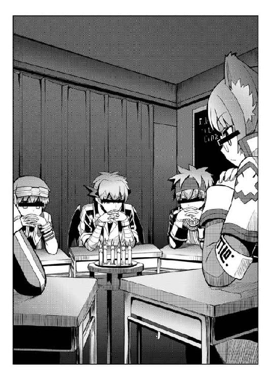

| 桜ノ杜ぶんこ 剣と魔法と学園モノ。LV.5 王座と王女と冒険者！ | |
| 佐山操 | |
| (2013) | |
桜ノ杜ぶんこ
剣と魔法と学園モノ。Lv.5
王座と王女と冒険者！
佐山 操

＃01 ドラッケン学園・漆黒の部屋
あまりにもアホすぎる議題が、黒板にカクカクとした力強い字で書かれていた──
そこは教室──と呼ぶにはあまりにも暗い部屋だった。暗幕で窓という窓を覆ってしまい、陽光一筋すらも入ってこられないように仕立てた部屋。
室内の明かりは、細々と燃える蝋燭が六本あるのみ。
普通なら四〇人くらいは余裕で入れる部屋に、明かりはわずかそれだけしかないのだから、室内の明るさがどのくらいかは想像がつくだろう。
そこには、普段は授業に使われている鉄パイプにニス塗りした木板を乗せた学生机が円を描くように並べられていた。
それぞれの机には、顔の目の部分に黒い横線を浮かべた者たちが座っていた。彼らはそれぞれ机に肘をついて指を組み、そこに自分の鼻を乗せるような格好で座っていた。
これはなにかの儀式なのか？
「本当にこれを読み上げるのか？ 俺たちは誤った方向に進もうとしていないか？」
黒板に背を向けている男がそう発言した。
どこかで聞き覚えのある声だが、顔に横線が入っているために確定はできない。が、着ている服は明らかに海賊を意識したデザインのコートだった。
「なにを今さら......。ここに俺まで招集したんだ。やっぱ止めましたはやめろよな」
そんな彼はプリシアナの制服を着たバハムーンだった......。シュテルと戦ったバロータによく似ているが、やはり、顔に横線が入っているために本人の特定はできない。そういえば、先ほどの海賊風の男は、どこかクレーエに似ている気がしたが、やはり気のせいなのだろう。
「わ、わかった。やればいいんだろ。やれば......」
そう海賊風の衣装をまとった男はヤケクソ気味に言うと、二、三回深呼吸をしてから大きく息を吸い込み、吸ったすべての空気を吐き出すように議題を叫んだ。
「第一三八回・なぜヴィントだけがモテるのか......会議を開催する！」
議題の宣言に拍手は起こらず、ただ全員が小さく頷いただけだった。
「本編ではお前らの学校は潰滅状態に陥ってるのに、こんなことをしていていいのか？」
「余計なお世話である！」
憎々しげな口調で吐き捨てたのは、ドラッケン学園制服を着たフェルパーだった。袖には風紀委員の腕章がついており、胸には副委員長というバッジがついていたが、もちろん、目に横線が入っているために誰なのかわからない。
「キミはこの由々しき事態がわかっていないようだね......」
「由々しき事態って......」
「ヴィン×クレのＢＬコピー本が某真夏祭であったという話だよ。存外、キミもモテるようだね......腐女子に」
「な......」
海賊風コートをまとった男は思わず腰を浮かしかけ、ヘナヘナと突っ伏した。
「なんてこった......」
「なぜヴィントだけがこんなにもモテるのか、か......。ヤツはメザシをくれるイイ奴だからじゃないのか？」
モーディアル学園の校章をつけた和服を着て、メザシを口にくわえた男は興味なさげな声でそう言った。
「その程度で世の中の女どもが、奴に群がるのか？」
「イイ奴には群がるだろう。当然だ」
「でも、いい人で終わる可能性もあるから、一概にそうとは言えないんじゃないかな」
プリシアナ風甲冑をまとった男がそう発言した直後、会場が一瞬だけシーン......と静まり返った。そしてゴホンと咳払いがされた後、プリシアナの制服を着て、肩提げカバンを斜めがけにした男が立ち上がり、スクリーンにデータを映し出した。
「奴がいい人かどうかはわからない。が、このデータを見て欲しい」
そこには、ヴィントの大まかな能力グラフが描き出されている。
「まず奴の能力だが、やたらと幸運値が高い。知力の数倍はある偏った能力値だ。これでナイトになろうと考えているのだから、面白いな」
次に映し出したデータは、これまでのヴィントたちパーティの戦績だった。
「アイツが公式・非公式に戦ったデータをできる限り集めてみた。すると面白いことがわかる」
「なんだよ。もったいぶらずに言ってくれないか？」
イライラした調子でドラッケンの制服を着て風紀委員の腕章をつけた男が先を促した。
「奴がいない場所では、あのパーティは決して強くないということだ」
ザワッ......。
会場がどよめいた。
「なんだ......と？」
それほどまでにヴィントが強いのか？ いや、あのパーティの双璧はシュテルとミーナであり、ヴィントはほとんど支援の銃撃くらいしか行っていないはず。
「私が調べた限りの情報であり、伝聞も含むからすべて正しいとは言えない。しかし、プリシアナのとある貴族の屋敷でヴィント抜きで暴れた時は、その屋敷の姫君に体よくあしらわれたそうだ」
ザワッザワッ......と会場がどよめいた。
「シュテルが......か？ あいつは、確かプリシアナの最強戦士決定戦でベルタと並んで最強の座を勝ち取った女だろう？ そんな姫君がいるのなら、プリシアナはその姫様を出すべきだろう？ そこの目つきの悪いバハムーンよりも、よほどいい勝負ができたんじゃないのか!?」
「誰が目つきの悪いバハムーンだ！」
「まぁまぁ、個人が特定されそうな言動は慎むべきだろう」
カバンを斜めがけにしたエルフは、ズレたメガネをクイッと上にあげてからそう注意をし、話を続けた。
「シュテルはベルタと並ぶ戦士だが、恐らく頭はさほどでもないということだろう。他にもヴィント抜きで海賊船を奪おうとして失敗したとかという噂もある。どこまで本当かはわからないが、ヴィント抜きでは、あのパーティはここまで成功はしなかったということだな......」
「頭と言うが、ヴィントの能力値を見る限り決して頭が良いとは......」
「決断力は数値化されていない。また、学力的知力という面で劣っているのかもしれないが、創意工夫や智恵という面では高いのかもしれない。こちらも数値化はされていないな。ともかく、土壇場のヤバイ場面ほど奴は活躍する」
「そうだな......。あの野郎は、コロシアムでの襲撃の際にも身を挺してキルシュトルテ姫殿下を守ったからな。盾を持っている時ならともかく、鎧すら着ていない状態で人の壁になるなんざ、普通じゃできん」
プリシアナ制服のバハムーンの言葉に、データを見せていたプリシアナ制服の男は頷いた。

「そう。あの男が決定的に他の男と違う部分は、危険を呼び込む幸運があるということだと私は推測する」
「危険を呼び込む幸運......？ それは、悪運ではないのか？」
一人メザシをポリポリと食べながら忍者風の男が訊ねた。
「奴の場合は幸運だろう。ピンチを演出できるのだからな」
ザワッ......。
また会場がザワついた。
「危険と隣り合わせの奴が危険と接触する時、必ずそこには女の子が存在する。つまり、奴は意図的ではないにしろ女の子を危機的状態に追い込み、そこを助けるわけだ。するとどうなる？」
「ふん......。女の子はキュンとするということか......。下らんな」
「下らんかもしれんが、結果的にヴィントはそれで数多くの女心をゲットしていると私は推測する」
「古来から女は危険な香りのする男に惹かれるって言うじゃねえか......。それと一緒ってことか？」
「その危険は意味が違う気がするが......」
「フリージア。もうひとつあると思うけど......」
プリシアナの甲冑男が手を上げてそう言いかけると、同じくプリシアナのバハムーン男とカバンを斜めがけにさげたメガネエルフはほぼ同時に叫んだ。
「名前を呼ぶんじゃねえバカ野郎！」
「だから貴様はウカツだと言うのだレオノチス！」
「あ、ひど......。どさくさに紛れて、ボクの名前も呼んでるよ......」
プリシアナ風甲冑を着た男──レオノチスはシュン......とした調子で答えた。
「まあいい。私のデータ以外になにがあるというのか？」
「うん......。基本的にヴィントの周辺に集まってる女の子って、一部を除けば利権目当てなんでしょ」
ザワッ......。
さらに会場がザワついた。
「り、利権とは......いったいどういうことだ？」
さすがに頭脳派っぽいメガネエルフでも、この言葉は想定外だったらしい。非常に慌てた調子でレオノチスに続きを促した。
「だって、ドラッケンの女の子たちが言ってたよ。バカだから良いんだって。亭主元気で留守がイイの典型にできるから、ちょうどイイって」
「..................」
会場は水を打ったように静まり返った。
「て、亭主元気で留守がイイ......とは、いったい......」
意味不明な言葉だが男を震撼させる響きにメガネエルフは動揺していた。
「ああ、それかぁ。それは旦那が元気で働いて留守にしがちだと、奥さんはなんでも好き放題にできていいって諺だね」
「..................」
会場は恐怖におののくような空気で包まれた。
「ド、ドラッケンには、そんな女しかいねえのか！ こ、怖すぎるぜ！」
「馬鹿者！ そんな女ばかりではないわ！ 例えば、余の従者であるアルベルトなどは、きちんと人に仕え、つくすことを知っている！」
部屋の隅っこの暗がりでずっと話を聞いていただけの──なぜかドラッケン学園の女子制服を着たディアボロスが、ドラッケン学園の女子を弁護するようにそう発言した。
「あの......その発言をすると......目線隠しの意味がない気がするんだがな......」
海賊風の男がヤレヤレとため息をつきながら、ドウドウとドラッケン女子制服を抑えた。そして話を逸らすように海賊風の男は結論を述べた。
「つ、つまり......奴は危険を呼ぶ男で決断力があってバカだから、危険でクラクラしちゃった女の子や利権目当ての肉食女子に人気がある。そういう結論でいいのかな？」
しかし、その結論に異議アリッ！ というようにバンッと机を叩いてプリシアナのバハムーン男が立ち上がった。
「そんな結論じゃ、俺たちがその真似をしても、女子にモテるとは限らねえぞ。第一、奴のように危険と隣り合わせの生活なんかしてねえしよ！」
「そもそも、危険を呼び込むというのなら、今回のドラッケン学園紛争は、ビンターナーゲル卿が呼び込んだものじゃないの？ だったら、それでモテてもいいと思うけど」
「いい加減名前を呼ぶのを止めろ、レオノチス！」
「余が呼び込んだわけではない！ あれはシュトライト卿が仕掛けたものであって、余が呼び込むまでもなく、始まることは予定されていたのだ！」
「で......モテたのか？」
「な、なにがだ......？」
プリシアナのバハムーン男は、ジリッとドラッケン女子制服の人ににじり寄った。
「ドラッケン学園紛争で、お前はモテたのかって聞いてんだ」
「余、余は......」
「余はなんだよ？」
「どうせヴィントに美味しい所を全部持って行かれたんでしょ。ボクがドラッケンの学生だったら、上手いことヴィントを利用して、あいつのモテ度をボクに移譲させてやるのになぁ......」
プリシアナ甲冑男は周りのイライラした空気も読まずに、そうボソリと発言した。
「だったら余の権限で貴様をドラッケン学園に編入させてやるから、奴を利用してみるがよい！ 断っておくが、奴はキルシュトルテ姫殿下ですらもてあます男だぞ！ どうやって貴様如きが奴を利用できるのかお手並み拝見と行こうではないか！」
「えー。ボクはプリシアナの制服が気に入ってるから、ドラッケンなんかに行きたくないよぉ......」
「貴様はワガママばかり言いおって！」
「まぁまぁ......。ったく、大人になって話し合いをしようぜ」
また仲裁に入った海賊風の男は、はぁ......と重いため息をついた。
「だいたいさぁ......あー......やっぱ止めとく」
「そこで言葉を止めるのは気持ち悪いってんだよ！ 言いかけたら最後まで言えっての」
「いや......だって......なぁ......」
「いいから言え！」
「じゃあ、言うけどよぉ......」
海賊風の男は仕方なさそうに大きくため息をついてから口を開いた。
「そもそも、こんな会議をしているからモテないんじゃないのか？」
会場は深淵の底に沈み込んだように静まり返り、冷気に包まれた。
「えっと......」
唐突に広がった奈落の底を思わせる冷気に海賊風の男は驚き、辺りをキョトキョトと見回した。しかし、彼以外は全員が脂汗を流しながら目まいに襲われ、立ち上がることすらままならない状態に陥っていた。
「くっ......。だ、第一三八回・なぜヴィントだけがモテるのか......会議は......これにて、閉会......する」
忌々しげな雰囲気を醸し出しながら、プリシアナの制服を着たメガネエルフは閉会の言葉を告げた。そして──
「なに？ これも読むのか......？ 第一三九回・なぜヴィントだけがモテるのか会議は一ヶ月後のプリシアナ学院一三会議室で開催します......だと？ まだ続けるのか......」
もしかしたらドコかでこんな会議が開かれているのかもしれない。
そんな謎めいた会議の一コマだった。
＃01 軍艦船首楼・上甲板
クーデター軍の軍艦を奪取して港を出航してから丸二日が経過していたが、今のところ追跡艦の姿も見えなければ、追跡されている様子も見えなかった。
操舵もできなきゃ帆の取り扱いも俺にはできない。できるのは見張り程度なので、船首の一番高い船首楼の上の甲板に陣取って前方の見張りをしているんだが、正直、追いかける気があるのか悩む状況だった。
それとも、クーデター軍は思ったほどの規模じゃないのか？
王都とドラッケン学園を中心に展開していて、他に軍を回す余力がわずかしかないのか？
そんな疑念が俺の脳内をグルグルしていた。
キルシュトルテ姫は、ドラッケン学園壊滅の情報を聞いた直後こそ悲壮感たっぷりの強張った顔をしていたが、今はいつも通りにわがままを言いまくっていた。
まぁ、クラティウスさんやくっついてきた貴族たちに心配をかけまいとしているんだろうな......。
そうそう、くっついてきたといえば、ロザリンドたちはついてきて本当に問題なかったのか？ ぶっちゃけた話、親や兄弟を人質に取られた時、あいつらはいったいどうする気なんだろうか？
俺か？ 俺の場合、母上を人質に取られた時は、そのまま人生御退場願おうと積極的に思っている。さんざん人をダメ息子とかバカ息子とか言ってたクセに、いざ俺が勲章もらったと分かるや掌返して、子どもの育成評論家みたいになりやがったクソババァだぞ？ 出版した本もベストセラーになったらしいから、もう我が人生に悔いなしってところだろう。息子にこれ以上迷惑をかける前に大人しく退場してほしい。というか、退場してくれ。
ただな、マジメに俺を育ててくれた父上を人質に取られたら困るし、エルトの家族も同じく困る。
というわけで、ぜひとも俺の母上を人質に取ってもらいたいもんだ。
その時はお涙ちょうだいの名演技で、義のために母を見捨てるシーンを作ってヴィントホーゼの物語を盛り上げてやろう！
とまぁ、俺のそんな決意をよそにさらになにもない時間が三日ほど続いた。
船の奪取から五日。もう手配が回って包囲網がしかれていてもいい頃だろう？ 名軍師様なら遅すぎる対応だぞ。
噂の名軍師がこうもなにもしてこないのは、おかしくないか？
いつ襲うの？ 今でしょう！
過去の栄光だけにすがるような奴だったのか？ いや、そんな程度の奴ならロザリンドもキルシュトルテ姫もあんなに恐れるはずがない。
いったい、どうなってんだ!?
「リーダー、ちょっといいですか？」
「あん？」
振り返るとテュルキスがいた。
「この船の大砲ですが、火薬の質がかなり悪いです。改良してもいいでしょうか？」
「火薬の質で、何がどう変わるんだ？」
そもそも、火薬の質というものは今から変更できんのか？
「射程距離が伸びます」
「重要だな」
「破壊力が増えます」
破壊力が増えると聞いて、どのくらいか聞こうと思ったが、テュルキスのワクテカした顔を見て、聞くと専門用語がビシバシ飛んでくる気がしたので、俺はあえて質問することをやめた。
「改良中に船が壊れないんなら、いいんじゃないか？」
「わかりました。やっておきます。くくく......」
テュルキスは無表情のままで文字通りニヘラーと口を歪め、火薬が収容してある船倉に降りていった。
破壊活動がテュルキスの趣味......ってこと、なかったよな。
危険はありそうだけど、まぁ、粗悪品の火薬で軍隊相手に戦争はできないって。
だいたい、積んである火薬は奴らのもの。ってことは、他の船も似たようなものなんだろ。つまり、こっちの火薬性能が上がれば戦った時、有利になるって寸法だ。
海戦になった時、せめてそれくらいのアドバンテージはほしい。
他になにかやれることはないか？
なにもない日が続くことで、俺たちの心に焦りと不安が出てきた気がする。
もしかしたら、これこそが名軍師様の策略ってやつか？
すべてはコーメーの策略なり！ とか言うやつ？
ブルルルッ......な、なんだか寒気がしてきたな......。
変なことは考えないようにしよう。
＃02 船倉
翌日の午後、俺たちのパーティだけで船倉に集まった。
船長室はキルシュトルテ姫の部屋になり、この船には口やかましい貴族が数人乗っているから、他にある個室の割り当てはそいつらが優先になる。そうすっと、俺たち平民は一般船員の雑魚寝部屋になり、パーティだけの秘密の話なんかできたもんじゃねえ。
結果、俺たちがヒソヒソ話をする時は船倉で行うと決まっていた。
まぁ、別に隠すような話じゃないんだけどな。
「火薬のデキはどうだ？」
昨日の今日でなにかができるとは思えないが、テュルキスに不可能はない......はず。
実際、テュルキスはニマーっと背筋が凍るような笑みを浮かべた。
「火薬は黒色火薬が中心だったので、ちょっといじりました。射撃用の火薬は煙が少なく威力が大きなものです。砲弾の中の炸裂火薬は煙の多いものと、威力重視でさらに燃えちゃう火薬にしました」
「えーと......」
なんというか......予想通り、俺には謎な暗号だった。
「なんで煙が少ない火薬にしたんだ？」
すまん、まずはそこからだ。
だいたい、そんな専門用語と効果は専門家のものだろう？ シュテルとリープも首を傾げてるぞ。
「発射炸薬の煙が少ないと、次弾が撃ちやすくなります。視界がさえぎられないからですね。当然、命中精度も高まります」
「ああ、なるほど......」
そんなことを考えながら大砲は使うんだな......。意外と兵隊って頭よくないとダメなんじゃないか？
「砲弾の炸薬に煙を多くしたのは、逆の効果を狙いました。相手の船内を煙だらけにします」
「要するに煙幕だな？」
「それに近いです」
「ちなみに、敵方の軍艦とのドンパチは、どれくらいできる？」
しばらくテュルキスは考え込んだ。
「一回の戦闘でどれくらい弾を使うかわかりませんが、二、三回くらいの戦闘はできると思います」
二、三回か......。
速度優先の中型軍艦だからしかたないが、さすがに心もとないな。
「弾切れたら肉弾戦しかないでしょ。そん時はあたしらの出番だろ」
シュテルとミーナがニッと笑って指を立てた。たしかにそれしかないんだが......。できる限りこっちの損害を少なくしたいから、肉弾戦は避けたいんだよな。
むしろ肉弾戦の方が破壊力デカイのはわかってんだが、近づくまでに船をやられる恐れがあんだろ。
陸地と違うから、そこを考えないといけない。
なにか弾の代わりになるものはないかと考え込んだ時、コンコンと船倉のドアがノックされた。
「パーティ会議中ゴメンねー。ヴィント君、いるでしょー？」
声の主は、シュトレン先輩だった。
「どーぞー」
俺の返事の後でドアが開き、シュトレン先輩の他にベルタ先輩が顔を出した。
「なんすか？」
辺りをはばかるようにして船倉に入り、ドアを閉めてから、おもむろにシュトレン先輩が口を開いた。
「最終的にキミたちはどうするのー？」
「はい？」
唐突なんで、質問の意味がまったく分からない。
なにが最終的なんだ？
俺はみんなを見回したが、やっぱりシュテルもミーナも顔に？マークが浮かんでいる。
なんのこっちゃ？
すると、エルトが困った顔をして俺の代わりに聞き返してくれた。
「姫様が負けたらどうするってこと......ですよね？」
シュトレン先輩は頷き、そして俺を見た。
見つめられてもなぁ......。
俺が思わずポッと頬を染めると、シュトレン先輩はニッコリと笑った。
「なんか勘違いしてる？」
「......ンガッ！ ングッ！ 凸凹×ッ!!」
次の瞬間、俺の足の甲にエルトの踵が炸裂した。
激痛に跳び上がろうにも足を踏まれたまんまだから跳び上がることもできず、場所が場所なだけに悲鳴も上げられず、俺は涙目になりつつ歯を食いしばり、しばらくその場に突っ伏した。
くっそ、なんだよ。みんな俺が悪いのか？
だいたい、負けることなんざこれっぽっちも考えてねえしさ！
「なんすかその最終的に滅亡ムードは？」
「キミの強運には甚だ感服している。だが、これは姫様とも話し合ったことだ。私たちも考えなければならない」
考えるって敗戦した後ってことか？
ったく、そんなの負けた時に考えればいいだろうに......。
「だったら、いざという時は、姫様を連れてモーディアルに逃げ込むとかっすかね」
「はぁ？」
はぁ？ って......俺、なんかマズいことを言ったか？
なんで二人ともそんな驚きの顔を見せんだよ？
モーディアルがキライ？ 好き嫌い良くないぞ。
心配になって右隣を見ると、シュテルとミーナ、そしてリープはウンウンと頷いていた。
「まぁ、妥当な線じゃない？」
「せやな。そっからどこか別の大陸とか目指してもええしね」
「鯛焼きがあればいいのっ☆」
左隣のエルトを見ると、ヤレヤレと言うように肩を竦めて見せていたし、テュルキスは我関せずと『干し椎茸は伝奇ナメコの夢を見るか』という本を取り出して読み出していた。
「だってキミ......最終的に国を奪われたら、姫様はお尋ね者なんだよ？」
「えっと......だから？」
お尋ね者になったんなら、より一層安全な場所に匿ってやらないとダメだろ？ まぁ、あのキルシュトルテ姫様の性格を考えると、大人しく匿われているようには思えないから、必然的に逃亡者生活って感じかな？
「先輩。ヴィントには遠回しな言い方をしてもダメですよ。たまにお利口さんに見えますが、基本はオバカさんなんですから」
「なんだよエルト。おまえだけわかったような顔をしやがって」
「だってそうじゃない？ あんたバカでしょ!?」
「ひ、人をバカって言う方がバカなんだぞ！」
「そんなことを言う方がよっぽどバカよ」
「まぁまぁ、落ち着いて！」
俺とエルトの言い争いにシュトレン先輩が割って入ってきた。
その時、だまって聞いていたベルタ先輩がクスクスと笑い出した。
「ふふふ......本当に君という男は最高だね。みんなに好かれるわけだ......」
この中に......男って俺しかいないから......俺のことだよな？
「そ、そうなんすか？」
「無自覚でそこまでナイト気質を持っているとはね。感服させられたよ」
「そ、そうっすか......？」
なんのことだかサッパリわからんのだが......。
「どういうつもりで先輩方がそんな話を持ち出してきたのか俺には分かんないすけど、俺としてはとことんやり合う気があったから、こうして船を奪って逃走したわけですよ」
「そうだねー」
「俺としては負ける気なんかサラサラないんですけど......」
二人の先輩は困ったような表情を浮かべて、顔を見合わせた。
つまりなにか？ この船に乗っている人間で勝つ気があるのは俺だけなのか？
隣を見ると、真剣な顔をして俺の言葉に頷いているシュテルとミーナとリープがいた。
訂正──勝つ気でいるのは、俺のパーティだけか？
「正直な感想を言うと、そこまでキミたちが姫様を守護してくれるとは思わなかったのよー。船に乗って逃げ出したら、適当な所で離れちゃうのかなって思ったわけ」
「なんで......そうなんすか？」
それって責任放棄だろう？
「キミたちは私たちのように姫様との付き合いは長くないでしょー。どっちかって言うと迷惑をかけられていた方じゃない？」
「まぁ、そうですね」
「だから、無理して最後まで付き合う必要はないっていうか......」
「ここまできてなにを言ってんですか？」
旗色が悪くなったからって、いきなり見捨てるなんてことはヒーローはやらないし、そんなの騎士道にも反するだろうに。
「だいたい、逃げ出したり姫様を売り飛ばしたりする気があるなら、学校を包囲された段階でやってますって」
そう。俺たちには姫様を護り通す責任がある。
少なくとも、俺たちを逃がす時間稼ぎのために、最期まで戦い続けてくれた他の学生たちに対する責任と義務だな。合わせ技で責務ってやつか？
不器用なラガーマンたちや、カーチャせんせの顔が、大空に浮かんで見えるぜ。
（注意・あくまでもヴィントの脳内視点であり、ここは薄暗い船倉です。）
「ヴィントってこういう奴なんで、無理に追い出しをかけないでも大丈夫ですよ。あたしたちも、もう分かっていてついてきてますから」
エルトの話を聞いていると、どうやら二人の先輩方は、俺を逃がすつもりでこういう話を持ちかけてきたってことか？
「それにですね。もう、ヴィントホーゼが姫様の味方についてるってクーデター軍に知れ渡ってますよね。だったら、今さら逃げるなんて無理じゃないですか？」
「そ、それは......そうだけど......」
「次の舞台劇のネタにされることを考えたら、民衆の英雄が無様な結末を迎えちゃうじゃないですか？」
「でも、しょせん舞台劇よ!? キミたちの生命とは秤に掛けるまでもないじゃない！」
まぁ、確かに無責任に流されている劇だしなぁ。
でも、この逃亡劇は絶対に注目を受けるネタになるわけで、そこで無様な話を作られてみろよ？ 世界中で俺が笑いものにされちまうじゃねえか。
オマケに無様な最期を遂げやがってと、母上が血眼になって地獄の底まで追いかけてきて、俺をレスキル（レスキュー＆キル──つまり、救ってまた殺すこと）しまくるぞ。
コワーッ！
それだけはイヤだな......。
「じゃあ、キミたちは最後までお付き合いしてくれるって信じていいのかなー？」
「なにを今さら」
「あたしらのリーダーはヴィントなんで、その意志に従うだけよ」
「ボクも同じや」
「リープも同じなのっ☆」
「リーダーの意志尊重で」
「ということで、ご心配はないと思いますよ。あたしもヴィントの意志に従います」
二人の先輩はもう一度顔を見合わせ、そして肩を竦めた後でヤレヤレというような苦笑を浮かべた。
「そんなことより、貴族の皆様はどうすんです？」
具体的に言うとロザリンドとレベルの二人だな。
俺の言葉の意味を察したんだろう。ベルタ先輩が苦いモノを食べるような顔をして口を開いた。
「正直なところ、どこまで信用していいのかはわからない。ただ、ロザリンド君にかんしては、自分で注進してきたこともあり、信頼できるとは思う」
どうだろう？
あいつの二つ名は〝狡猾なる〟だぜ？
土壇場で裏切る奴だよ？ 実際に裏切られた俺が言うんだから信憑性高いっしょ？
そんな口には出さない思いが俺の表情に浮かんでいたのか、シュトレン先輩はプッと吹き出した。
「大丈夫大丈夫。今さら裏切ったところであの子に行き先はないってー」
「いやいや分かりません。あいつはそう思わせておいて狡猾にも裏切ります！」
あれ？ ドコかでくしゃみしている奴がいるな......。ここまで聞こえてきたぞ。
「もう一人のレベル君もそんな度胸があるような子には見えないけどなー」
レベルって......確か、風紀委員の奴だったよな。もう一人の執行部の男は完全に忘れ去られているというのに、こいつはきっちり出張ってきてやがる......。貴族ってだけで、いいよなぁ。
「確かに結構なヘタレだった気がします」
「でしょー。あたしの勘は当たるんだから！」
つまり、まぁ、この船の乗員は今の所安全ということだな。ああ、ロロリーを除いてな。
「しかし、このままタカチホに向かうにしても、この人数じゃ心許ないですよね」
「そうね......」
今の所一人も欠けていないから、この船は学園を脱出した時のまま一四人で動かしている。凄まじい最小単位だから、いる者はすべて使えというノリでキルシュトルテ姫までキッチリ働いている。
この人数で包囲網を潜り抜け、タカチホまでたどり着けるのか？
そう悩んだ時だった。緊急を告げる見張りの銅鑼が鳴り響いた。
「何事だ!?」
全員が武器を持って船倉を飛びだした。
＃03 船首楼・上甲板
この船は三本マストのガレオン船だから、船首楼が船尾楼よりも低くなっている。異変を察知したのは、より高い船尾楼の甲板で監視していたベリーシャだった。
「前方一時半の方向に艦影アリ！ 数は......八......いや、一〇隻！」
「一〇隻じゃと!?」
船首楼の上甲板に俺たちが上がった時、すでにキルシュトルテ姫がそこに陣取って望遠鏡を手にしていた。
「いきなり一対一〇かよ......」
「愚痴ったってはじまんないよ！ さっさと戦闘準備しないとね！」
「ヴィント！ 戦闘指揮はそなたに任せるのじゃ！」
「は？ あ、はい！」
「クラティウスは舵を取れ！」
「畏まりました」
慌ただしく人が動いていく。
そう、六〇人から八〇人は乗れるこの船を、たった一四人で操船しているんだから仕方がない。
船首楼の甲板には俺とシュテルが残り、船尾楼では操舵手としてクラティウスさんが舵を握り、その脇にキルシュトルテ姫とシュトレン先輩が立っていた。ベルタ先輩はテュルキスたちと大砲の操作に回っている。
くっそ。せめてゴールデン・バディスタ号の仲間がいれば、もう少しマシな戦いができるのに......。
愚痴ってもはじまらねえ！
『リーダー！』
テュルキスの声が伝声管から伝わってきた。
『指示は伝声管でお願いします。それと、人員が足りないのでできるだけ左舷だけの砲撃戦をお願いします』
「了解した！」
この指示は別の伝声管を伝ってキルシュトルテ姫と舵を握るクラティウスさんにも伝えられていた。
『テュルキス殿。了解いたしました！』
「こっちも準備よし」
シュテルはありったけの投げ槍を船首甲板に用意していた。
確かに、これなら大砲に匹敵する破壊力があるな......。
問題は前方の一〇隻がこの船よりもかなりデカいフリゲート艦だってことだ......。
こっちは一八ポンド（二八口径）主砲列の左舷七門しか使えない。一撃で全艦を葬ることは無理だってことだ。
くっそ......。どう戦う？
前方の艦隊は、刻一刻と近づいてくる。
その時、船尾楼の見張りが、悲鳴に似た叫びを伝声管に伝えてきた。
『後方に艦隊！ その数、一五隻！』
「なんだと!?」
後ろを振り返っても、船尾楼が邪魔で船首楼からは見えないのがこの船の難点だな。
合計二五隻の船に挟まれたわけか......。
「くっそ。罠だったか......」
ここまできて、あきらめてたまるかってんだ。
「大砲班！ 左舷一番から七番までよーい！ 奇数砲門は弾種・炸裂弾。偶数砲門は弾種・煙弾をセット」
『了解！』
主砲甲板から女の子たちの声が響いてくる。
「取舵！」
『ヴィントさん！ それでは右舷を晒すことになります！』
「いいんだ。クラティウスさん！ 今は取舵！」
『とーりかーじ！』
船は大きく左に向きを変える。
ある程度の向きで俺はさらに舵の修正を伝えた。
「よーそろー！」
『よーそろー』
前方艦隊は俺たちの進路変更に気づき、それに合わせて進路を遮るように向きを変えてきた。
いけるぞ！
「シュテル。ここから槍を投げたら、どれくらい届く？」
「んー......届かせるなら二〇〇ってとこかな？ でも、確実に当てるなら近いほどいいかな。なんで？」
「船はかなり近くの距離ですれ違う。できれば、吃水下にそいつで穴をあけて欲しい」
「了解。可能な限り、狙ってみる」
シュテルの槍は音速を超える。
そんな槍が舷側をぶち抜けば、浸水して船は航行もままならなくなる。
とにかく前方艦隊の数を減らすしかない。
後方艦隊が迫っているとは言えども、近いのは前方艦隊だからな。
そう考えている間に、バンッ！ という砲声が轟いた。
ヒューッ！ という風切り音と共に砲弾が飛んでくる。しかし、よほど遠くから撃ってきたのか砲弾は遙か頭上を横切り後方に水柱を立てた。
「テュルキス！ あの船の大砲の射程距離はいくつだ!?」
『この大砲と同じなら、有効射程は三五〇です！ 確実に当てる気なら近づいてきます』
「こちらは狙って外すな!! 十分に引きつける」
『了解！』
こっちが撃ち返さないのを見ると、さらに前方艦隊は無駄弾を撃ち始めた。
バンッ！ とかバスッ！ とか聞こえる砲声は心臓に悪いが、確かにテュルキスの言う通り、大砲を撃った船の周囲は黒煙が立ちこめて視界が最悪になっていた。
「ヴィント！ このままの進路で進むと、ぶつかるよ！」
そう、この船が取舵を切った時から奴らは船をぶつけることを考えていたんだろう。この船の針路と前方艦隊の進路は、三角形の頂点に向かって進むように交差していた。
このまま進めばぶつかるのは確実であり、こっちは小型船に分類されてもおかしくない中型快速船。あっちは戦闘用のフリゲート艦だ。ぶつかった結果はあっちの勝ちになる。そんなことがわからないほど、俺も愚かじゃない。
「面舵いっぱい！」
『おーもかーじ、いっぱい！』
伝声管からクラティウスさんの復唱が響いた。
直後、艦は急旋回を開始する。やがて船体は一列縦隊で突撃をかまそうとしていた前方艦隊と平行に並ぶ角度に入った。
「よーそろー！」
『よーそろー！』
すれ違いの距離は約八〇メートル。
オマケに奴らはこっちが取舵を切った時に一斉に向きを変えたもんだから、一列縦隊に等しい並びになっていた。
「ってえええええええええええええっ！」
『撃ちます』
七つの砲門がほぼ同時に火を吹いた。
上がった煙は確かに少なく、視界の妨げもない。砲撃は一隻を撃沈し、一隻を猛火に包んだ。
さすがテュルキス！
だが、今は褒めてる場合じゃねえ。
「シュテル。思いっきりぶち抜いてやれ！ ただし、炎上してない艦艇を狙えよ」
「はいよっ！」
再び前方艦隊から砲声が轟いた。
ビュンッと飛んできた砲弾は甲板の手すりを掠めて砕き、飛んでいく。
「次弾装填！ 弾種同じ！」
『次弾装填。弾種同じ』
「装填次第撃て！」
バスバスバスバスとズレた砲声がこだました。
装填次第発射ということで、今度の砲撃はそれぞれの砲門で時間差ができた。そのためひとつの艦だけではなく次々と別の船に砲弾が吸い込まれていく。
「うりゃあああああああっ！」
同時に船首からはシュテルの投げ槍がマッハの勢いで撃ち出され、舷側をぶち抜いていった。どっちが主砲なんだか分かんねえ威力だな......。
後で知ったことだがシュテルのこの槍は、クーデター軍からグングニル―つまり、投げたら必ず当たる槍と名付けられ、怖れられていたらしい。
まぁ、投げ槍自体は、どこにでもある普通のものなんだけどな。
投げた瞬間にズバンッ！ という大砲並みに空気を砕く音を立てて放たれるや、ソニックブームが海面に槍の軌跡を残して舷側に大穴をブチあけていく。大砲の弾よりも被害がデカくて、当たったらアッという間に浸水して沈没していく。中には当たり所が悪かったか、船が真っ二つに裂けちまったものまであった。
「あのさ......。威力増してない？」
「そうかな？ あたしはいつも通りに筋トレしてるだけだけど......」
シュテルのいつも通りの筋トレ......。
長い棒の両端に縄で作ったブランコみたいな椅子をくっつけて、そこにエルトとテュルキスを乗せた即席のバーベルみたいなものを作って、片手で上下運動するとかって......アレか......。
最初のウチはエルトは怖々と縄につかまっていたが、今では慣れて魔術書を読むとかしてる所を何度か目撃してる。ちなみに、テュルキスは最初から余裕な顔で読書をしてたな。
話が逸れたな。
テュルキスが改良した火薬を使った大砲と、シュテルの槍のおかげで挟み撃ちにされる前に前方艦隊を潰滅した俺たちは、そのまま後ろから追ってきた艦隊に矛先を向けた。
『リーダー。砲身が焼けていますので、次は右舷の大砲を使います！』
「了解。操舵よろしく」
『了解しました！』
後方から迫ってくる艦隊は一五隻と五隻も多い。オマケに前方艦隊の潰滅状況を見ているからそれなりに対策を立ててくるだろう。こっちも用心してかからないといけないな。
船を横付けされて白兵戦に持ち込まれたら、ベルタ先輩とシュテル、ミーナがいる分、逆にラッキーなんだけど、包囲されて砲撃されたらひとたまりも無い。
そんな風に迷っている間にも敵艦は接近してくる。
「次弾装填 弾種・煙弾！」
煙弾って言ってもただの煙幕弾じゃない煙が多めの弾だ。攻撃力が損なわれることはない。
さらに、俺の合図で舵が切られて右舷の砲門が後方艦隊に向けられた。
「...ってぇえええええええええええっ！」
こちらの砲門が火を吹いた直後、あっちも一斉に撃ってきやがった。
物凄い数の砲弾がこっちに迫ってきて、マストをへし折り、帆を引き裂いて行く。
これだけ撃たれて致命的な命中弾がないのが軌跡だ！
「装填次第撃ちまくれ！」
もう、こっちで指示をしているヒマなんかなかった。
敵船はＡＫ・Ｂ４８ＭＡＲＩＮＫＯの射程距離にも入っているから、甲板に見える船員に狙いをつけて撃っていく。少しでもあっちの戦力を削っていかないと、こっちがやられちまう。
おまけにシュテルの投げ槍だって数が限られている。
前方艦隊の四隻を撃沈、そして後方艦隊の六隻を撃沈したところで打ち止めだった。
「旗艦に体当たりをかまして乗っ取るかい!?」
何度目かの砲撃を食らって木片が飛び散る中、シュテルがそう怒鳴るように言ってきた。
「そうしたいが、どれが旗艦だが分かんねえよ！」
物凄い黒煙が立ちこめていて、どこに旗艦があるのか本当に分からなかった。
こっちの命中弾によって船が燃えている煙。そして、あっちの砲撃煙による黒煙。なにもかもが入り交じっていて、なにがなにやらさっぱり分からない。
「くっそ......」
シュテルがかろうじて残っている船の手すりの陰から顔を上げて様子を窺おうとしたその時だった。すぐそばの舷側が轟音を立てて爆発した。
「なっ!?」
「ぐえっ！」
シュテルはその爆風で吹き飛ばされ、俺はそのシュテルと船の手すりにサンドウィッチにされて、ひき殺されたカエルみたいな声を出しちまった。
「ぅあ？ すまん！」
あわててシュテルは飛び退き、俺を助け起こしてくれた。
「いいって。しかし......」
助け起こされて辺りを見ると、こっちの船も激しく燃えはじめて舷側と甲板に大きな穴があいているのがすぐに分かった。
沈没も時間の問題だ。
「テュルキスたちは無事か!?」
こんな直撃弾をくらって無事でいられるだろうか？
俺とシュテルは不安を抑えながら壊れた甲板の縁から、階下の砲甲板をのぞき込んだ。
「ゲホッ......ゲホッ！」
咳き込む声が聞こえる。
「無事か!?」
「だ、大丈夫！ 全員生きてる！」
エルトの声だった。
急いで消火をするために砲甲板に降りると、全員、煤で真っ黒になりつつも大したケガもなく俺を迎えてくれた。
「大したケガがないようでよかった！」
「火薬を改良したのはよかったのですが、その威力に対して砲身の強度が足りなかったようです......」
「はい？」
つまり......今のは暴発？
「王国海軍の大砲も、意外とボロですね」
そう辛辣なことを言いつつ、テュルキスはテヘペロと舌を出した。
しかし......どうすんだ？
右舷三番砲が暴発したせいで、二番砲と四番砲は使い物にならなくなっていた。おまけに暴発なんて危険があるなら、もう大砲を使うことができない。
「砲弾は!?」
「弾薬庫は無事なので、まだ残っています」
シュテルの質問にテュルキスは指さしながら答えた。
「どうする気だ？」
「決まってんでしょ？ 大砲が使えないなら、手でぶん投げればいいのよ！」
「..................」
それって......決まってることなのか？
どう考えても、常人にはできない技だと思うぞ。
だが、少なくともこの船には、それが決まっていることのように考えている人間が二人いたっぽい。
シュテルとベルタ先輩だった......。
二人は小さなボーリングの弾ほどもある砲弾を片手で持ち上げ、テュルキスが即席で取り付けた導火線に火を着けると、野球のボールでも投げるかのようなピッチャーモーションで振りかぶり、接近してきた敵艦に思いっきし投げつけた。
考えてみると、ベルタ先輩は学園での戦いでマンホールの蓋を軽々と盾代わりに使い、円盤投げよろしくぶん投げたとか言ってたもんな......。砲弾くらい......軽いのか？
こっちの船が炎上して砲撃が途絶えたことから、もう抵抗力がなくなったと判断していたんだろう。
うかつにも無防備に接近してきたフリゲート艦の舷側直撃で二発の弾が当たって爆発。船は真っ二つに折れて沈没していった。
なんか......人間兵器が二人も乗っていると、銃とか大砲とかの存在が虚しくなってくるのは気のせいか？
「うっしゃーっ！ この調子でガンガンいこうか！」
なんか、もう、俺の出番はなくなっていた。
＃04 暗礁地域・座礁した船の上
結論から言うと俺たちの乗っていた船は座礁した。
暴発した大砲による損傷箇所が致命傷だった。が、別にあの後方艦隊との戦闘で沈没したわけではなく、その後、集まってきた海賊船どもに執拗に追いかけられて戦闘が継続してドンドン損害が蓄積し、とある島の近くの暗礁に乗り上げて座礁した。
座礁前に捕らえた海賊船の乗組員の話によると、王弟派のクーデター軍がキルシュトルテ姫に賞金をかけたらしい。
くそ......。やりたい放題やってくれてんじゃねえか......。
当たり前の戦法なのかもしれないが、どこに追撃者がいるのか分からないから、精神的にジワジワと追い詰められている気がして地味に痛い。
そんな不安を煽る作戦と、賞金目当てのウジ虫どもに追いかけ回される作戦を合わせ技でくらい、気がついたら座礁していたって感じだった。
幸いというか座礁した船からボートで漕いでいける範囲に島があり、俺たちはそこに緊急避難することにした。
船はいつ沈むか分からない状況なんだけど、安全のためにベルタ先輩たちを先に送りだそうと提案した。しかし、交戦中は大人しくしていたレベルがギャーギャーとわめきだした。
「いつ沈むか分からない状態の船に、姫様を残されるのは大問題だと思うんだけど！」
「って言ってもなぁ。先に調査する必要があんでしょ？ なにがいるかも分からない島なんだからさ。俺とシュテルとミーナ、それにリープとエルトが行くのが一番だと思うんだが......。で、問題がなければ俺がボートを漕いで戻ってくる。それでいいだろう？」
「いや、姫様をこの船に残しておくのは問題だ！ だから、我々が御守りすればいいだろう？ ロザリンド殿も姫様と一緒に渡れば護衛は問題あるまい？」
「我々って......あんたとロロリーか？」
「ロロリー？ ああ、ロザリンド殿のことか。そうだよ。ボクとロザリンド殿、そしてクラティウス殿で護っていれば問題はないだろう？」
「..................」
穿った見方をしていいか？
要するに、自分が先に安全な島に渡りたいってわけね。
しかし、船に積んであるボートで使える船は五人乗りのモノが一艘だけ。他は、砲撃でメチャメチャになっていて、それは奇跡的に助かった一艘だった。
ボートを行き来させる漕ぎ手が一人入るから、姫様とクラティウスさん、そしてロロリーとレベルを入れたら満員。漕ぎ手はシュテルかベルタ先輩に任せるとすると、戻ってきている間の護衛がクラティウスさん以外はかなり──いや、メチャクチャ心配なメンツだった。
「やっぱ先に......」
「我々の腕前を信用できないというのかい？」
いや、まったくその通りで......。信用なんかこれっポッチもできない。
シュテルとミーナや、ベルタ先輩たちを見たら、俺自身だって頼りなくて堪らなく見えるっての！ しかし、それを口にしたら絶対にまたギャーギャーわめき出すに決まってる。
そもそも、こいつ......風紀副委員長としてふんぞり返っていたクセに、学園紛争の時は全然役立たずだっただろ？ そんな奴で護衛もクソもあるかっての。
こんな護衛じゃどうやっても不安は拭えない。
ロロリーにアルベルトがくっついているならまだ信頼できなくもないが、ロロリーとコイツだろ？
どうやって引き下がらせたものか......。
とりあえず罵声でも浴びせてケチョンケチョンにしてやろうと息を吸い込んだその時、俺の行動を読んだようにクラティウスさんが俺の肩に手を置いてきた。
「ヴィント殿。姫様がかかわることゆえどこまでもご心配されるのは分かりますが、ビンターナーゲル卿とベトリューガー卿の腕を信頼されてもよろしいかと思いますが......」
マジ......で？
横目でちらーっとクラティウスさんの様子をうかがうと、すべて分かっているというように彼女は俺に目線を合わせてきた。
なんつーか......付き人って大変なんだな。
「分かりました......。とりあえず、護衛をよろしくお願いします」
無論、俺がよろしくお願いしますと言っているのはクラティウスさんに対してだ。しかし、レベルは勝手に勘違いをしてニッコリと笑いやがった。
「分かってくれると思っていたよ！ 大丈夫、任せて！」
うん。お前じゃ話にならんということは、とうの昔に分かっていたさ。
こうなると、とにかく行き来を早くするしか方法はない。第二陣が到着するまでの間、なにも起こらないことを祈るしかなかった。
＃05 座礁船・甲板
結局、漕ぎ手はベルタ先輩に任せることとなった。
まぁ、ベルタ先輩ならいざという時に戻って対処してもらうこともできるし、体力的にはシュテルと同等の疲れ知らず。先輩をこき使うような気がして多少引け目を感じることはあったけど、まぁ、文句を言うような先輩じゃない。
「気をつけて......お願いします」
「分かってるよ」
「クラティウスさんも、気をつけて」
「ありがとうございます」
「なんじゃ、ヴィントよ。わらわに見送りの言葉はないのか？」
真っ先に声をかけなかったからか、キルシュトルテ姫はご機嫌斜めだった。
「あー......姫様もごきげんよう」
「おざなりじゃな」
「苦労するのは姫様じゃないと思ってますんで」
「なっ......」
「ヴィント！ 無礼にも程があるぞ！」
きたきたきた......。ロロリーの小言がきたきた。
「うっせ！ 肉の壁！」
「な......なんだ、と？」
「いざとなった時、お前は生命に代えても姫様を護る盾役だからな。真っ先に逃げたら、シュテルが地の果てまでも追い詰めるぞ」
「貴様が追い詰めるんじゃないのか？」
「俺よりシュテルの方が怖いだろ？」
「ま、まぁ......」
「じゃあ、出発するよ！ 急いで戻ってくるから、船に残る人たちもすぐに出られる準備をしておいてね」
「了解っす」
俺はもう一度クラティウスさんとオールを持つベルタ先輩を見てから敬礼して、ボートを見送った。
しかし、ボートを漕ぐ速さがハンパないな......。
なんか......ボートの下にサメとかシャチとかを従えて漕がせてんじゃねえ？ と思うくらいの勢いでどんどんボートが遠のいていく。
「ヴィント。第二陣はどうする気？」
「あー......」
俺と並んでボートを見送っていたエルトは、心配そうな顔をして聞いてきた。
「護衛が必要だからな。シュトレン先輩、エルト、シュテル、ミーナ......かな」
第二陣が行ってようやく八人が上陸できる。つまり、全部で四往復しなきゃならないことになる。
最悪は第二陣が降りる時にベルタ先輩に上陸してもらって、シュテルに漕ぎ手を交代してもらった方がいいかもしれない。防衛戦闘なら、シュトレン先輩とベルタ先輩がそろっていた方が息も合うだろうし......。
そんなことを考えている間に、ボートは島についていた。
距離にして四〇〇メートルほどか？ その距離を、尋常じゃない速度で漕いで、アッという間にたどり着いた様子だった。
「こりゃ、すぐに戻ってくるな......。シュテルとミーナ。それにシュトレン先輩とエルトは乗船準備をしてくれ。他のみんなは周辺警戒をよろしく」
「了解！」
俺は望遠鏡を手にして浜辺の様子をうかがうことにした。
もう、四人を浜辺に下ろしてベルタ先輩はこっちに戻ってきつつある。
浜辺の四人──正しくは三人は椰子の木の木陰に荷物を置いて一息ついている様子で、一人、クラティウスさんが辺りの様子をうかがっていた。
おいおい......ロロリーとレベル。全然護衛の役を果たしていねえじゃんか！
場所は一見すると見通しのいい浜辺だが、浜辺からちょっと島の内部に入ると木が絡みつくように生い茂っている密林で、絶好の襲撃ポイントに思える。
なんだか、そう考えたらそこに伏兵がいるような気がして仕方ないんだが......。
なにか......嫌な予感がするのは気のせいじゃない......か？
「アルベルト！」
どうしても不安をぬぐい去れなかった俺は、近くの甲板で出発準備をしていたアルベルトに声をかけた。
「ヴィント様、なんでしょうか？」
「あの浜辺まで飛べるか？ ロロリーのいる場所までなんだけど......どう？」
俺の質問にアルベルトは浜辺に目をやって目算で距離を数え出した。
「問題なく飛べるとは思います。重い荷物がなければですが」
「すまんが飛んで行ってくれ。嫌な予感がする！」
「分かりました！」
さっさとこれに気づけばよかった。
飛べる人間がいるんだから、一緒に送り出せばよかったじゃねえか！ 本当に俺ってバカだな......。
アルベルトがあわてて武器だけを持って飛び立ち、もう目と鼻の先までボートを漕いできていたベルタ先輩が、彼女を見て何事と振り返った時だった。
密林の草をかき分け、変な仮面を被って腰蓑をつけた謎の部族が現れた。奴らはすぐさま浜辺で休憩している四人に襲いかかった！
「姫様！」
「ベルタ先輩！ 早くこっちへ！」
座礁船のすぐそばまできているここからすぐにＵターンするよりも、シュテルたちを乗せて戻った方が戦闘効率はいいはず。
それにベルタ先輩は頷き、さらにパワーを込めた漕ぎ方で瞬く間にボートを接舷させた。
待ち構えていたシュテルたちはすぐさまそれに飛び乗り、エルトはボートの先頭に立って呪文を唱えるべく身構え、シュトレン先輩も弓を構えた。だが、今すぐどうこうできる距離じゃねえ。
間に合え。間に合ってくれ！
浜辺は乱戦状態になっていて座礁船の上からじゃ、望遠鏡を使ってもどうなっているのか確認することすらできない。五、六〇人に取り囲まれてんだから、あの四人だけじゃ無茶もいいところだ。とてもクラティウス一人じゃ三人は護れない。
くっそ！ 貴族のメンツなんか気にせずに、絶対反対しておくんだった！
今となっちゃ後の踊り......いや、糸のほつれか？ ええい、どっちでもいいや。
ここからじゃＡＫ・Ｂ４８ＭＡＲＩＮＫＯも射程外だから座礁船に残されている俺たちは、ただ見ているしかできない状況だった。
＃06 謎の島の浜辺
結局、クラティウスさんは実質四〇対一ほどの戦いを強いられており、救援も大変な戦いを強いられた。
エルトが放ったファイガンで焼き払った場所を突破口にシュテルとミーナが突っ込み、後方からシュトレン先輩が弓で支援してとにかく数を削る。そして数歩遅れて合流してアッという間に白兵戦四強がそろい踏みのまさにグランド・ゼロ状態。
遠くから望遠鏡で見ているしかなかったけど、総毛立つ思いってのはこのことだと思ったね。なんか、おかしな仮面を被った部族たちが哀れに思えてしまった。
まずシュテルが槍を振り回して敵陣を切り裂いて行く。俺的には槍ってのは突くもんだと思っていたんだが、シュテルの場合は風車みたいにブンブン振り回して穂先で斬り裂き、柄で殴り飛ばしって感じだった。よく折れないもんだと思うんだが、その辺はあいつの爺さんの代から使っている槍ってことだからなにか特殊な加工でもしてあんだろう。
でもって、シュテルによってほつれた敵陣に、これまた旋風剣よろしくベルタ先輩とミーナが二刀流で踊るように敵を薙ぎ払っていく。さらにクラティウスさんが切っ先鋭いレイピアで突き崩すんだ。
なんか......ぶっちゃけっと、ゲームのマップ兵器による戦場の駆逐シーンを見てるみたいな気分だった。
でもって彼女らがいないあっちこっちの場所でエルトの魔法が爆裂し、シュトレン先輩の矢が飛んでいくんだぜ。さらに追い打ちをかけるようにアルベルトの魔法が飛んでいく。
奴らに逃げ場なんかどこにもない。
ものの数分で浜辺は死屍累々の状態になっていた。
嗚呼、無情......。
哀れみしか出てこねえや......。
四〇対七の戦力差で奴らは勝利がひっくり返るとは思わなかっただろうなぁ......。
ミーナがボートを漕いで戻ってきたので、後に残っていた俺とリープとテュルキス、そしてレベルの付き人のベリーシャというノームが乗って、全員無事に島にたどり着くことができた。
アルベルトが飛んでくれたおかげで、三往復で済んだって感じだな。
だが、俺たちが島に着いてみるととんでもない事態に発展していた。
「姫様がいらっしゃいません！」
「はいいいいいいいいいいいいいいっ!?」
一難去ってまた一難とはこのことかよ!?
最悪の事態だ。
シュテルたちがたどり着いた時からキルシュトルテ姫の姿は見当たらず、さらにロロリーの姿もなかった。
レベルは口ほどにもなく、戦闘終了後に頭から砂浜に突っ込んで足だけ出ている状態で発見され、ベリーシャの手で救助された。
「す、すまん......。まさか、姫様が誘拐されるとは......」
「ロザリンド様もいらっしゃいません！」
アルベルトの顔も真っ青になっていた。
自分の主人がいないんだから、当然だな......。
とりあえず戦場の周辺をミーナとリープに偵察してもらい、その間に俺たちは状況の説明を受けることにした。
隠密能力のない全員でゾロゾロと追いかけても、大事な証拠とかを踏み荒らす可能性があるだろう。
「で、いったいなにがあったんだか、まずは説明してくれ。それから考えよう」
もうこの貴族がなにを言おうが従うもんか。
俺の直感を信じて作戦を立てるぞ。
「姫様がお疲れのご様子でしたので、そこの椰子の木......が生えていた場所で、休息することにしたのです」
「椰子の木......ねぇ」
ちなみにキルシュトルテ姫たちが休憩に利用していた椰子の木は、シュテルがぶん回した槍がブチ当たって幹が砕け、大量の椰子の実を落として今は倒木と化していた。
ちなみに落ちた椰子の実は、現在、テュルキスが器用に穴をあけてみんなの飲み物として美味しくいただいている。
「ベルタ様がボートを漕いでお戻りになるので、私は一人見張りにつくこととしました」
「で、襲われた、と？」
「はい......。申し訳ございません」
本当に悔いている様子のクラティウスさんの肩をベルタ先輩がポンと叩いた。
「あの状況じゃ仕方ない。むしろ、他の者も見張りに立つべきだったのに、それを怠ったからな......」
「ボ、ボクに見張りに立てって言うのか!?」
「貴族でもそれくらいの仕事はできるだろう？」
ベルタ先輩の表情こそ変わっていなかったが、その眼差しは怒りに燃え上がっていて、睨まれただけで心臓が止まりそうだった。そんな眼差しを向けられたら、さすがのレベルも文句は言えないらしく、うつむいて黙ってしまった。
「役立たずだもんねー。それはロザリンドちゃんも一緒か」
「ふ、不甲斐ない主で......も、申し訳ございません......」
アルベルトは悔しそうに口の端を歪めながらそう言って頭を下げた。
今の心中はそれどころじゃないだろうに......。こういう時の執事ってのは大変なもんだな......。
誰かに仕えるとかっていう世界は、嫌だねぇ......。
「ゴメンゴメン。アルベルトちゃんがそういう風に謝ることはないのよー」
言い過ぎたと思ったのかシュトレン先輩も頭を下げた。
ここで反省とかしている時間はないからチャッチャと話を進めるのが一番だな。
「で、話の続きが優先。クラティウスさん、襲われた時の状況を教えて」
「は、はい......。ビーチの背面が広いジャングルですので、見張れる場所も完全ではありませんでした」
まぁ、そうだな......。
このポツンと砂浜に生えている椰子の木の後ろには、砂浜と平行に走るジャングルで覆われている。見張りが二人ならお互いに視界をカバーしあえるから死角はなくなるが、一人で見張るとなるとどうしても死角ができる。
完全に狙っていたってことか......。
だとすると奇妙な仮面を被った部族みたいな奴らも、あのシュトライト子爵の差し金ってやつなのか？
「ベルタ様が沖合に行ってしまった後で、私が東の方に顔を向けていた時でした。西の方から仮面を被った戦士たちが身を低く構えて駆けてきたのです。長い船旅で疲れていた姫様は不意を突かれてすぐに対応できず、ロザリンド様が真っ先に剣を振るって応戦したのです」
おー！ ロロリーがそんなことをするとはな。少しは見直したぞ。
そうすっと、このレベルって風紀副委員長は本当に口だけだな......。
「でも、本当に多勢に無勢でした」
「そ、そうだ！ 六〇人はいたんだぞ！ ボクらだけで戦えるはずはないだろう！」
「だから、あんたじゃなくシュテルとミーナを先に送ろうって提案したんだ！ 少なくともこの二人がそろっていればこんなことにはならなかった！ キルシュトルテ姫殿下も船の上にいたから、さらわれることもなかった。反省するならまずはソコだろ。あんたは黙っててくれ！」
レベルは口をパクパクとしてなにかを言いかけたが、なにも言わずに黙ってしまった。
まぁ、なにを言おうとしたのかは想像がつくな。
きっと『この下賤な輩がなにを言うか！』とか『黙れ下郎！』とか言おうとしたんだぜ。
まったく、これだから能なしのお貴族様って奴はよぉ......。
「で、話の続きをよろしく」
「はい。私が姫様に駆け寄ろうとした時、別の二〇人ほどの部隊が私と姫様の間に割って入ってきました。そのために私と姫様は分断されてしまい、気がつくとこの有様だったのです......」
「なるほど......」
さすがのクラティウスさんも単独じゃ二〇人を相手にはできないか......。まぁ、シュテルとベルタ先輩、それにミーナが異常なんだよな......。
「で、キルシュトルテ姫殿下のそばにいたレベル閣下は、どうしてたんですか？」
「ボ、ボクは......ロザリンド殿に続いて剣を抜き放ち、蛮族どもに立ち向かったんだ。切っては投げ切っては投げと戦ったが、多勢に無勢。頭を殴られて吹っ飛ばされてしまったんだ」
「で、砂に頭から突き刺さったと？」
「..................」
話にならんな......。
「ヴィント殿......すみません」
「え？ なんでクラティウスさんが謝るんですか？」
「私が、強く推したためにこのような事態に......」
「えー？ ああ、気にしないでください。ぶっちゃけっと連れ去ったんだから、すぐに生命を取る気はないと思うんですよ。価値があるから襲撃して誘拐したわけで、すぐにどうこうするとは思えないんすわ」
「そ、そうなんですか......？」
俺の言葉にクラティウスさんの顔に赤みがさした。
やっぱ、美人は辛い顔をしていない方が俺的には好みだな。
憂いのある美人っていうのも、いいのかもしれないけどさ。
「確かにヴィント君の言う通り、誘拐したのだからすぐに殺すことはないね」
ベルタ先輩も乗ってきてくれて助かった。
テュルキスがなにか言いかけたが、敢えて俺は言うなと目で語りかけた。その思いが通じたのか、テュルキスはコクコクと頷き、グッと親指を立ててニヤリと笑ってくれた。
本当に分かってくれたんだろうか......？
まぁ、誘拐したけどすぐに殺しちゃう可能性もあんだよね......。
ほら......生贄......とかね？
酷い話の可能性を言うとだな、誘拐したのは女二人（一人は男女だけどな）。ドーデモイイ男は蹴散らして、さらにクラティウスさんも誘拐しようとしたんだけど、腕が立つのでさらうこともできず、さらに追加部隊がきちゃって手も足も出ないもんだから、あきらめて撤退した。
こういう可能性もあるわけで......。
若い女の子を誘拐したってことは、生贄の可能性大だよなぁ......。
さて、どうしよう。
そう思った矢先、リープとミーナが駆け戻ってきた。
「どうだった？」
「足跡は森の奥に続いていたの☆」
「二〇人くらいやね。だから追いかけやすかったんやけどな」
「集落があったの☆」
「そこに連れて行かれた......と？」
「たぶんそうなの☆ ただ......」
「ただ......？」
なんだ？ なんか嫌な予感がするんだが......。
「たぶん集落の人たちが作ったもんやと思うんやけど、干し首が集落の入口にぶら下がっとったんや！」
「ほ、干し首？」
俺はエルトとテュルキスと顔を見合わせた。
エルトは嫌悪感たっぷりの表情をしていたが、なぜかテュルキスの目がキラキラと輝いていた。これは、魅惑的な研究材料を見つけた時の目だ。
「干し首はどんな状態でしたか？ 保存状態は良好でしたか？ サイズは？ 首飾りみたくたくさんぶら下がっていましたか？」
「それは後！」
「......はい............」
「干し首って......やっぱり人間のソレ？」
「そうなの☆」
なぜそれを作るのかは分からないけど、干し首には御守りとか飾り物とか色々な説がある。
作り方は人間の頭をまずはチョンッと首切りして、首筋から後頭部にかけて縦に切り、中の頭蓋骨を取るらしい。で、目、鼻、口などを縫い合わせて、中に詰め物をして干すらしい。
天日干しをしてある程度縮んできたら、なにかの薬剤の入った鍋で煮て、また干すらしい。
で、縮んで拳くらいのほどよい大きさになったら詰め物をしてさらに干すらしい。
まぁ、これ以外の作り方はもちろんあるんだろうけど、俺がテュルキスに教わったやり方はこんな感じだった。
ちなみに、俺は教えてくれとは頼んでいないからな？
寮のリビングでマンガを読んでいた俺の隣に座り、勝手にご教授してくれたんだ。
「まぁ、首狩り族っぽい風習がある集落なんやね......」
「で、なんだかお祭りをしようとしてるっぽいの☆」
「お」
「ま」
「つ」
「り？」
俺、エルト、シュテル、ベルタ先輩は思わず顔を見合わせた。
美女っぽいのを誘拐する。
↓
村では祭りの準備中。
↓
美女っぽいのは生贄に捧げられてしまう。
「えらいこっちゃ！」
「そうなの☆」
全員の脳内で意見が一致し、リープが嬉しそうにまずい状況を肯定してくれた。
「もう、村に向かう。暴れる。とにかく救助という方法でいいっすかね？」
「それしかないだろう。準備している時間はなさそうだし」
甚だ不本意だが、とにかく祭りで捧げられるのがキルシュトルテ姫様じゃなかった場合は暴れないということにして、俺たちはリープとミーナの案内で問題の集落に向かうことにした。
もちろん、生贄に捧げられてるのがロロリーだった場合は、見捨てて逃げるという選択肢を俺は選びたいな。許せ、アルベルト！
＃07 謎の集落
リープたちは集落と呼んでいたが、実際に見ると結構デカい規模の村だった。村のあちこちにはトーテムポールって言うのか？ 極彩色に彩られた柱状の彫刻が建ち並び、どこか不気味な雰囲気を醸し出していた。
蛮族って言ったが結構なレベルの独自文化を持ってんだよなぁ......。
村は人の頭ほどの高さがある柵で護られていて、その柵の所々にもそのトーテムポールが建っていた。鳥、ジャッカル、馬、牛、それに蛇か？ 恐らくはこの周辺にいる動物を模しているんだろうな。中には魚とかドラゴンまでいやがる......。って、ドラゴン？
思わずゾワッとして隣にいたエルトを見ると、どうやらあいつも同じコトを考えていたらしくなにやら青ざめた顔をしてドラゴンのトーテムポールを指さした。
「いるの......かな？」
「どうだろ？ 関わり合いにならないことを......俺は提案したい」
「そ、そうだよね......」
プチとは言えどもドラゴンスレイヤーの称号はもう持ってる。
これ以上、増やす意味はないと俺は思いたい。
柵の隙間から集落の中をのぞき込むと、確かに不思議な香りが漂っており、太鼓のようなものがデンデコデンデコと叩かれていた。
儀式ってのは始まってんのかな？
「シュトレン先輩、こっそりと村の中を見てきてもらえます？」
「りょうかーい。まーかせてー！」
軽いノリでそう返事をした先輩は、言葉同様に軽い身のこなしで柵を登り村の中に入り込んだ。
そしてさっさと村の奥の方へと侵入していき、姿が見えなくなった。
「ヴィント君。キミはどうする気だ？」
「分かりません。まぁ、不意打ちで村を襲撃したいことに代わりありませんが、どうやるべきかはまだ思いついていません」
できれば手荒な真似はしたくないんだが、どうやっても手荒な真似しかできないメンツばかりがそろってる。
やがてシュトレン先輩が戻ってきた。
「結構大きな村だねー。この柵の中には三重くらいの民家の列があって、その奥に広場みたいなのがあるんだー。たぶん、そこが村の中央だと思う」
村の中を見てきたシュトレン先輩はやや興奮気味な口調でそう言ってきた。
三重くらいの民家の列......。
つまり、中央広場を中心にバウムクーヘンみたいな感じに家が列を成しているってことか？
「その中央広場に柱が立っていて、その周りには枯れた柴が積み上げられていたよー」
「それって......生贄の祭壇みたいな？」
「そう、当たりー！ よく分かったねー」
よく分かったねじゃないって！
なんだろう。もしかして、シュトレン先輩はリープやテュルキスと同じ人種？
「でもまだ繋がれていなかったよ。時間の問題っぽかったけど......」
「はい？」
時間の問題って......。
俺がイヤな予感に眉間にシワを寄せた時だった。
聞き覚えのある二色の声音の罵り声が村の方から響いてきた。
「ええい！ 放せ放すのじゃ！」
「やめろー！ その方に手を出すことは余が許さんぞー！」
間違いなくキルシュトルテ姫とロロリーはここにいるな......。
おまけにコッソリと助け出すってことは不可能になったっぽい。なんせ村の中央広場に引っ張りだされているのだとしたら、そこは衆人観衆が見守る中ってことになる。
「もう、なにか考えてる余裕はないっすね。ベルタ先輩とシュテル、ミーナ。中でオレンジの煙弾が上がったら、入口から一気に中央広場に突撃しちゃって」
「それでええの？」
「ええのって、それしかねえよ！ さっさと救助しないと、姫様たちが火あぶりにされちまうぞ！ リープとシュトレン先輩、エルトは俺と一緒に援護射撃。テュルキスはケガ人を見つけ次第救助に向かって。アルベルトはロロリーが心配だろうけど、テュルキスの護衛を頼む。レベルと従者は邪魔にならないようにベルタ先輩たちについていって支援に回ってくれ。以上、突入！」
「了解！」
レベルは俺に呼び捨てにされたことが不服だったらしいが、四の五の言わずにみんなが動き出したものだから、文句を言う時間もなく仕方なそうにベルタ先輩たち突入組についていった。
そして俺たちも柵をよじ登って村の中に侵入した。
柵の中にある家は椰子の葉かバナナの葉で葺いた屋根の家で高床式の家だった。
「湿気が多いから、こういう作りにしているんでしょうね」
「なるほど......」
とりあえず床下に隠れることができるから、これはこれで侵入する側にとっては助かるんだけどな。
家は中央広場に近づくにしたがって立派な作りになっていった。恐らくはそれで身分も決まってくるんだろう。広場を取り囲むようにある家は、村長の家とか神殿という感じのかなり立派な作りで柱という柱に彫り物がしてあった。
そして広場の中央には一本の柱が建っていて、そこにはキルシュトルテ姫とロロリーが縛られており、足下には乾いた柴の束がいくつも積み上げてあった。
これはまさしく火あぶりの刑の構図だ。
柱を取り囲むように、腰蓑をつけて奇怪な仮面を被った村人たちが地面に膝をついて座り込み、何度も何度も拝むように上半身を上げ下げしていた。
「わらわを誰だと思っておるのじゃ！ 無礼なのじゃ！ この縄をほどくのじゃ！」
必死にキルシュトルテ姫はわめいていたが、ロロリーの方はわめき疲れたのかグッタリとしている様子だった。
そして宴もたけなわという感じか？ 火あぶり台の前に作られた祭壇には、ご馳走が並び、三本足の香炉からモクモクと煙が立ちのぼりはじめた。
あー......見てる場合じゃなかったな。
「煙弾を打ち上げたら、一斉に攻撃してくれ。いいな」
「分かったよー」
「うんなの☆」
「了解！」
みんなの返事を聞いてから、俺はＡＫ・Ｂ４８ＭＡＲＩＮＫＯの弾倉を抜いて一発目に空砲を装填し、また弾倉を射し込んだ。そして銃口の先にアタッチメントをつけて、そこに煙弾の弾薬を射し込んだ。一種の小銃擲弾だ。
「配置は、エルトとリープはこの家の右にある家の縁の下だ。シュトレン先輩は左にある家の屋根上から攻撃してください」
全員が頷き、それぞれの場所に散っていった。そして配置についたのを確認してから、俺は銃口を空に向けて構え、引き金を引いた。
ぴいいいいいいいいいいいいいいいいいいっ！
甲高い音と共にオレンジ色の煙を吐き出しながら、煙弾が空に向かって飛び上がった。
その直後、広場の入口から喊声が上がりベルタ先輩たちが突入してきたのが確認できた。さらにエルトの魔法が炸裂し、騒ぎを聞きつけて腰を浮かせた村人たちがシュトレン先輩とリープの矢に一人、また一人と倒れていく。
これが広場に集まった村人だけだったらアッという間に制圧できたかもしれない。ところが、武装した村人たちがどこからともなくワラワラと現れ、広場の外側から俺たちを囲むように集まりはじめた。
くっそ！ どうする!?
咄嗟に大将と思われるド派手な仮面と衣装を身につけた奴に狙いをつけた。とにかく指揮官を倒せば混乱して、その間に逃げ出せるかもしれない。
そう考えたのは俺だけじゃなかった。
三段跳びのような大幅のステップで一気に間合いを詰めたベルタ先輩は、俺が狙いをつけたド派手指揮官を斬りつけた。しかし、さすがは指揮官、その重い一撃を武器で受け止めた。しかし、ベルタ先輩は続けて打ち込み、一撃目の斬撃に耐えた槍の柄をへし折り、続く動作で男を蹴り倒し、踏みつけた。
この間、わずか数秒。凄まじい早技だった。
この圧倒的な戦いを見せつけられた村人たちは、大慌てで手にした武器を地面に降ろし、ベルタ先輩に神様を崇めるみたく恭しく頭を下げて地面にひれ伏しやがった。
いったい......どうなってんだ？
「凸凹×......凸凹×......」
ワケの分かんない言葉を言って、ただただ両手を広げて上半身を上下させてベルタ先輩を礼拝していた。
「な、なに......？ なんなの!?」
困り果てた顔をしてベルタ先輩が俺を見てきたが、さすがに俺もこんな時どうしたらいいのか分かんないって。
って──オロオロしかけた俺の肩をトントンと叩く手があり、振り返るとテュルキスがニヘラ～と言う嫌な予感全開の笑みを浮かべて立っていた。
「言葉が分からない時は、これを飲むことをお薦めします。クスクス......」
「コレって......ナニ？」
テュルキスが差し出し、強引に俺の手に握らせてきた怪しげな薬の小瓶。
ラベルにはドクロマークこそついていなかったが、なぜかぶっ違いの大腿骨だけは描いてあって逆に怖い状況だった。
「なんの薬？」
「翻訳ンガックック薬です」
「なんでンガクックがつくの？」
「趣味です」
「このマークも？」
「趣味です」
「..................」
「..................」
もう質問がなくなったかと思ったか、さあ飲めとばかりにテュルキスは俺の手元をジッと見つめてきた。
「あのー......俺が飲むの？」
コクコク......。
有無を言わさずにテュルキスはコクコクと頷いてくる。
だが、この場合飲むべき人物は俺ではなくベルタ先輩ではないのか？ そう思ったのだけど、それを察したか、テュルキスはフルフルと首を横に振った。
飲むのはやっぱり俺なのね......。
「ちなみに......人体での臨床試験は？」
テュルキスは俺を指さした。
つまり、俺が......初めてだと。
「マウスでの実験は何度も行ったから大丈夫です」
「ちなみに......そのマウスはどうなったの？」
「二本足で立ち上がり、歌ってしゃべれるマウスになりました。その後、自分のワールドを作るのだと書き置きして去って行きました」
自分のワールドってドコだよ......。
とりあえず死にはしないらしいことだけは分かった。
あきらめて飲むしかないな。
小瓶のフタを開ける。すると、例によってなんとも言いがたい臭いが......って、甘い匂いしかしないな......。クンクン......なんというか、カラメルソースのような香り。まあいい飲んでみるか......。
意を決した俺は、小瓶を口に当ててゴックンチョとあおり飲んだ。
「うー......」
なんだか今度はメチャメチャ甘い......。
例えるなら子供用のシロップ薬のような、合成甘味料の味がバリバリする......。
「うえー......」
舌が痺れるくらいに甘い。甘すぎる！ しかし、凄いことに飲んだ直後からこの村人たちの言葉が勝手に翻訳されて脳内に聞こえるようになった。
スゲーぜ！
『チャラリラリン！ ワレワレの勇者、ワレワレの神！』
「えっとー......ベルタ先輩のことをワレワレの勇者、ワレワレの神......と言っています」
『チャラリラリン！ ぜひとも、この生贄、受け取って、欲しい！』
「ぜひともこの生贄を受け取って欲しい......と言っています」
『チャラリラリン！ あなたの希望通り、料理する。さあ、煮るなり、焼くなり、希望を言う。なんなら、炙りもアリ、照り焼き用調味料も用意、する』
なんだこのおかしなベル音は？
「テュルキス......。声を聞くたびに、脳内におかしなベル音が鳴り響くんだが......」
「ああ、それはネズミも言っていました......。人間でも鳴るんですね。今後、改良しておきます」
できれば......俺に飲ませる前に改良して欲しかったんだが......。
「とりあえず、ベルタ先輩の好みの方法で料理してくれるそうですよ......って、え？」
「はいいいいいいいっ!? ストップストップ！ 食べない、いらないってば！ 食べちゃだめだよ！」
ベルタ先輩の悲鳴が村にこだましてキルシュトルテ姫とロロリーは無事に助け出されたのだった。
しかし、ベルタ先輩が食べる食べないは別にして、ロロリーだけはここで息の根をシッカリと止めておいて、料理しておいてもよかった気がするんだけどな。ザンネン。
＃01 港の見える大貴族のお屋敷
港の見える大貴族の屋敷の一室で、シュトライト子爵は地図を眺めながら手にしたグラスをユラユラと揺らして優雅にブランデーを飲んでいた。
「ふむ。中々にやりますな......」
『ザザッ......ご連絡が...おく.........て......申し訳......ございません......』
「いやいや、キミが謝る必要はありませんよ。むしろ、連絡できたことが幸いと言うべきでしょうね」
どこからか聞こえてくるノイズ混じりの声にシュトライト子爵は答えながら、地図に目を走らせた。
「で、ドラッケン学園キャンパスからどう逃げたのですか？」
「ザザッ......はい......」
ノイズ混じりの声は、地下通路を通って通路を塞いだ後、西に向かうと見せかけて北に進路を取ったことを報告してきた。
この報告は、ヴィントと直接会話をした将校からの報告にもあったものであり、内容としては事後報告的なものだが、将校たちが偽の報告をしていない確認にもなっていた。
ヴィントの天敵になり得ると言われた喪女の悪霊に取り憑かれた女性を逆に利用し、傭兵集団を蹴散らしたヴィント。
「実に面白い......くっくっくっく......」
傭兵集団をことごとく手玉に取った学生たちの動きに、シュトライト子爵は笑みを隠せなかった。実に楽しく予想外の戦い方をしてくれたと思ったほどだ。
「将来性のある学生たちを育てているようですな......」
地図に書かれたドラッケン学園の名前に向かって、シュトライト子爵はグラスを掲げてみせた。
ノイズ混じりの声は合計二五隻のフリゲート艦を破壊し、さらにばらまいた餌に食いついた海賊船をことごとく破壊し、逃走したキルシュトルテ姫一行の行動にかんする報告だった。本来なら、これらの情報はシュトライト子爵には知られるはずのないキルシュトルテ姫一行の極秘事項だった。つまり一行の中にスパイが潜入しているか、あるいは追跡者がいることになる。
──ドラッケン学園から港に逃げた手腕も見事だったが......こうもやるとは......。
「しかし......次はどう出てこられるのか楽しみではある。可能な限り報告を欠かさないようにしてください。それと、キミも身体を大切にな」
『ザザッ......了...解......です。では......し...つれい......しま...す......』
「ふむ。モーディアルが近いせいか、受信感度が悪いな......。それにしても、南海の孤島か......。姫様、どうやって出てくるおつもりですかな......」
シュトライト子爵はニヤリと笑い、手元にあった書類にサインを書いた。
それはシュトライト子爵のサインでは無く、西部海軍司令官のサインだった。
「偽造サインで艦隊が普通に動いてしまうのですから......問題ある国ですな......」
シュトライト子爵はその書類を筒状の封書にして蝋印を押し、手元にあったバッグの中に放り込んだ。バッグの中は真っ黒な闇であり、そこに放り込まれた封書は跡形も無く消えてしまった。
「面白い男だな......。ヴィントホーゼ・シャルラハロート。彼がこの世界に王朝を築くのも、また一興かな？ くっくくくくく......」
シュトライト子爵は自分の呟きがおかしかったようで、含み笑いはすぐさま大きな声を立てた笑いに変わっていた。
＃01 仮面部族の集落・中央広場前の大きな家
仮面部族の集落で家を借りて一泊した俺たちだったが、俺は極度の睡眠不足に悩まされて目覚めた。
テュルキスが俺に飲ませたあの〝翻訳ンガックック薬〟のせいだ。あの薬のせいで、夜中にフラフラとやってきた、自称詩人で自宅警備員のカタツムリの声を聞いて思わず驚いちまったもんだからさあ大変。カタツムリの野郎が『ボクの言葉が分かるんですね！ ということはボクの詩も分かるんですね！』とはじまっちまったんだわ......。
結果、朝方まで延々とカタツムリの詩を聞かされちまったってわけだ。
なんつーの。もう種族を超えているからきっと驚きとか感性のポイントがドコかズレてんだろうな。腐りかけた葉っぱとか、茸になれなかった菌類の哀れみとか......俺にはサッパリ分からん！ きっと、茸云々だったらテュルキスの方が適任だったろうな......。
当のテュルキスはグーピーグーピーとずっと寝ていたけどよ。
てなワケで、朝の俺は非常に不機嫌だった。
だが、誰も気づいてくれなかった......。
ちなみに昨日の状況をかいつまんで説明すると、キルシュトルテ姫たちは無事に助け出すことに成功した。
どうやらこの仮面部族は角の生えている女性を生贄に捧げる風習があったらしい。だもんで、浜辺にたどり着いてのんびりとしていたキルシュトルテ姫とロロリーが狙われたってわけだ。もちろん、クラティウスさんも当初は角が生えていると思われていたらしいが、猫耳と気づいて誘拐する価値無しと判断した誘拐部隊は撤収し、後には邪魔する部隊が残されていたってことらしい。
で、邪魔部隊を蹴散らし、この仮面部族最強の男を一瞬で撃破したベルタ先輩の強さに魅せられた村人たちは、ベルタ先輩を神様が使わした戦士と勘違いしてひれ伏したということだった。
まぁ、未だに勘違いしっぱなしなんだけどな。
ちなみに生贄を捧げる相手は、神様ではなくこの島の実質的な支配者ということだった。
なんだよ、角マニアのエロオヤジか......と思って聞いてたら、どうやらドラゴンらしい。
つまり、連中の生贄の選定基準はこういうことらしい。
ドラゴンは角が生えている。
↓
つまりドラゴンは角が生えた女性が大好き。
↓
角が生えている女性を捧げていれば村は安全。
と、こんな感じで選び、生のままだとドラゴンに悪いだろうからミデアムに焼いて捧げていたらしい。まぁ、きっと焼こうが焼くまいがドラゴンにはまったく関係ナイと思うんだけどな。
ただ、生贄を捧げるようになってからドラゴンによる被害はほぼなくなったらしく、捧げなかった年はメチャメチャな被害を受けるようになったらしい。ということで、この島の住民には角のあるバハムーンやディアボロスは獲物でアリ、島の外に遠征したり、漂着した船の住人からさらったりすることで捧げ物をまかなっていたらしい。
恐ろしいな......。
ちなみに干し首はそんな哀れなバハムーンたちを護ろうとして生命果てた戦士たちのものであり、どうやら生命を落とした戦士たちを敬ってああしているらしい。戦闘時はあの干し首を首から下げて戦うと、死んだ戦士の霊魂の力まで借りられると信じているっぽい。
実際、ベルタ先輩に倒された戦士長という役職の将校は、首から五つもの干し首を下げていた。
なんか......とってもシュールな光景だな......。
というわけで、負けた戦士長はその干し首のネックレスをベルタ先輩に捧げようとしてが、ベルタ先輩はそれを必死に拒否していた。通訳しないで笑っていたら容赦なく殴られた......。
まぁ、そんな感じでベルタ先輩が強く言うものだからキルシュトルテ姫とロロリーの二人は生贄台から解放してもらったものの、このままじゃ生贄を捧げなかった関係からドラゴンに襲われちまう。
ぶっちゃけっと、ベルタ先輩を崇拝する仕草を見せたのは、ドラゴンを倒して欲しいからなんじゃねえのか？ 俺はそう穿って見たわけなんだけど、キルシュトルテ姫は村人が自分の代わりに襲われるのは問題だとか言い出して、結局、取引ってわけじゃないんだけど、ドラゴンを倒すことになっちまった......。
まぁ、座礁した船を直すにしてもこの村人の力を借りるなりしないと無理だから、取引をするのは構わないんだけどな。
というわけで村に一泊し、翌日──つまり今日、ドラゴンに挑むこととなった。
「そもそも......どんなドラゴンなんだよ......」
「ああ、それですが......」
思わず言葉を口に出しちまった俺の呟きを耳にしたテュルキスがムクリと藤蔓の寝台から起き上がり、半分開いた目で俺を見ながらボソボソと話し始めた。
「あれ？ 起きてたのか？」
「リーダーの声で目覚めました」
「ありゃ、スマン。で、ドラゴンについて分かってんのか？」
「村人の話から想像すると、ウィグレグという線が濃厚でした。蛇のような身体に四枚の翼でしたからね。恐怖を与える鳴き声とマヒのブレスを吐くということで、恐らくはそれかと思います」
「強い？」
「たぶん......。このメンツでも相当苦労するのではないかと思います」
信じられない言葉だった。
このメンツ......と言うことは、明らかに前衛に世界最強決定戦にでも出られそうなベルタ先輩、シュテル、ミーナの三人を含めているよな。オマケにクラティウスさんまで入れてるんだぞ？
「マジで？」
「変則の二パーティ編成で出ても、かなり苦戦することが予想されます。なによりも、私の知るウィグレグよりも大きい気がします」
「別種の可能性があると？」
「否定しません。まぁ、だいたい合ってるという所だと思います」
なるほどな......。
「それで勝算はあるのか？」
いつの間にか、俺たちの会話で部屋にいた全員が目を覚ましており、キルシュトルテ姫がそうテュルキスに訊ねてきた。
「分かりません」
「そなたらもドラゴンスレイヤーなのじゃろう？ 対策はないのか？」
「ドラスレって言ってもプチっすからね......」
「試験用ドラゴンということは聞いているのじゃ。しかし、戦いに共通するものはないのか？」
「強いて共通点を挙げるなら、恐怖の鳴き声にどこまで耐えられるかだと思います」
テュルキスの言葉にキルシュトルテ姫は首を傾げた。
「ドラゴンが最初に放つ恐怖の鳴き声は技術力では対抗できません。心を落ち着けて対応できなければ、すぐに混乱します」
「例えベルタでもか？」
「はい。ベルタ先輩でもクラティウスさんでも同じ状況だと思います。恐怖の咆吼や恐怖の波動と呼ばれるドラゴンの最初の攻撃は、レベルに関係なく、どれだけそれに耐えられる心の力があるかにかかっています」
「なるほど......」
「まぁ、ありったけの武器は持っていきますけどね」
ベルタ先輩は、昨日のうちにとりあえず出発前に集落にある武器をすべて中央広場に集めるように指示していた。ロクな武器があるようには思えないが、手持ちの武器を増やす以外に現状では対応策がない。
せめて投げ槍とか投擲系の武器は増やしておきたかった。
＃02 仮面部族の集落・中央広場
中央広場がガヤガヤしてきたので家から出てみると、そこには約束通り集落にある武器が大量に並べられていた。
弓矢から槍、ハンマーなどかなりの数が存在したが、そこには微かに期待していた魔法のかかった特殊な武器というものは見当たらなかった。
まぁ、こんなもんだよなぁ。
「これは結構いいバランスね......」
ウォーハンマーを持って握り具合を確かめていたシュテルは、しばらく振り回してからそう呟いた。
「気に入ったらもらえばいいさ」
「え？ ああ、そうだね......」
シュテルは受け継いできた槍の他に今じゃ腰に剣も下げていた。三つ目の武器を身につけて身体が重くなることを気にしているのか？
結局、迷った末に持っていくことにしたらしい。
俺を除く他の連中は、なにがしか武器を選んでいた。
まぁ、銃器がないんで俺的には選ぶもんがなかったんだよな......。剣をさらに持っても仕方ないしな。
と言うわけで俺はみんなが武器を選んでいるところを見てるだけー。
まったくもってつまんないし、昨夜はロクに寝てないから眠くってたまらん。
目がトロンとしてきた時、昨日の儀式をしていた村長兼司祭っぽい人が俺に近寄ってきた。
『チャラリラリンッ！ あー......おまえたち、もう行くか？』
また、この謎の翻訳音がするよ......。
この音は永遠に消えないんだな。
「ああ、そろそろ行く」
『チャラリラリンッ！ おまえたち、必ず戻る、保証ナイ』
保証......？
今さらなに言い出してんだ、このオッサンは!?
「あー......なに、どうしたいわけ？」
『チャラリラリンッ！ 人質、置いて行く』
「はい!?」
『チャラリラリンッ！ おまえたち、ドラゴン向かう。逃げない保証、置いて行く』
なるほど......。
「ちょっと待ってろ。相談してくっから」
いきなり俺に人質と言われても最終的な決定権は俺にはない。
クラティウスさんと話をしながら武器を選んでいるキルシュトルテ姫の元に俺は走った。
「キルシュトルテ姫！ ちょいとお話が」
「なんじゃヴィント？」
「はぁ......なんか、この集落の村長が、人質を残していけと言ってきたんですよ」
「なんじゃと？」
姫様は驚いてクラティウスさんと顔を見合わせた。
そりゃまあ、誰もが驚くよなぁ。
「ちゃんとドラゴンを倒してくるか分からないから、逃げないという保証をしろって言うんですよ」
「なるほど......確かに、村長側としての言い分は正しく思えますが......」
クラティウスさんはそう言って困ったような表情を見せた。
ただ、村に置いて行くとなるとドラゴンという危険な生き物がいる場所よりも安全なわけで、一も二も無くキルシュトルテ姫を残すと言いたいところだろう。だけど、人質としてとなると話は別だし、昨日の今日で、また生贄とか言い出されても困ったことになる。
ん？ 生贄......？
俺の目がキラーンと光ったのをキルシュトルテ姫は見逃さなかった。
「なにか妙案でも浮かんだのなら、さっさと放すのじゃ！」
「はぁ、ロロ......ゲフン、ロザリンドを置いて行けば、人質としての価値は奴らにとっても大きいかなぁ......と思っただけです。なんつっても、姫様と一緒に誘拐したわけですからねぇ......」
そう、村民はまだ、奴が男だとは知らない。
うっくっくっく......。
「あとは、完璧に足手まといのレベル風紀副委員長っすかね。こっちはただ邪魔なだけなんで......」
「しかし、二人とも納得されますでしょうか......？」
姫様は腕組みして瞼を閉じ、考え込んだ。
「まぁ、二人とも貴族っすから、その辺の高貴な身分であるということを説明すれば、村長も納得するでしょう」
「いや、置いて行かれる二人が納得しますか？」
「その辺は、姫様のご下知で納得させてもらうしかないっすね」
「わらわの下知で......か？」
戸惑ったような素振りを見せてからキルシュトルテ姫はクラティウスさんを見たが、見られたクラティウスさんは少し迷った表情の後で頷いてくれた。
「姫様からお伝えになられれば、あのお二方も従われるかと思います」
「分かったのじゃ。ヴィント、それでよいのじゃな？」
「そっすね。シュテルたちを人質に取られるよりも数万倍いいかと思います。戦力になんないし」
「分かったのじゃ。わらわから申し伝えるのじゃ」
まぁ、姫様の命令ならあいつらも言うことを聞くだろうね。
実際、レベルは建前的には姫様に同行するとか言うかもしれないけど、本音的には安全地帯にいたいはずだ。少なくとも人質ならドラゴンに殺される可能性はないし、角がないから生贄にされる怖れもナイと考えるだろうな。
まぁ、あとは姫様の説得次第ってところか......。
「ビンターナーゲル卿とベトリューガー卿をこれへ」
「はい」
姫様の行動は素早く、俺がその場から立ち去る前に自分の所に呼びつけるようにクラティウスさんに命じやがった。
どっか別の場所に引っ込んでいたかったんだけど、考えてみると村長の言葉を伝えられるのは俺しかいないわけだから、ロロリーに睨まれるのが後になるか先になるかの違いしかないのか......。
姫様に呼ばれれば飛んでくるのが貴族の子弟ってもんらしい。
マッハの勢いでやってきた二人は、俺がその場に突っ立ってるにもかかわらず、キチッと片膝をついて姫様の御前であるぞって感じに座りやがった。
「ビンターナーゲル卿とベトリューガー卿よ。申し訳ないのじゃが、わらわの願いを聞いて欲しいのじゃ」
「はっ。なんなりと」
不気味なくらいにシンクロして二人は返事をした。
「この村の村長は、わらわたちが本当にドラゴンを倒しに行くのか心配なのじゃそうだ。ゆえに不本意ではあるが、人質を置いて行くことにしたのじゃ」
「はい？」
この時、ロロリーの視線だけがチラリと俺を見た。
俺は知りませんぜ～という感じに、俺はそっぽを向いて音を出さないように口笛を吹いてごまかしたから、まぁ、これから姫様が言うことが俺の考えだなんて分かりゃしないだろう。基本、ロロリーはバカだからな。
「ビンターナーゲル卿とベトリューガー卿。まことにすまぬが、そなたたちは人質としてこの村に残って欲しい」
「なっ......!?」
二人は驚き同時に顔を上げた。が、一瞬だけロロリーの顔には心外な表情が浮かび、レベルの顔には明らかにホッとしている表情が浮かび上がったことを俺は見逃さなかった。
「姫殿下。私としては最前衛に立ってドラゴンに立ち向かい、姫様の剣であることを証明したかったのですが......誠に残念です」
なんつー芝居がかったことを言うんだ？ コイツは......。
嬉しいなら嬉しいってハッキリ言えばいいだろうに。
「姫殿下。そこのタワケと私を交換することは不可能なのでしょうか？」
そこのタワケって......俺のこと？
ムリムリムリ。実戦経験も豊富な俺様とロロリーでは価値が違うのだよ。
「まことにすまぬが、ヴィントのドラゴンスレイヤーとしての経験が前戦では必要になるのじゃ。なにより、ヴィントホーゼの伝説はこの島には伝わっておらぬ。貴族としての価値がこの場では重要なのじゃ」
戦闘経験を挙げられて、ロロリーの顔色は悪くなった。
まぁ、仕方ねえよな。実際ロクに戦闘してないっぽいしよ。オマケにロロリー自身が仕掛けた罠で俺をドラスレにしちまったわけだからな。
「しかし......この者を貴族と仕立て上げれば......」
ロロリーも必死でしつこく食い下がるねぇ......。
ここで討伐に成功すれば、ドラゴンスレイヤーの称号持ちになれるもんな。肩書きが欲しいロロリーとしてみたら、必死にもなるってもんだな。
でも無理無理。戦闘経験が俺よりないロロリーには、その称号を得るのは不可能......。
「不可能じゃ。ヴィントには貴族としての気品がない」
なんだと？
戦闘経験がロロリーにないから不可能なんじゃなく、俺様に気品がないから不可能だってのか？ 失礼な！ 俺は気品の塊だぜ？
「気品......で、ございますか？」
なにか気分が良くなる想像でもしたのか？ 一気にロロリーは表情に自信を取り戻し、ニヤリと俺に笑って見せやがった。
「この大役はそなたらにしかできぬのじゃ。よろしく頼む」
「畏まりました。このロザリンド・フォン・ビンターナーゲルの名にかけて、お役目引き受けさせていただきます」
さりげなく名前を言うあたりが嫌らしいよな。
これだから貴族って奴はよ。
まぁ、とにかく二人が人質になることに納得してくれたからいいけどよ。
＃03 ジャングルから湖へ......
集落を抜けると、そこはジャングルだった。
一応、目的地につながる獣道のような道はあるが、あっちこっちから草の葉っぱが飛びだしていて、非常に歩きづらい。ベルタ先輩が伐採用の鉈を振るって先頭を歩いているから、続く俺たちはまだ楽なんだけどね。
しかし、ジャングルだけに湿度が高くて蒸し暑い。体力の低いエルトやテュルキスはアッという間にバテ気味になっていたから、時々休憩を取って進まないといけなかった。
しかし、行けども行けどもジャングルなんだけどさ......。
村長の説明によるとジャングルを抜けた先に尖った山があり、その山の麓に大きな湖が広がっている。その湖と山の間にドラゴンの住処があるらしい。
ちなみに仮面の集落に住む人たちは、そのドラゴンをラクス・アーラ──湖の翼──と呼んでいるらしい。
ドラゴンねぇ......。
俺が半年前に戦ったドラゴンはあくまでも試験用のプチドラゴンだった。だから、実際のところ、本当のドラゴンがどれほど強烈なものなのかは知らない。
恐怖の咆吼で心がマヒしないように気をつけておけばなんとかなる。少なくともそう信じちゃいるんだが、現実に戦ってみないとなんとも言えない。
実際、ドラゴンが一体限りなんてこともあり得ないだろ？ 手下を連れているって考える方が自然だと思うわけよ。
というわけで俺の足取りは重かった。
ただ、ウチのパーティの双璧はワクテカしているようだった。特にシュテルにかんしては、ドラゴンとガチで戦うことを夢見てたみたいだから、その夢が叶うっていうことで嬉しいんだろうな。
パーティ・メンバーの夢を叶えて勝利するためにも必死になんないといけないんだが、今の所どう戦っていいのか見当もつかない。
水辺に住処を構えているから、水に弱いってことはないだろうしな......。
想像するに、こう湖畔にでっかい洞窟があって、そこに住み込んでいるんだろうな。
やがて俺たちは川に出た。
川と言うよりも沢と言った方がイメージがわくかな？
ジャングルの中を割るように流れる、結構地面を深くえぐって流れる川だった。川幅自体は三メートルほどで、俺たちが今まで歩いてきたジャングルの地面から約一メートルほどえぐられた場所を流れていた。
水辺には大きめの石などがあり、恐らく雨季には激しい濁流になる川なんだろう。だが、今は水深もそんなに深くなく、あっても大人の膝下程度の深さだった。時折、魚が跳ねているから飲むことができる水だ。
この川も村長の説明通りで、ここをさかのぼっていけば湖に出るということだった。
「とりあえず、ここで長めの休憩にしましょう」
「そうじゃな」
俺の提案に誰もが二つ返事で頷き、思い思いの場所に座り込んだ。
キルシュトルテ姫ですらかなりバテている様子だし、前衛三人もソコソコ疲れた様子だった。
川の水はすごく冷たくて、手を水に浸しているだけで疲労回復するような気がするから、休憩場所としてはちょうどいいところだろう。
俺は銃弾を確かめてから歩哨に立った。
「ヴィント様。歩哨なら私がやります」
「却下。おまえは休んでろ」
アルベルトがそう言ってきたが、アルベルトだって最前衛職じゃないから体力もあまりないタイプだ。
「しかし......」
「アルベルト。お前は俺の従者じゃないだろう。お前の主人は村で人質になっていて、その代役としてお前はここにきている。必要な戦闘単位なんだから、今は休んでろ。それは、ベリーシャも同じだからな」
いきなり自分の名前を呼ばれて驚いた顔を向けたベリーシャは、話の内容を察したのかコクコクと頷いた。
いくらロロリーやレベルの従者たちだからと言っても、俺の従者じゃないんだからコキ使うわけにはいかないだろ。
「というわけで休め」
「は、はい......」
アルベルトはなんとか返事をすると、顔を真っ赤にしてプッシューと蒸気を上げながら、その場にヘナヘナと座り込んじまった。よっぽど疲れていたんだろうな。
その後、鯛焼き（チーズクリーム入り）を一個食べ終えたリープが自主的に俺のそばにやってきて、見張りを交代してくれたから、俺は遠慮無くそばの大きめの石の上に座り込み、休憩に入った。
俺が休憩に入って一五分くらい。全体的な休憩は三〇分くらい取っただろうか？
俺たちは立ち上がり、また湖を目指して川を上ることにした。
あまり時間を無駄にすることはできない。
人質が殺される云々はどうでもいいとしても、ここで無駄に時間を使って島を包囲されちまって脱出できなくなるのはマズイ。早く村人の手を借りて座礁船を直して、出航しないといけないからな。
しかし、川沿いは意外と足場が悪くて歩きづらい。かといって村人はここを歩いているためにジャングル側にもう道はなく、道を新たに切り開いて歩く労力を考えたら、ここを素直に上がっていくのが一番だった。
そんな風に苦労しながら一時間ほど歩いただろうか。
不意に視界が開けて、目の前には大きな湖が広がった。
「ここか......」
細く尖った山の裾野を囲むように広がっているのは、バナナのような形をした大きな湖だった。水は非常に澄んでいて、岸の一部は砂浜になっていたが、俺たちがたどり着いた湖畔は川の流れ口になっているためにゴツゴツした岩が多く、身を隠すには絶好の場所だった。
みんな息が上がっていたから、またここで休憩するしかない。
「とりあえず小休止しよう」
俺がそう言うまでもなく、エルトたちはもう岩の上に腰を下ろしていた。かなり疲れていて、こんな状態じゃ、すぐにドラゴンと戦うなんて無理だ。
「小休止ってレベルじゃないわね」
「そうっすね......」
ベルタ先輩の言う通り、ここでしばらく休憩するしかない。
「長めに休憩するから、みんな身を隠すようにしてくれ。いいな」
返事もできないくらいに疲れていたのか、エルトはコクリと頷いてゆっくりと岩陰に移動して座り込んだ。
さて、どうするかな......。
ここから見える範囲に洞窟らしいものはなかった。ぐるっと湖の反対側に回り込んだ山の麓付近にあるのか？ だとしたら......。
「偵察に出ますんで、ベルタ先輩はここの護りをお願いします」
「メンバーは誰を？」
偵察となるとシュトレン先輩を連れて行きたい所だが、慣れたメンツの方が行動しやすいか......。
「ミーナとリープ。偵察に行くから一緒にきてくれ」
「はいな」
「わかったの☆」
二人ともまだ元気だった。
出会い頭にドラゴンと遭遇する可能性も否定できないからシュテルも連れて行きたい所だが、シュテルは甲冑を身につけているから隠密行動には不向きだ。
「ここの警戒はシュトレン先輩、お願いします」
「了解ー」
俺たちは湖畔を反時計回りに動くことにした。
この人数なら、仮にドラゴンに見つかったとしても、よもや倒しにきたとも思うまい。湖畔を適当に散歩していますって感じにごまかすことももしかしたらできるかもしれない。
希望的観測すぎるが、とにかく進むしかない。
リープを先頭に俺とミーナが続く三角形の隊列で湖畔を歩いて進む。
まぁ、バナナ型とだいたいの形を言ったけど、当然デコボコはあるわけで、俺たちがたどり着いた場所からは岬の陰に隠れて見えない所もある。そんな岬を曲がった時、そこに大昔に作られたと思われる大きな石造りの建造物が見えた。
建物は半分水に沈み、半分ジャングルに呑まれるようになっており、湖にはかつてそこまで建物があった名残の折れた石柱が等間隔に並んでいた。
「怪しいの☆」
「そうだな......」
「神殿やったんかな？」
確かに、神殿を思わせる造りに見えた。
半ば水没した入口だが、その巨大な門のアーチは水面から計っても俺が四人縦に並んでも余裕で入れる高さがあった。門の周辺の建物は巨大な草木の根に絡みつかれていて全貌が明らかになっていないが、面白いことに門の周辺だけは草木がかかっていない。
上から垂れ下がってもいない。
つまり、その入口を使っている奴がいるってことだ。
「恐らく、ドラゴンだな......」
「ボクもそう思うわぁ」
「近づいて見るの☆」
「静かに近づけよ。湖に落ちるのもナシだ。慎重に行け」
俺の注意に頷いたリープを先頭に、ミーナと俺が今度は一列になって続く。
建物が半分水没しているから巨大なあの門を潜れないかとも思ったが、意外と大きな根が門の周辺に張りだしていて、それを伝って入口まで進むことはできた。
門柱に身体をこすりつけるようにしながら水に落ちないように進み、そっと入口から建物の中をのぞいてみる。
意外と奥が深い。
入口の幅は六メートルほど。遠目に見てたから完全には把握できなかったが、水面からアーチまでの高さは八メートルはありそうだった。俺が四人分にテュルキスがさらに加わったくらいの高さがある。水中に沈んでいる床までは、約一メートルと言ったところか？
水没した床は斜めになっていて、奥に進むにしたがって浅くなってゆき、入口から一〇メートルほどで水から出ていた。
あそこまで進めば、濡れずに済むってことか......。
幸い、壁の装飾のデコボコが足場になって、奥まで進めるから濡れずにそこに行くことができそうだった。
果たしてこの奥にドラゴンはいるのか？
絶対的な確証なんか得られない。しらみつぶしにしていくしかないわけで、ここがダメならまた偵察隊を出して探せばいいだけの話だな。
声を出すのも危険なので、俺は口元に指を押しつけてシーっとやってから、二人に戻るように指示を出した。
＃04 湖の河口の休憩地
俺たちが河口に戻ると休憩したこともあって、みんなの体力はそれなりに回復した様子だった。
「そこの岬の向こう側に神殿みたいな廃墟がある。まずはそこを調査してみないか？」
全員の顔に緊張が走った。
廃墟、神殿とくればなんとなくドラゴンにつながる気がするからだろう。
全員が一斉に武器──特に弓を持っているシュトレン先輩とリープは弦の張り具合など──を確かめ、緩みもズレもないことを確認してから、出発の準備に取りかかった。
当然、俺も誤作動が無いように銃の具合を確かめることを忘れちゃいない。
総勢一二人の連合二パーティ構成だが、この人数でも対ドラゴンということを考えると心許ない。あっちは怪物の王者。しょせんはシュテルもベルタ先輩も人間だ。
だが、ココは気張ってやるしかない。
俺とミーナとリープが先頭に立ち、三列縦隊で全員をあの廃墟まで進むことにした。
＃05 廃墟の入口
もちろん、廃墟近くは人一人しか通れないから一列になっての移動だけどな。
「あわてる必要はないから落ちるなよ。ゆっくりでいいからしっかり進め。それから、この先はおしゃべりもナシだ。まずは俺が奥の床まで進む。そこで合図を送ったら後に続いてくれ」
「わかったの☆」
ヒソヒソ声で全員にクギを刺してから、俺は先頭に立ってゆっくりと中に進んだ。
廃墟の中の壁面の装飾を手がかり、足がかりにして慎重に奥へと進んでいく。装飾だけにまっすぐに続いているわけじゃないので、これが実に歩きづらい。
苦戦をしながら、俺は慎重に一歩、また一歩と足を進めた。
入口から床がある場所までのわずか一〇メートルほどの距離に、どんだけ時間がかかってんだよってくらい時間をかけて歩き、ようやく俺は石の床に足を乗せて一息ついた。
そして後ろを振り返り、慎重に続くように合図を送った。
二番手はリープだった。
おっかなびっくり進んでくるのかと思いきや、パタパタと信じられないスピードで走ってきやがった！ 落ちたらどうすんだよ！
だが、リープの足取りはまったく危なげないもので、瞬く間に俺のそばにやってきてニーッと笑って見せやがった。
「オヤツ食べて待ってていいの？」
「静かにそこに座って食べてるなら問題無いよ」
リープとミーナは休みなしでここまできているから、オヤツタイムは仕方ない。
一二人全員がたどり着くまでの間、ミーナとリープ、そして俺はここで休憩となった。
床に座ってみんなを待ちながら壁の装飾などに目をやったが、どう見てもあの集落に住んでいた人たちとは別の人間が造った建物に思えた。
装飾には人間らしき彫刻があったが、そこで着ている服装はどう見ても腰蓑じゃない。
明らかに上着を着ている図があった。
「今よりももっと、ココが寒かった時代の建造物なんやね......」
「ああ、そうとも考えられるのか......」
暑くなったから、腰蓑だけの生活になったって可能性もあんのか......。でも、どうだろうか。文明が退化してないか？
それにしても......ここまで建物がジャングルに呑まれるのに、何百年かかったんだか......。
蔦のような草で覆われ、さらに樹木の根や幹に絡み取られ、完全にこの建物は埋没していた。もしかしたら、ここはドラゴンが棲みつくまでは聖地だったのかもしれない。ドラゴンは建物の手入れなんかしないから、そのせいで建物はジャングルに呑まれてしまい、ドラゴンが使っている入口だけが残された。
なんでもドラゴンに結びつけちゃってるけど、案外、それが正しい答えなのかもしれない。
そんなことを考えている間に、全員が水ポチャせずに無事にたどり着いていた。
「さあ、ヴィント。立ち上がって進むのじゃ」
そう姫様にせっつかれ俺はゆっくりと立ち上がった。
久しぶりに座ったもんだから、なんだか膝がガクガクしてる気がする。ええい、しっかりしろ！ 俺の身体!!
俺は銃の安全装置を確認してから、ミーナ、シュテル、ベルタ先輩の三人の前衛の後ろについた。
「じゃあ、進もうか」
三列縦隊で俺たちはゆっくりと慎重に、建物の奥に向かって進みはじめた。
＃06 廃墟の中
明らかにこの建物は誰かに使われていた。
なぜかって？ そりゃ決まってる。床に埃が積もってないからさ。
おまけになにかがのたくったような痕跡まで見つかっていた。左右に波打つように動く痕跡は、明らかに蛇の類いだよなぁ......。
テュルキスがコレではないかと考えているドラゴンは、コウモリのような四枚の翼を持っているが手足はなく、身体は蛇のような姿をしている。つまり、この痕跡と合致するわけだ。
「止まって！」
ベルタ先輩は片手を上げて静かな口調でそう制止した。
まっすぐに伸びる大きく太い通路はまだまだ続いていた。しかしその左右に、人間サイズの通路が交差するように伸びていたのだ。
「いざとなった時、逃げ込めるように調べておいた方がよくないかな？」
「賛成っす。リープ、シュトレン先輩、お願いします」
「はいなの☆」
「まっかせてー」
二人は軽やかな足取りで左の壁際に駆け寄り、人間サイズの通路の入口の左右の壁にピタリと背中をつけて中の様子を窺っていた。
「まるで姉妹のようじゃな」
「お二人ともクラッズですから、似たところがあるのかもしれません」
キルシュトルテ姫とクラティウスさんの会話を横で聞きながら、妙に息の合った二人の様子を俺はジッと見つめていた。なにか合図があったら即行動できるようにしておかないとならないからな。
二人はしばらくの間そこで様子を見ていたが、どうしたものか困った表情を浮かべたので俺はエルトとテュルキス、そしてアルベルトを連れて駆け寄った。
「どうかしたのか？」
「奥でなにか動く気配があるの☆」
「なんだと？」
「そうなんだよねー。妙に固い足音もするしさ......。侵入していいものか迷っちゃって」
「エルトとテュルキスは後衛でバックアップを頼む。シュトレン先輩は俺と前衛を。リープとアルベルトは俺たちのすぐ後ろについてカバーを頼む」
全員が頷くのを確認してから、俺たちは通路の中に侵入した。
暗いが決して真っ暗というわけではない。
天井に近い壁際に明かり取りの窓らしきものがあり、そこを塞ぐ根や蔦の隙間から、微かに光が漏れてきていた。
一五メートルほど進むと道が曲がり、さらに五メートルほど進んだところでひとつの部屋に出た。
中にいたのは、宙に浮いている金属製の怪物が二体。足音と勘違いしたのは、腕の代わりに左右二枚ずつ伸びたベイルが壁に当たった音だった。
当然、奴らは俺たちに気づいていた。
ブーンという音を立ててほんの少しさらに浮いた奴らは目を輝かせて戦闘態勢を取ってきた。
「なんだコイツは!?」
俺の問いかけにテュルキスはしばらく考えた後で答えた。
「たぶん、ゲーロナイの仲間です！」
巨大な浮く盾に頭がついて、四枚のベイルがついた化け物って奴か？
奴らは四枚のベイルを振り上げ、身体を回転させながら斬りかかってきた。
「危ねっ！」
とっさに伏せて避けた俺の頭上を、空気を高速で斬り裂く音を鳴らしながらゲーロナイが通り過ぎてゆく。
「エルト！ シュテルたちを呼びにいけ！」
「はいっ！」
銃声でドラゴンに知られるから銃は使いたくない。もちろん、剣撃の音だって響くが、銃声は段違いで外に漏れる。
剣を抜いた俺は起き上がりざまにゲーロナイに斬りかかった。だが、俺の斬撃を奴は軽々とすり抜け、ベイルを振り上げて襲いかかってくる。もう一体はシュトレン先輩とリープがクナイを使って抑えていたが、俺同様に劣勢に立たされているように見えた。
くっそ！
アルベルトが俺をカバーするようにカチーナ人形を使って殴りかかったが、奴はヒラヒラと舞うように避けやがる。
なんて回避率の高い奴だ。
「大将！ 伏せててや！」
後ろからミーナの叫びが聞こえ、俺はあわてて身体を横に転がすように跳んで伏せた。直後、俺のいた辺りにシュテルが飛び込んできた。ただその場に伏せたらそのままシュテルに物凄い勢いで踏まれて口から内臓が飛び出ちゃうところだったぜ。
シュテルが突きかかり、その攻撃をゲーロナイは跳んで避けた。がその跳び位置を予測していたミーナの身体を捻るようにして回転させる二剣の斬撃がその空間を斬り裂き、ベイルのひとつがはね跳んだ。直後、俺の鼻先二センチくらいの床に落ちて突き刺さりやがった。
俺はあわててさらに転がり、剣を構えた。
もう一体はシュトレン先輩が複数のクナイを投げつけ、それを避けた瞬間、その位置しか逃げ口がないことを知っていたベルタ先輩に斬り倒された。
ガラガランッ！ と激しい金属音を立ててゲーロナイの盾が二枚合わさったような身体が転がった。
「早っ!! 負けないよ！」
シュテルはそう叫び様に、ベイルを一枚失ってバランスを崩したもう一体のゲーロナイに向かって槍を投げつけた。とっさにゲーロナイは身体を動かして槍を避けた。が、完全には避けきれずに槍にベイルを貫かれて壁に釘付けにされた。そこに再び斬りかかったミーナによって斬り裂かれて終了。
なんか、この三人が出てくるとアッという間に終わっちまうな......。
勇者って立ち位置は、この三人に相応しい言葉だよなぁ......。なんか、俺ばっかり劇にされてるけどさ。そろそろ、主役交代してもいいと思うんだが、どうよ？
「ここは、これで行き止まりのようじゃな」
「そっすね......」
門番の部屋だったのだろうか？
四メートル四方くらいの部屋だが、入口から通路が一度折れているので中が外から見えず、万が一の時はここに逃げ込むことができそうだった。
ここまで逃げてこられれば、だが......。
木製の家具があったのかもしれないが、遙か昔に壊れたのか木くずだけが床に散らばっていて、なにがあったのか分からない状態になっていた。
「次行こうか、次......」
妙に張り切ってるシュテルに引っ張られる形で隣の通路の奥も見て見たが、こちらはなにもおらず、似たような部屋があるだけだった。
まぁ、待避所をふたつ確保ってことか。
またあの大きな通路にでて奥へと進んで行くすると、奥から規則的に鳴り響く音が聞こえてきた。
グオゥ......グオゥ......
これは......寝息か？
おそらくドラゴンのものだろう。
リープとシュトレン先輩にお願いして忍び足で偵察に行ってもらった。
待つこと一〇分──
二人は驚きを隠せない表情で戻ってきた。
「あれは......ウィグレグなんてもんじゃないよー。あたしのしってるウィグレグよりも、三回りほど大きいんだからー」
「はぁ？」
まぁ、このうねり後からかなり大きいことは想像していたが、よもや二回りを通り越して三回りとは......。
「すごい金銀財宝の山なの☆」
「そ、そう。かなりの金銀財宝があったよー」
「まぁ、いっぱいあっても持って行けないと意味がないんだよなぁ......」
「でもでも、一人一個は好きなモノ持って帰れるの☆」
「まぁ、そうだよな。報酬はあった方が楽しいもんな」
「そうなのっ☆」
宝があることが分かり、モチベーションも高まった。
あとは問題のドラゴン──デカいから、ガルガンチュア・ウィグレグか？ こいつがどういう状態で、こいつがいる部屋がどんな所なのかってことなんだが......。
「天井がなかったの☆」
天井がない？ ってことは......上空に逃げられるってことか？
「たぶん垂直に空いた穴が奥にあって、その穴の奥にさらに神殿があるんだー。で、そこの前に金銀財宝がぶちまけてあって、ドラゴンが寝てるわけ」
「天井はないの？」
「たぶんねー。まぁ、行った所からじゃ上の方まではよく見えなかったけど、ジャングルの草木があった気がするー」
要するに、垂直に穿いた自然洞窟があって、そこを利用してこの神殿は建てられたんだろうな。この今俺たちが潜んでいる通路は前殿で、その奥に本殿があるって構造だと思う。
「ドラゴンがここを使っている形跡がありますから、天井がなかったとしてもそこから出られるほどの穴ではないと思います」
「そういうことだ。つーわけでロクな作戦なんかないけど、最初の突撃だけ決めておく」
全員が俺の周りに集まってきた。
「まず隊列は決める必要もないくらいの広さだから、下手なことは決めないでおく。突撃隊はベルタ先輩、シュテル、ミーナ、クラティウスさん。この四人が白兵戦担当だ」
グラウンド・ゼロな四人だから怖いものナシだろう。
「ついで攪乱担当が俺、リープ、シュテルン先輩、エルト。突撃隊の四人がやられそうになったら矢や鉄砲で攪乱して気をそらす。ついでに遠距離支援攻撃もする。いいな？」
つまり俺のチームだ。
全員が顔を見回して頷きあっていた。
「最後に重要だが、キルシュトルテ姫様、アルベルト、テュルキス、ベリーシャの後衛チーム。指揮官は姫様にお願いします」
「わ、わらわはナイトなのじゃ。前衛に出て戦っても......」
「ダメです。さすがにそれはナシ。第一、後方で三人を護っていただかないと困ります」
「う......」
「ただでさえテュルキスの防御力は紙同然です。姫様が盾の役に徹していただかないと、アッという間にアジャパーと死んじまいます」
「ア、アジャパーとな？」
「はい。テュルキスはドクターなので回復専門です。ですが、錬金術にも長けていて、怪しげな砲撃戦も行います。ハッキリ言ってドラゴンの注意を引きやすい奴なんですよ」
テュルキスはコクコクと頷き、グッと指を立てて見せた。
「それなんで、守備をお願いします」
「わ、分かったのじゃ......」
「テュルキスは突撃隊がギリギリまで近づいたのを見計らって、ＴＡＭＭだっけ？ それを砲撃。その砲撃を合図に攻撃開始。全員問題なし？」
「了解した。細かく決めたところで、戦争のようには上手くいかないから、それでいいと思う」
「じゃあ、そういうことで、各自健闘を祈る」
俺が拳を突き出すと、全員がそれぞれ拳を突き出して合わせてきた。
「神の祝福あれ！ いくぞ！」
俺たちはできるだけ足音を消してドラゴンが潜む大広間に向かって進んだ。
＃07 龍の大広間
確かに、そこは天井のない洞窟だった。
垂直に四〇メートルほどの切り立った断崖に囲まれた円形の広間だ。天井はかつては完全に空いていたのだろうが、今はジャングルの木々に覆われており、さすがのドラゴンでも突き破るのは無理そうなくらいだった。ただ、そこから外の光がこぼれてきていて、広間は緑の光に包まれていた。
そして床には驚くほどの金銀財宝が散らばっていて、こんもりとした山が築かれていた。
その財宝の山の上には、青い鱗と四枚の翼を持つ凶悪な蛇──ガルガンチュア・ウィグレグがいびきをかきながら眠っていた。
グオゥ......グオゥ......
本当にドラゴンっていうのは寝るのが仕事なんだな......。
いついっても、どんな伝承を見ても寝ているというのが定番だ。猫は一日一六時間くらい寝ているって話だが、それと似たような性質なのかもしれない。
──全員配置についた？
ジェスチャーで俺が確認すると、全員がＯＫのサインを送ってきた。
突入開始！
その瞬間だった。
『チャラリラリンッ！ コソドロと言うのは、いつもコソコソやってくるものよな』
「ゲッ！ 起きてた......」
顔を上げて今までドラゴンが寝ていた場所を見るとそこに姿はなく、いつの間に飛んだのか天井ギリギリの高さで翼をはためかせてこっちを睨んでいた。
「テュ......ッ!?」
俺が叫ぶよりも早くテュルキスは動き、ＴＡＭＭことテュルキス・アンチ・マテリアル・ミサイルをドラゴンにぶちかました。
煙を放ちながら砲弾がドラゴン目がけて飛ぶ。
ほぼそれと同時に、あの人の恐怖感を引き起こす竜の咆吼がこだました。あの入学試験の時にくらった〝竜のいななき〟ってやつだ。
「ヴァオオオオオオオオオオオンッ！」
背筋に悪寒が走り、身体が震えてくる。
入学試験の時にくらった〝竜のいななき〟なんか比じゃない。本当にあれは作り物のドラゴンで、今目の前にいる奴は本物の凶悪なドラゴンだった。
聞く者すべての怖れさせる技だ。恐怖がペタリペタリと這いよってきて、恐ろしい暗い淵の底に引きずり込もうとしてくる。
俺は懸命にそれに耐えた。
「ギョワアアアアアアアアアアアアアッ！」
テュルキスの砲弾がドラゴンに当たって、絶叫をあげて落ちてきたことも関係あるかもしれない。あるいは、あの試験で一度体験していたからかもしれない。
身体を恐怖で包み込んだ〝竜のいななき〟が止んだ時、俺はその場に立っていられた。
俺だけじゃない。シュテルもミーナも、エルトもリープとアルベルトが立っていた。
つまり、あの試験で〝竜のいななき〟を経験した者だけが耐えられたってことか？ だが、明らかに戦力ダウンだ。
俺はとっさにアタッチメントで発光信号弾をＡＫ・Ｂ４８ＭＡＲＩＮＫＯに装着して射撃の機会を窺った。そうしている間にシュテルとミーナが落下したドラゴンとの間合いを一気に詰めて斬りかかった。
というかシュテルはなにかを振りかぶり、竜の眉間目がけ、渾身の力を込めて投げつけた。
あのウォーハンマーだ。
巨大なスレッジハンマーをシュテルは軽々と投げつけた。ハンマーはクルクル回りながら恐ろしい勢いで飛んでいった。
だがドラゴンはそれを避けた。が、避けられることを見越していたシュテルは手にしていた槍を突き入れた。
槍の穂先はドラゴンの首筋を掠めただけだった。だが、当てられて鱗に傷をつけられたことがドラゴンにはショックだったらしい。見る間にその目を充血させ、怒りで満ちあふれさせてきた。
だが、この隙をミーナも逃さない。
ドラゴンがシュテルに気を取られた隙にミーナは身を低く屈めてダッシュして近づき、跳んで両手の刀を振るい、一枚の翼を引き裂いた。
「くっ！ 一枚だけや！」
ってことは、二枚狙ってたのかよ!?
ドラゴンはバランスを崩しながらも跳びのいた。そして鎌首をもたげるように首を振るいながら、大きく息を吸い込んだ。
こいつはヤバイ！ だが、今しかない！
「目を閉じろ！」
俺はドラゴンの正面に立つシュテルを突き飛ばしながらそう叫び、信号弾のついた銃口を奴に向けた。
ドシュッ！ という鈍い銃声と共に、直径三センチほどの小銃擲弾が閃光を放ちながらドラゴンのアゴ目がけて飛んでいく。俺はすぐさま顔を伏せて腕で覆い、他全員が同じコトをしてくれていると信じた。
麻痺系のブレスを吐こうとして大口を開いていた奴の上顎にヒットし、そのまま白燐が口腔を焼きはじめた。
白燐の直撃を食らったら痛いなんてもんじゃない。薬剤が皮膚に食い込むように吸い付き、焼いていく。
「ガアアアアアアアアアアアアッ！」
奴はブレスを吐くどころじゃない。ただでさえドラゴンの弱点は口内だなんて言われてる中に、発火薬剤を突っ込まれたんだぜ？ 痛くないはずがない。
事実、ドラゴンはのたうちまわり、足場を崩して倒れるように財宝の山から転げ落ちた。
「くっそ！ 私としたことが！」
いきなりの叫びに振り返ると、ベルタ先輩が復活していた。ベルタ先輩だけじゃなく、他のみんなも頭を振って現実感覚を取り戻そうとしているところだった。
もう少しで、全員攻撃できる。
俺はもう一発、信号弾をセットした。
その間にシュテルとミーナが走り、倒れたドラゴンに斬りかかった。
だがさすがに接近されたことを感じるのか、間一髪のところでドラゴンはその切っ先を避けまくっていた。そして三枚の翼でバランスを取ることを憶えたのか、再び跳び上がり飛竜系の必殺技である急降下をかまそうとした。
だが、そんなチャンスを与える俺たちじゃない。
エルトのファイガンがドラゴンの横面に炸裂し、さらにもう一度放ったテュルキスのＴＡＭＭがその背中で爆発して残っていた三枚の翼を焼き尽くした。
「こうなりゃもうデカいだけの蛇だぜ！」
まぁ、それだって侮れないんだけどな。
シュテルは放ったウォーハンマーを拾い上げ、片手に槍、片手にウォーハンマーという変わった組み合わせで戦いはじめた。
槍で軽くけん制し、ウォーハンマーを硬い鱗に叩きつける。普通じゃ切れないドラゴンの鱗だが、これなら鱗に亀裂が入り、その衝撃はドラゴンの身体に伝わっていく。
「さすが、シュテル！ 白兵戦の天才だぜ」
「あっはっはっはっはっ！ なーにここで褒めてんだよ！ もっと褒めていいんだぞ！」
いきなり顔を真っ赤にして大笑いしはじめたシュテル。
バカかこいつは!? 戦闘中だぞ！
「バ、バカ！ 時と場合を考えろ！」
「は？ ああっ！ ヤバッ！」
足払いをかけるように振り回された尻尾を、シュテルは寸での所で跳んで避け、足下をすり抜けるドラゴンの尻尾にウォーハンマーを叩きつけた。
ミーナは普通に斬ったんじゃドラゴンの鱗に阻まれてまともな斬撃が通らないとすぐさま判断し、今度は嫌らしくシュテルがハンマーで叩いた場所に刀を突き入れる戦法に出た。
エグイ。お前ら、エグすぎる......。
まぁ、そう言う俺が一番エグイ戦法を取ったのかもしれないけどさ。
さすがのドラゴンもこの二人に執拗に攻められ、さらにベルタ先輩とクラティウスさんまで加わってきたからたまらない。ジワジワと追い詰められているのが端から見ている俺にも分かった。
ちょっと鎌首をもたげれば、テュルキスのＴＡＭＭかエルトの魔法が飛んでくる。さらに二人にチョッカイを出そうとすると、邪魔くさい矢をリープとシュトレン先輩が放って気を散らす。
そして俺は、ドラゴンが低い位置からミーナの足を狙って咥え上げようとした瞬間を狙って飛び込み、至近距離からドラゴンの目に向かって信号弾を撃ち込んだ。
閃光は一瞬。弾頭はドラゴンの目の周辺に食い込み白燐の炎を放った。
そんな戦闘が続くことさらに約一〇分。
大きく鎌首をもたげたガルガンチュア・ウィグレグはドウッ！ と大きな地響きを立てて斃れた。
「か、勝ったぞ！」
脳内を回る不思議なルーレットに頼ることもなく、俺たちは自力でドラゴンを倒した。
「あたしら、本当のドラゴンスレイヤーなんだね!?」
シュテルとミーナが手を取って喜び合い、ベルタ先輩も満足そうに頷き、隣にいたクラティウスと握手を交わしていた。
はぁ......青春だねぇ。
なんかドッと疲れが出て、俺はその場に座り込んだ。
「お疲れ様。本当のドラゴンスレイヤーになったね」
振り返ると、感激している様子のエルトが立っていた。
「まぁ、本当のドラスレは、シュテルたちだけどな」
「でも、パーティで得る称号なんだもの、あんたが名乗ったって問題ないのよ」
「そうだけど......。まぁ、俺だけがやたらと喧伝されるんだろうな......」
「それはパーティ・リーダーの宿命ってやつでしょ。文句があるなら、入試の時に断らなかった自分を呪いなさい」
「はいはい......。しっかし、すげー量の財宝だな。マジックアイテムとかありそうだぜ」
「マジックアイテムじゃと!?」
テュルキスたちを連れてそばにやってきたキルシュトルテ姫は、俺の言葉に驚いたように辺りを見回した。
「そうじゃな......。金銀財宝ばかりではなく、魔法の品々もここにはあるのじゃな......」
「そうですね。もしも倒したこの巨大なウィグレグが、この海域に出没していた伝説のブルー･シードラゴンなら、ここに〝潮満ち玉〟と〝潮干き玉〟という名前の宝玉があるそうです」
「はい？ なにその伝説。初耳だぞ！」
テュルキスはリンゴ印のマジックパッドを俺に見せて説明を続けた。
「私も初めて説明しています。戦ってる最中にもしやと思って確認したら、該当しそうな巨大なウィグレグがいたのです」
もちっと早くそれが分かっていれば......。
まぁ、分かっていても対策なんか取れなかったか。
「で、その満ち玉干き玉って......なに？」
「この島の周囲でしか発動できないようですが、特大の大潮を意図的に引き起こせるようです」
「なんだと......」
「遠浅の海域では、水深がくるぶしくらいまで引き下げられるようです。また、座礁した船も浮かび上がらせられる......座礁船が復活しますね」
思わずグッと親指を立てたテュルキスに俺も真似をしてグッと親指を立てて見せた。
この地域限定だとしても、そいつは朗報だ。あの船を動かせるなら、この島から脱出することも容易になる。
「では、その宝珠を探すのじゃ！ マジックアイテムを探して、今後の戦力増強を図るのじゃ！」
かくして俺たちは、噂の宝珠があることを信じて、この莫大な金銀財宝の山を漁りまくったのだった。
もちろん、キルシュトルテ姫の言葉通り、変わったマジックアイテムも一緒に拾い出すことは忘れちゃいなかったけどね。今は金銀よりもそっちが重要だろ。
＃01 仮面部族の集落
俺たちが帰還してくると思っていなかったのかもしれない。
集落に帰ってくると、村人たちは大あわてで俺たちを出迎えてきた。
ちなみにドラゴン討伐の証拠にするために、例のガルガンチュア・ナントカの頭を持ってきたもんだから、村中が蜂の巣を突っついたような大騒ぎになっちまった。
ドラゴンを見にくる程度ならカワイイもんで、さわったりナメたりかじったり食ったりと大騒ぎだった。
勝手に食うなよ......。
よほど不味かったのか、あるいはこの暑さで傷んでいたのか、すぐにゲーゲーと吐き出しやがったけどさ。
まあ、この集落のためにドラゴンを倒してやったんだから、今度はこっちに手を貸せと要求しようと思ったんだが......。
なんだか要求しなくても言えばなんでも手伝ってくれそうな雰囲気になっていた。ただし、言う人はベルタ先輩に限るんだけどな。
もう、ドラゴンまで倒しちまったから、最強戦士登場というよりも神降臨という感じになっていた。ベルタ先輩が自分よりもキルシュトルテ姫の方が偉いと村人たちを説得するんだが、なぜ偉いのか彼らには理解できないでいた。
ぶっちゃけると俺が通訳っていうことにも問題があるのかもしれない。一応、イタズラもしないでベルタ先輩の言葉は村長に伝えているぞ？
ただ、どうやらこの集落では、村長たちシャーマン以外は強さこそがすべてらしい。
つまり、シュテルやミーナ、クラティウスさんが偉そうに振る舞っていないのもおかしいとか言い出してきた......。
そんな中で、大して強そうにも見えないキルシュトルテ姫様が威張っているのがおかしいというのだ。
「でも、姫様は姫様なわけで、私とは全然格が違うのよ。って、ちゃんと伝えて」
「まぁ、伝えているんですが......。下手に刺激して、姫様の強さを見せろとか騒がれたら困ったことになりますよ？」
「あー......うー......」
「ここは大人しくベルタ先輩が力の神様と振る舞って、姫様はオシャレの神様とかって扱いに仕立て上げればいいんじゃないすか？」
「オシャレの神じゃと？ ヴィント、そなたたまにはよいことを言うではないか」
「でしょ。それを示すためには、まずはベルタ先輩がキッチリと神様役をやらないとなんないんすよ」
「じゃあ、ベルタ。しっかりやるのじゃ！」
「ええええっ！ ひ、姫様ぁ......」
トホホという感じにベルタ先輩が折れたから、これで話は進めやすくなる。
「あー。村長。ベルタ先輩が、神様としての自分を認めるそうです」
『チャラリラリンッ！ おおーっ。やはり、神であった、か。しかし、なぜ、神であることを、否定していた？』
あ、なんかヤバイ雰囲気。
「否定していたのではなく、隠してたんすよ。ホラ、神様だってバレると、色々と面倒でしょ？ サインくれとか、祈らせてくれとかうるさいじゃないすか」
『チャラリラリンッ！ そ、そうか......。確かに......』
意外と簡単に納得してくれた。
まぁ、連中にしてみれば力を持つ者こそ神の化身ということだから、あまり深く考えないのかもしれない。脳筋の部族か？
なんにしてもベルタ先輩が神様の化身と認めたことを村長が集落に集まった村人たちに話すと、広場にいた人たちは一斉に歓声を上げて喜んだ。まぁ、筋力こそ神の力なんだから仕方ないよな。
で、せっかくだからドラゴンを倒した神様を出迎える儀式をしたいと村長が申し出てきた。
神様を出迎える儀式ってのがどんなのか聞いてみると、この村では吉兆がなにかあるたびに神様を乗せた輿を担いで集落の中を練り歩くという祭りをやっているのだという。もちろん、神様なんかココにいるわけないので、空の椅子を乗せた輿を担いで歩くわけだ。
しかし、今、この場所には新たなる神、ベルタ先輩がいる。
ということでベルタ先輩は本来は神が乗るために空席のまま担がれるらしい輿に乗せられ、集落の中を練り歩くという羞恥プレイをやらされることとなった。
「ヴィント君！ やめるように説得して！」
「なんでですか？ まぁ、この際だから毒を食らわば皿までもって感じで、神輿に担がれてみるのもいい経験じゃあないっすか？」
無論、俺に止めるつもりは毛頭ない。
こんな面白いこと、黙って見ている方が得策だろ？
「わ、私は神様じゃない！ ちゃんとそれを伝えてくれ！」
「まぁ、伝えますけどね......」
無論、伝えるつもりはない。
村長はベルタ先輩が不機嫌そうな顔をして俺に詰め寄っているので、心配して何事かと訊ねてきた。
『チャラリラリンッ！ 神、なぜ怒ってる？』
「神輿が粗末なのが嫌らしい」
このテュルキスが作った薬が面白いところは、俺はこの島の人たちの言葉は知らないが俺が喋ろうと意識した相手の言葉に口から出る普段使いの言葉が変換されることだ。つまり、俺はノイツェハイムの公用語を使っているつもりなんだが、村長に話しかけようと意識している時は、その公用語が口先で変換されてこの島の言葉になってしまう。当然、その言葉はベルタ先輩たちには分からない。
くっくっくっく。こんなおもしろい展開は今まであっただろうか？
現状、喋ることができるのは俺一人。通訳の俺様の意向ひとつでおもしろ展開がいくらでも作れちまう。
『チャラリラリンッ！ 分かった。神輿、飾る！ 他に要望は、ないか？』
「神はお腹がすいているらしい」
『チャラリラリンッ！ 分かった。すぐ、用意させる』
唯一気に入らないことは、必ず変換前にチャラリラリンッ！ という音が入ることだ。
これさえ無ければ、完璧な発明だな。
つーわけで、神妙な顔をして俺と村長のやりとりを見ていたベルタ先輩の元に戻ると、彼女は期待に満ちた目を俺に向けてきた。
「ど、どうだった？」
「大丈夫です。いや、完璧にアウトです」
「えええっ？」
「神様なんだから、もっと派手に盛っておくそうです」
「ちょ、ちょっと待って！ どういうこと!?」
「神様らしくきちんと振る舞ってください。これも姫様のためです！」
「え、ええええっ!?」
段々ベルタ先輩の動かし方も分かってきたぞ。姫様のためですが殺し文句だ。
「で、でも......」
「彼らに協力してもらわないと船が直せないんですから堪えてください！」
「で、でも！」
「姫様のためです！」
「う......うぅ......わ、分かった......」
ベルタ先輩は顔を真っ赤にして頷いた。
うむ。これで少しは笑いが取れるシーンができるぞ。
そもそも、今回はシリアスすぎて俺的にもどうしたらいいんだか、サッパリなんだ。
そうこうするうちに神輿のそばに材料が並べられた。どこから持ってきたのか分からない極彩色な鳥の羽やら花やらが大量に集められ、簡素な木を組み合わせただけの輿が飾られていく。
それこそ、ナントカのカーニバルって感じだ。それに合わせてベルタ先輩も羽根飾りとか着ければピッタリなんだが......まぁ、そこまでいじってもかわいそうだしね。
ということで準備ができたらしく、村長と屈強な筋肉美を持つ上半身裸の男たちがベルタ先輩を迎えにきた。
「ど、どうすればいいの？」
「あの椅子に座って、ニコヤカな顔をして手を振っていればいいみたいですよ」
「なっ!? ええええええっ!!」
「ほらほら、プリシアナから帰った時もやったじゃないですか」
「そ、それは......そうだけど......」
「大丈夫です。俺らも先輩の後に続いてゾロゾロと練り歩くらしいっすから」
「ぜ、全然大丈夫じゃないよ！ わ、私もそのゾロゾロの方がいい！」
「無理っす。先輩が主役っすから」
「えええええっ！」
「すべては姫様のためです！ 一日も早くここから脱出してタカチホにたどり着くために必要なことなのです！」
「う............わ、わかりました......」
自分で言っていてなんだが、ひどいことするなぁ......俺。
まんまと俺に騙されたベルタ先輩は仕方なさそうに派手に飾られた輿に乗り込み、そこに設えられた椅子に座った。すると、前後に伸びている四本の棒のそれぞれを二人の男が受け持って持ち上げ、肩に担ぎ上げた。
「うわわわわっ」
合計八人の男に担ぎ上げられたベルタ先輩は居心地悪そうな顔を見せつつ大人しく輿の上に座っていた。そして引きつった笑みを浮かべながら、広場に集まる村人たちに軽く手を振っていた。
だ、が......。
これが祭りか？
なんか、こう......祭りって賑やかなもんじゃないのか？
村人たちはただ黙ったまま無表情でベルタ先輩を見上げ、直立不動の姿勢を保っていた。
そして太鼓の音も無ければ笛の音もない。祭り囃子とかってないのかよ!?
俺たちは輿に乗るベルタ先輩に続いてゾロゾロと歩いていたけど、もう、これだけで羞恥プレイもいいところだ。ゴメンナサイ、ベルタ先輩。あなたはもっと辛いのですね。
もっとオモシロ展開になると思ったのに......。
ご、ごめんなさい......。もうしません。だから、先輩、耐えてください。
なんというか......直径五〇メートルくらいの村の中央広場を、俺たちは囚人のようにゾロゾロと歩かされただけだった。しかも三周もだぞ！ 三周！
どれほど辛いか分かるか!?
祭りってのは音楽があって、みんなが賑やかに笑ったり楽しんだりしているからおもしろいのであって、無表情で黙ってる人たちの中をただゾロゾロ歩いても恥ずかしいだけで楽しさのカケラも感じられないもんだ。
本当に羞恥刑にかけられた囚人の気分を満喫してお腹いっぱいになった俺たちは、対ドラゴン戦よりも疲れた気分であてがわれた部屋に戻ったのだった。
ちなみにもってきたドラゴンの首は村の広場に安置され、今後はこの村の守り神として崇められていく予定らしい。
死後も仕事があってよかったな。えと......ガルガンチュア......なんとかドラゴン。
ちなみにロロリーとレベルだが、出てきた時は歓声を上げて喜んでいたのに、祭りが始まったら村人同様に無表情のまま目には哀れみの色を浮かべて、ただ突っ立って俺たちを見ているだけだった。
これって姫様に対する不敬罪だと思うんだが、どうよ？
＃02 仮面部族の集落・宿舎
とりあえず宿舎に戻り持ってきたドラゴンの宝物を全員で鑑定することにした。
問題の〝潮満ち玉〟と〝潮干き玉〟らしき宝珠だが、思いっきり探して宝珠らしきものはふたつしか存在しなかったためにソレだろうとアテをつけて持ってきていた。これについては、気持ちを落ち着けてから浜辺で実験しようという話になっていた。
他にもとりあえず持ってきたものはそれぞれの持ってる武器に近いものとか、アクセサリーなどだった。まぁ、手で持ってこられる量なんて限られてるからな。
とりあえず、強力な武器になりそうなものを中心に拾い集めた感じだが、どうやら俺が持ってきたものは全部ハズレっぽかった。
実際、銃はドラゴンとかの収集物として出てくることはマレらしいから仕方ないし、今の武器に満足しているから十分だった。
問題はシュテルで、どうやら今現在使っている先祖伝来の槍よりも優れた物が出てきたらしい。
「悩んでないで素直に持ち代えればいいんじゃね？」
「うーん......」
「ダメージアップはパーティの安全にもつながるんだから、いいと思うんだけどなぁ」
「せや、ボクなんかもう何回も持ち替えてるで？」
「うーん......」
まぁ、迷って当然だよな。
だが、対ドラゴン戦でも今まで使っていた槍は十分に活躍したわけだから、そろそろ引退させてやってもいいと思うんだけどな。
「分かった。持ち替える」
「おー！」
そんなやりとりがあった後、問題の宝珠の使用方法の模索に入った。
まず、誰が使えるのか？ という部分がとっても気になる。基本は魔術師系だと思うんだが、肝心のキルシュトルテ姫が武闘派のナイトなので、この手のアイテムにはあまり向いていない。
じゃあ、どうすんだよ？ となる。
アルベルトに預けたいところではあるが、シュトレン先輩やベルタ先輩たちが離脱を促してきたことを察すると、恐らく貴族という部分でロロリーもレベルもあんまり信用されちゃいないだろう。戦力にならないと言う部分でも、レベルに渡すことは論外だ。いつ逃げ出すか分からないって所が一番のネックだしな。
つまり、キルシュトルテ姫が一番信用している人間のクラティウスさん、ベルタ先輩、シュトレン先輩の三人に渡すのが一番なんだろうが、やっぱりこちらも基本は武闘派だ。
どうすりゃいい？
俺的にはこの手のアイテムはテュルキスかエルトに預けるのが一番だと思うんだが、それを口に出すと貴族どもがまた反対意見を言う可能性がある。レベルにはパンチかまして黙らせてもいいんだが......。どうするかなぁ......。
そう頭を抱えた時、キルシュトルテ姫がテュルキスの前に歩み出た。
「そなた、コレは使えるか？」
「はぁ......たぶん使えますが......」
「なら、コレはそなたに預けるのじゃ。上手く使って欲しいのじゃ」
「はい。お預かりします」
なんか、すんなりと所持者が決まっちまった。俺が提案したら、たぶんロロリーやレベルが口出ししてきただろうが、キルシュトルテ姫による決定には二人とも異を唱えることはしないだろう。
まぁ、これで問題無しかな。
「さっそく実験しましょう」
テュルキスの提案で俺たちは夕暮れ時の浜辺に向かうことにした。
＃03 浜辺
あの集落の戦士たちに最初に襲撃を受けた浜辺に俺たちはきていた。
夕暮れ時の浜辺。夕陽が海をオレンジ色に染めていて、カッコイイんだが......。
「すっごいロマンチックね」
とエルトたちが女の子チックなことを言っていると、ゲンナリしてしまうのはなぜなんだ？ 自分の彼女が言ったら、きっとときめくような台詞だと思うんだが......。
「暗くなる前にさっさと実験しちまうぞ」
俺がそう言ったら、女の子たちが一斉にちょっと離れた場所に集まってわざと聞こえるギリギリの音量でヒソヒソとやりはじめやがった。
「ほんっとにヴィントってロマンのカケラもないのよね」
「あれで自分にモテ期がくると思い込んでる大将もすげーわー」
「ヴィントはダメな子なの☆」
「しょせん実験動物ですから......」
「やっぱりヴィントホーゼは劇中の人のみか......」
なんだか俺がめっちゃかわいそうになってきたんだが......気のせいか？
とにかく〝潮干き玉〟を使ってみることにした。
まず、海が見える場所に立つ。
つまり、ココだな。
そして、テュルキスは〝潮干き玉〟を掲げ持ち、息を止めてニュゥンっと念を込める。
ああ、宝珠に刻まれていた取説に、ちゃんと『息を止めてニュゥンっと念を込める』と書かれていたから間違いない。
しばらく待ってみたが、なにも起こらない。
「ンンンンンッ！ プハアアアアッ！ はぁーはぁー......」
息を止めていたテュルキスが限界になったらしい。顔に縦線を入れて青ざめた顔をして観察している俺たちを振り返った。
「こ、これは......キツイです......」
「肺活量を鍛える必要があるか？」
もしかして、呼吸を止めてる間だけ潮が引くとかそんな感じなのか？ だとしたら、テュルキスには悪いが水泳でもして息を止める特訓をしてもらうしかなさそうだ。
実際、目に見える変化はない。
こいつはパチモンかそれとも偽物なのか？
一〇分ほど待った時だった。いきなり、水がザブッと引き始めた。
徐々にとかってレベルじゃねえ。ザブッというか、ズバッというか......。とにかく逆津波という感じに引きやがった。島の周囲五〇〇メートルくらいの距離で潮が引き、水深が膝下くらいになっちまい、その五〇〇メートルラインには水の壁みたいなものができあがっていた。
って......あれが戻ってきたら大変な津波になんじゃねえか？
どう考えても、水の壁は高さが一〇メートルくらいはあった。一気にあんなものが島に押し寄せてきてみろ。その勢いはとんでもない惨事を招くぞ。
「戻しますね」
「ばっ、まっ、待て！」
テュルキスは俺の制止をわざと無視してペロッと舌を出し、〝潮満ち玉〟を掲げ持って息を止めて、ニャプンと念を込めた。
コイツはトコトン実験する気らしい！
さっきと同様に時間がかかると思いきや潮はアッという間に満ちて元に戻った。しかも津波のように戻ってくるのではなく、一瞬で元の何事もない普通の状態に戻りやがった。
どうなってんだ？
「つまり、この〝潮満ち玉〟と〝潮干き玉〟は、潮が満ちた状態、引いた状態、そして普通の状態の三段階変化を起こさせるもののようですね」
「おまえ、高波とか津波みたく戻ってきたらどうすんだよ!?」
「それはないと判断していました。一々津波が発生するなら、ここにそう注意書きが書かれると思ったからです」
「ホントに？」
「ウソです」
「..................」
コイツ......ためらいなしに返事をしやがった......。
「まぁ、使用者に害があるようなアイテムなら残されるはずはないと仮定しておりましたので、無茶はしていませんよ」
十分に無茶をした気がするのは俺だけか？
「じゃあ、もう一度満ち潮状態を試します」
「え？」
止める間もなくまたテュルキスはニャプンと念を込めた。
また先ほどと同じく変化がない状態が続く。そしてテュルキスが息を止めていられなくなった数分後、いきなり潮が満ちた。
水位が一メートルほど上昇し、俺たちがいた砂浜はまるごと海に呑み込まれた。当然、上にいた俺たちも腰高まで水がきて、俺はあわててリープを担ぎ上げた。
「ありがとなの☆」
まぁ、シュトレン先輩は間に合わなかったが、彼女は彼女で勝手に跳んで椰子の木の幹にしがみついていたから問題ナシ。
いや、ただひとつ重大な問題があった。
座礁していた俺たちの船だが、さっきの引き潮でやや傾いちまったのに、この驚異的な満ち潮だ。アッという間に転覆して横倒しになっちまった。
「あれまぁ......」
「あれまぁじゃねえよ！ さっさと戻せ」
「分かりました」
テュルキスは〝潮干き玉〟を掲げてまた念を込め、海をデフォルト状態に戻した。だが、その反動に引きずられたか、平常状態に戻った海に船の姿は残されていなかった。
「ど、どうすんだよ！」
「どうするもこうするも......さらに問題が発生した気がします」
「問題じゃなくて、どうにもなんない事態だろ!? 船がなきゃこの島から出られ......」
テュルキスの視線が俺ではなく、海を見ていることに気づいた。ついでに、指さしていることにも。
振り返ると、沖合に五隻のフリゲート艦級のキャラック船が艦隊を作って並んでいるのが見えた。
すべての船のメイン・マストのトップには赤地の三角旗がはためき、そこには黒い頭蓋骨の下に太い大腿骨がぶっちがいにクロスされた絵柄が描かれていた。つまり、海賊旗ジョリー・ロジャーだ。
また、厄介な船が......。
一隻に六〇人は乗っていると仮定すると、三〇〇人は相手をしなきゃいけないことになる。
この島の住人に手伝わせるとしても......勝てるのか？
「村に戻って防御用の柵を作ろう！」
立てこもるしかないだろうな。
その時、中央の船から空に向かって彩光弾が打ち上げられた。
緑色──確か......停戦信号の色だ。戦う気はないってことか？
艦隊を引き連れてきているのに、なぜ？
続いて、発光信号が明滅したが......やべえ。発光信号にかんする授業は睡眠学習していたから、分かんねえや。
エルトを見ると、それで察したのか大仰にハァ......と大きなため息をもらしてから、発光信号を声に出してくれた。
「ヴィントうるか？ クレーエだせ......」
「うるか？ こっちにゃクレーエはいないぞ！」
「クレーエさんもあんたと同じオツムの容量だったみたいね。たぶん、〝ヴィントいるか？ クレーエだぜ〟だと思うわ」
「なんだと？」
そういえば......あの大型のキャラック船の船影に見覚えがあった。
あれは、モーディアル学園の海賊学科秘匿練習艦のゴールデン・バティスタ号だ。夕陽のせいで船影が上手く確認できなくて分かんなかった。
でも、他の四隻は......？
まぁ、どういう経緯できた四隻かは分かんないけど、クレーエたちが乗るゴールデン・バティスタ号と同行して艦隊を組んでいるのなら、仲間ってことだろ？
少なくともドラッケン学園の状況は全国に伝わっているはずで、そこにわざわざ他校の奴らがくるってことは、わざわざ助けに来てくれたってことじゃないのか？
ゴールデン・バティスタ号から上陸用のボートが下ろされるのが見えたので、俺たちはこのままそのボートの到来を待つことにした。
＃04 ゴールデン・バディスタ号甲板
「ようこそ。ゴールデン・バディスタ号へ。歓迎しますよ、ヴィント君」
「ルドベキア先生......」
いつもと変わらぬルドベキア先生の反応に俺はホッとした。
だって、いつもの無表情な顔でボートに乗って迎えにきたのが、クレーエじゃなくイズナだったんだぜ？ もしかして、俺たちを騙して捕まえにきた？ って考えてもおかしくないだろ？ オマケに船も増えてるし、イズナは肝心なことは教えてくれないし......。
「あなたが......キルシュトルテ姫殿下でいらっしゃいますね？」
「はい。追われる我が身を船に迎え入れてくださいまして、恐悦至極にございます」
誰あんた？ って思わずキルシュトルテ姫を見ちまったよ。
いつもの尊大な態度以外もちゃんと取れるんだな。思わず感心しちまった。
「お国と学園のお話は聞いております。大変でしたね。いきなり唐突な提案でごめんなさいね。キルシュトルテ姫、我が学園に亡命なさいませんか？」
「はああっ!?」
確かに唐突な提案に誰もが驚いた。
「それ前に、わらわの国の情報とドラッケン学園の情報について教えて欲しいのじゃ」
あ、いつもの姫に戻った。
いきなりの亡命って言葉に焦って、言葉遣いに気を配れなくなったんだろう。
「ドラッケン学園陥落のニュースはご存知？」
「はい」
「私たちもそれ以外、ドラッケン学園については存じません。正しくは、もう流れてこなくなったのです」
「..................」
くっそ。あの陥落の新聞が最後の情報ってやつか......。
「御父上の国王陛下に至っては、クーデター軍によって拘束監禁されたというお話です。こちらは、海賊専用の情報で入手しました。同時に、キルシュトルテ姫を強奪して逃走しているヴィントホーゼ・シャルラハロートを捕縛しろと、賞金付きで海賊情報網に指名手配が流されました」
「お、俺が!?」
姫じゃなくて？
うっそだろ......。
それになんだよ、その......姫様を強奪って......。
俺のポカーンとした顔を見て、ルドベキア先生は気の毒そうな表情を浮かべつつもクスクスと笑っていた。
「その顔じゃ知らなかったようね」
「そんなん知りませんって......。俺はてっきり、キルシュトルテ姫に賞金がかかったんだと思っていましたよ」
「もちろん、キルシュトルテ姫様にも賞金はかけられていますよ。でも、あなたの方が高額でしたよ。ヴィント君」
「ンなのありがた迷惑ですよ......」
話を聞くと、どうやらドラッケン学園陥落間際の燃えさかる図書館に颯爽と現れたヴィントホーゼという男は、シュテルとミーナと共に群がる傭兵団を蹴散らし、姫様を強引に救助して逃走したという。その逃走の時間を稼ぐために、残された学生たちは必死に戦い生命を落としたって言うじゃねえか......。なんだよその、ええカッコシーのヴィントホーゼは。同じ学校の仲間と一緒に戦えっての!!
そもそも颯爽と現れてって言うけどさ、俺もドラッケン学園の学生なんだから、その場で戦ってねえとおかしいだろ！ 大方、どっかの舞台劇の脚本家が書いたシナリオなんだろうけどさ、もうちっと頭捻って内容を作れよ！
「ヴィント君が軍艦を奪って逃走したというお話を聞いた時は、モーディアル学園の学生たちは全員で喝采したわ。さすがヴィント君って」
俺が照れくさそうな顔をしていると、近くにいたクレーエたちがニヤニヤと笑ってみせた。くっそ......照れるじゃねえかよ。
「それで、学生たちが私たち教師陣に嘆願しにきたのです。ヴィント君を助け出す許可をくださいと」
「クレーエ......。みんな......」
「まぁな......」
クレーエもゴールデン・バディスタ号のみんなも一斉に頬を赤らめてそっぽを向きやがった。
「だって、このままじゃお前一人で歴史作っちゃうような気がしてな......」
「なんだ、妬みかよ」
「違うって！」
「まぁ、ヴィント君なら世界を相手にしても平気で戦いそうだけどね」
「先生、そりゃないって......」
なんでこう、みんな俺のことを過大評価しやがんだか......。
「ヴィント君を救い出すことは、イコールでキルシュトルテ姫を救い出すことにもなり、それは新生ノイツェハイム王国そのものを敵に回すことにもなります。だから、教師陣は一度は学生を説得したのだけど、みんなの意見は変わらなかったの」
「まぁ、俺たちモーディアル学園はどこの王国にも寄り添わないからな」
「自由の学園なんだから、王女様だろうが関係ないんだからねっ！」
なんか、また微妙にズレたツンが聞こえた気がしたが......無視しておこう。
「それで戦争になることも考えて、モーディアル学園の練習艦を総動員して迎えにきたってわけ」
なんとも......。
みんなイイ奴だなぁ......。
「ありがとうございます」
「本当に......ありがとうございますなのじゃ......」
キルシュトルテ姫まで頭を下げていた。目が潤んでいたような気がした件については、黙っておこう。
「さて、どうしましょうか......」
ルドベキア先生がそう言った時、船尾楼の甲板の手すりからあわてて身を乗り出した男が叫んだ。
「レーダーに感アリ！ 東南北の範囲一〇キロに艦影多数！」
一気に甲板の空気が変わった。
「レーダーって......なんだ？」
クレーエは真剣な表情のまま答えた。
「魔法波で周囲を偵察する装置だ。停船状態じゃないと使えないのと、やたらと莫大な魔力を消費するのでまだ実験段階の装備なんだが......」
「つまり、半径一〇キロ圏内の東南北の半円状に敵船が多数見えると？」
「敵船とは限らないが、とにかくムチャクチャな数の船がいるってことだな」
いや、こんな離れ小島に多数の船を送ってくるなんて、敵船以外にねえだろ。
さて、どう迎え撃つかな......。
「キルシュトルテ姫様！ 申し訳ないけど、姫様はここに居残ってくれ。ルドベキア先生、姫様をお願いします」
「なにを考えておるのじゃ、ヴィント！」
「それは今から話します。ルドベキア先生。陸戦ができる学生を二〇人ほど貸してくださいませんか？ できれば、腕っ節に自信がある人たちをお願いします」
「それは構わないけど......。どんな作戦を考えているの？」
ルドベキア先生の質問に俺は思いっきり不敵な笑みを浮かべて見せた。
この際だから、追いかけてくる海賊たちと正規軍は、徹底的に叩きつぶしてやる。
＃05 浜辺
ゴールデン・バディスタ号を離れて島に戻った俺たちは、浜辺で迎え撃つ準備を整えることにした。浜辺の設営の指示はエルトに任せて、俺はベルタ先輩と共に急いで村に走り、村人の協力も仰ぐことにした。
「ベルタ先輩が困っている。手助けが欲しい」
『チャラリラリンッ！ なんだ、手助けとは？』
「ベルタ先輩が目指す世界の平和を邪魔しようと企む、悪い奴らが、たくさん、この島にやってくる。迎え撃つ、手助けが欲しい」
『チャラリラリンッ！ 神でも、手助けいるか？』
「人間世界を護るための戦。神にだけ任せていていいのか？」
『チャラリラリンッ！ それ、いくない。我ら、協力する！』
「助かる！」
という流れで、村人の協力も得られた。
なに、これから奇跡も起きるんだ。派手な戦争になるぜ？
村人たちを引き連れて浜辺に戻ると、もうかがり火の準備はあちこちで完成していた。
モーディアル学園艦隊は別海域に移動してもらっている。襲ってくる海賊どもは、俺たちとモーディアル学園艦隊が接点を持ったなんてことは想像もしていないだろうから、そこが付け目になる。
海岸のかがり火に火を灯した。
これでもう少し接近してきた時、奴らは俺たちの存在に気づくだろう。
なによりも流された軍艦から、俺たちがこの島にいることくらい想像がつくだろう。
こいよ。バカな海賊どもめ！
陽が暮れた頃、沖合にいくつもの明かりが見えるようになった。船の甲板で灯されているカンテラの明かりだ。
幸い満月なこともあり、うっすらと艦影も確認できた。
いいぞー。こいよ。
俺たちは浜辺からやや高くなっているジャングル地帯に身を潜めて船の様子を窺った。
すると──
『アーアー。マイクテステス......オッホン。ヴィントホーゼ......さん。そこに隠れているのは分かっています。大人しく姫を連れて投降しなさい。悪いことは言いません』
ヴィントホーゼ......さん？
って、あのネゴシエーターのオッサンか？
俺は小型の拡声器を使って応答した。
『アーアー、本日は晴天なれど浪高し。投降のご挨拶ありがとうございます。こちらはヴィントです』
『ヴィントホーゼ......さん。これ以上お母さんを悲しませる真似は止めましょう。みなさんの家族の方々も心配していますよ。無駄なあがきは止めて投降してください。悪いようにはしません』
家族という言葉にエルトやレベルたちに動揺が走った。
『親を人質に取ってんのかよ!?』
『そんなえげつない真似はしませんよ。我々は人道的な新政府軍なのですから』
新政府軍だと？
やっぱり、国王陛下は幽閉されたのか......。
『一言、言わせてもらっていいか？』
『なんでしょう？ ヴィントホーゼ......さん』
『クソ食らってな！ 俺はヴィントホーゼだぜ？ 自分の命惜しさに姫様差し出したなんて言ったら、国民が許しちゃくれねえよ！』
あー一言以上言ってるなぁ。
『たった一四人で、世界を相手に戦う気ですか？』
『はん。てめーの新政府軍が世界だなんて、デケーこと抜かしこいちゃうんだな！ さっさと攻めてきやがれってんだ。おし～りぺんぺ～ん!!』
怒ったオーラが軍艦から放たれるのが感じられた。
『あは。怒った？ 怒っちゃった？ このタコが！ 寝言は寝て言えってんだ。あんたらが一〇〇人こようが一〇〇〇人こようが、俺たちにゃ敵わねえよ！ こっちには世界最強の女たちだっているんだぜ！』
グランド・ゼロの恐怖を思い知れってんだ。
『ウソだと思うなら攻めてきてみろってんだ！ まぁ、片手間に遊んでやっからこいよ。俺はその間に、最近流行のゲームでもやってるからさ』
『こ、降伏はしないのだな！ ヴィ、ヴィントホーゼ......さん』
『誰がするか、このタコ丸が！ このウンコ野郎！ 俺様が怖いから近づいてもこられないんだろ！ バーカバーカ！ お前の母さんウンコたれ～！』
なんか......罵り声にボキャブラリーが少ないな、俺。
自分で言うのもなんだが、小学生のケンカレベルに感じてきたぞ。もうちょっと、勉強しようかな......。
『後であんたの泣きっ面を拝んでやるからな！ ヴィ、ヴィントホーゼ......さん!!』
ネゴシエーターのその叫びを合図に、艦隊が一斉に動き出して迫ってきた。
艦砲射撃を食らわせたいのなら、絶対にこの沿岸二五〇メートル圏内まで近づいてくるはず。砲撃の戦闘距離を考えるなら二〇〇くらいまで平気で近づいてくるだろう。だって、俺たちが砲撃戦の準備もしていないことくらい、先方は見通しているからだ。
一気に艦砲射撃で島を丸裸にして、そして俺たちが生きていたら捕らえる。そういう安全策を取ってくると見た。その方が白兵戦で兵隊を失うこともないし、効率もいい。
なによりも、軍人臭い戦い方だ。
だが、それが罠だと分かってるかな......。
「そろそろだ。テュルキス、頼む」
「分かりました」
俺は盾を構えてテュルキスをガードする準備をした。
そしてテュルキスは、〝潮満ち玉〟を掲げ持ってニュゥンっと念を込めた。
一気に水面が約一メートル持ち上がり、船体のバランスが崩れるのが陸からも見える。
とはいっても、こっちも波打ち際が退避していたジャングルギリギリまで迫ってくる状態で、夜の暗い海に呑まれるんじゃないかって不安がかきたてられてくる。
あとでモーディアル艦隊に合流した時に聞いた話だが、周辺地域の水が一瞬で吸い上げられて、引きずられるような感覚を海上では覚えたらしい。
「テュルキス。一気に干潮に下げちまえ！」
できるかどうかは分からないけど、段階を追っていたら意味がない。
一気に〝潮干き玉〟で干潮状態にできれば、こっちの勝ちだ！
その祈りが通じたか、満ちていた潮は平常状態を通り越して一気に干潮状態に変化した。展開していた艦隊は一気に変化する水位に対応できるわけがねえ。浅瀬に座礁し、次々と横倒しになっていった。
「行くぜ！ 突撃!!」
「うるあああああああああああああああああああああっ!!」
喊声を上げてベルタ先輩、シュテル、ミーナに続いてジャングルに潜んでいた全員が突撃をかけた。
同時に〝潮満ち玉〟と〝潮干き玉〟の影響下に陥らない場所に隠れていたモーディアル艦隊が姿を見せた。
普段よりも一〇メートル以上も高くなっている周囲の海の上の座礁船を見下ろす位置ギリギリに展開していく五隻の海賊船。その砲門が開かれていることに、座礁した艦隊の連中は気づいているだろうか？
＃06 ゴールデン・バディスタ号・後尾楼上甲板
（キルシュトルテ姫からの中継）
「この光景は......」
「ヴィントは、海まで操れるようになったって言うの!?」
シスルの驚きの声を聞いたキルシュトルテ姫は訂正しようとしたが、面白そうに感じたので〝潮満ち玉〟と〝潮干き玉〟について説明することを止めていた。
「姫様......」
「うん？ なんじゃ？」
傍らに立つクラティウスが周囲の様子をはばかるようにしながら、キルシュトルテ姫にそっと耳打ちした。
「みなさん、あまりの状況に驚かれて本来の役目を忘れております。時は一刻も争います。姫様が攻撃開始の合図を送られなければ、ヴィントさんたちの接近より早く、座礁船を砲撃できません」
「分かったのじゃ」
キルシュトルテ姫は船尾楼の手すりにつかまり、甲板に向かって叫んだ。
「攻撃開始なのじゃ！ グズグズしていると、ヴィントたちまで砲撃に巻き込んでしまう。急ぎ砲撃開始！ 徹底的に叩いて、ヴィントたち陸戦隊の援護をするのじゃ！」
キルシュトルテ姫の号令で、目の前の光景に呆気にとられてしまい身動きすらできないでいた学生たちは本来の目的を思い出し、大慌てで砲撃を開始した。
爆音が轟き、砲弾が炸裂していく。身動きの取れない座礁転覆船はいい的だった。
直撃弾に船底を貫かれ、備蓄火薬にも火がつき誘爆していく。大砲にも飛び火し、装填済みだった砲身から砲弾が飛び出して味方艦や船員たちを撃ち飛ばしていく。
「ヴィントは、実は凄い奴だったのじゃな......」
「さようでございます。英雄ヴィントホーゼ様ですから......」
「クラティウスよ。そなた、なぜ頬が赤くなっているのじゃ？」
「そ、そんなことはありません」
確かに、ヴィントの実体を知っている身でも、こういう場面を見せられるとカッコよく思えてしまうのだな......と、クラティウスはしみじみと思った。
＃07 転覆艦隊付近
俺たちは喊声を上げて突進した。
まぁ、ぶっちゃけっと早い話、このまま〝潮満ち玉〟を使ってまた満ち潮にしちまう方が早いんだけど、それだと自然災害でやられたみたいな感じになっちゃって、俺たちに恐怖を憶えるってことがなくなっちまう。
神様が俺たちに味方してるって思わせるにはいいのかもしれないけどさ。
でも、こっちには最強戦士がいるってことを身体に憶えてもらった方がいいじゃん。
それに、砲撃を終えたモーディアル艦隊が安全地域に脱出する時間も稼がないとならない。その間、ボーッと見ているなんて、相手に悪いしな！
それにしても夕方試した時よりも、より水位が低くなっているのは満月のせいだろうか？ 夕方は引いても膝下ちょっとくらいだったのが、今は平均してくるぶしの所までしか水がきていない。おかげで走るのがスッゲー楽だ。
転覆船の方は最悪な状況もいいところだった。
転覆した拍子に外に投げ出された者。
砲撃で吹き飛ばされた者。
そんな感じに倒れている奴らが多数いて、おまけにどの艦も誘爆で火災が発生していた。
明るくて戦い安いんだけどさ、あわてふためいて逃げている所に俺たちの襲撃だろ。ホントに泣きっ面にフィスプって感じだな。
だが、まだ戦意を見せて立ち向かってくる奴がいる。
そんな奴らに向かって俺は照準を定めて銃撃を開始する。
遠距離攻撃組がほぼ一斉に攻撃を開始する。
銃声に弓弦が放つ音が響き、動く者を容赦なく狩り立てていく。
そして、ここはグラウンド・ゼロとなった。
誰よりも早くミーナが斬りかかり、ズバズバと戦いをはじめていた。そして、ベルタ先輩、シュテルが続く。
シュテルが新しい槍を振り回すや、すぐさまソニックブームが巻き起こり、転覆した船ごと人が吹っ飛んでいく。ベルタ先輩に至っては立ち止まることなく切り捨てていく感じで戦場を駆け巡っていた。
もう、この三人で戦闘終わっちゃうんじゃないのか？
「くっ......ヴィ...ヴィントホーゼ......さん！」
「あら、まだ生きてたんだ」
あのネゴシエーターのオッサンが、頭に船の甲板床材の一部を突き立てて血を流しながら血走った目を俺に向けて立っていた。
「俺の言う通りになっただろ？ 艦隊は全滅だ！ あんたらの言葉でいう一番嫌な言い方なら、潰滅って言った方がいいかな？」
「き、貴様！」
「おおっと動くな！ あんたは殺したくない」
俺はＡＫ・Ｂ４８ＭＡＲＩＮＫＯの銃口をオッサンに向けて動きを封じた。
「貴様......私に情けをかける気か？」
「いや、情けをかける気なんか毛頭無いさ。不名誉な負け戦報告をしてもらうつもりだからな」
「なんだと!?」
「あんたらは徹底的に俺に負けた。陸戦で、海戦で、圧倒的に有利なこの状況でも負けた。学園でも海上でも、港でもドコででも俺に負けた。完敗だな！」
「ぐっ......」
「生きて戻れたら、シュ......シュ......」
あれ......誰だっけ？
「シュトライト子爵閣下だ！」
「そう。それ！ シュライク子爵！」
ん？ シュライク？ モズ子爵だったっけ？
「シュ・ト・ラ・イ・ト子爵閣下である！」
「もう、どっちでもいいじゃん」
「よくない！ 閣下のお名前であるぞ！」
固いなぁ......。柔軟な頭がないから戦争やって負けるんだって、なんで気づけないんだよ、このオッサンは......。
「ロロリーだって、最後にはロロリーの名前を受け入れてたぞ」
「ロロリー？ 誰だそれは？」
「狡猾なるビンタシテル子爵？ 男爵？ イモだっけ？」
「そんなマゾい貴族がいるか！」
いるかもしんねえだろ。
だいたい鞭でしばかれて、女の人に背中に乗ってもらってお馬さんゴッコするのは貴族の嗜みって誰かが言っていたぞ。
「もおいい！ 閣下になんの用があるというんだ！」
「あー......えと......」
「シュトライト子爵閣下である！」
「あ、それ。シバイタロカ子爵閣下に伝えてくれ」
「............」
なんか違ってたか？
「シバイタロカ子爵にあんたの負けだザマー見ろ。もしもキルシュトルテ姫の王国が無くなっていたら、代わりに俺がこの国全部を取り返してやる。ザマーザマーこのウンコ野郎！ って一言一句違えずに伝えろよな」
「な......なんで、そんな汚い言葉をわざわざ使うんだ？」
「あれ？ だって昔のシバイタロカ子爵もそんなこと言ったって聞いたぞ。包囲されて降伏勧告を受けた時、『クソッタレ！』と礼儀正しい相手軍使に言ったって」
別人だったっけ？
アルデンテの戦いとかで、そんなことを言ったって聞いた話があるんだけど......。
「やーい、このウンコ野郎！ っていうのを絶対に忘れるなよな」
「さっきと言ってることが違うぞ」
「ドコが違うんだよ。いいか、ちゃんとメモれよな！」
ネゴシエーターのオッサンは、律儀にメモを用意して俺の言葉を待っていた。さん付けといい、相変わらずだな......。
「ええと......。ゴホン。背景シバカレテル子爵様」
「さっきと全然違うわ！ 貴様の脳みそはサワガニ以下か！」
失礼な！
自分の物覚えの悪さを棚に上げて、俺に文句を言うのは筋違いだろうが。
本当にメモらないとダメなオッサンだな。
「いいか、よく聞け。二度は言わねえからな！
這いずるシバッテル子爵様。
あんたはなにをしても俺様には勝てない。塹壕戦でも撤退戦でも校庭の戦いでも、図書館前の戦いでも全然勝てなかった」
「塹壕戦なんていつやった!?」
「忘れた。まぁ、いいじゃん」
「ウソは良くない！」
「じゃあ削っといて。とにかく海戦でも負けて、さらに絶対的に有利な艦隊対歩兵のこの戦でもボロ負け。潰滅、ザマー見ろ！ このウンコ野郎！ お前が飲んだくれてる間に、俺様はちゃんとしたドラゴン・スレイヤーになりました。めでてえだろ、このボケナス」
「なぜその一部だけ敬体なんだ。文章というのは、敬体と常体というのがあってだな！」
パンッ！
「ぎゃああああああああっ！」
「あ、ゴメン。つい撃っちゃった。まぁ、かすった程度だからいいでしょ」
俺が思わず撃っちゃった弾は、オッサンの足を掠めていった。
やっぱり撃つ時はよく狙わないとダメだよな。こう、頭に二発、身体に二発って感じで......。
「き、貴様......せっかく注意してやったのに......」
「うるせえな。学があるところを俺に見せつけて楽しいか？ それが衰え盛りの大人が未来ある若者に対してやることか!?」
「な......あ......え、ええと......み、未来ある若者だから注意してやってるんだろうが！」
「じゃあその除隊とかになおしておいてよ。ああ、もうオッサンが話の腰を折りまくるから、なに言ってんだか分かんなくなっちまったじゃねえか」
「貴様、自分の頭の悪さを人のせいにする気か!?」
「だからイイから聞け！ とにかく、シ、シ......シバイテルカ子爵？ あんたがいい気になって占領した王国は、俺が全部奪い返す。首を洗って待っていやがれ、このウンコ野郎の負け将軍！ ヤーイヤーイ負け将軍！ 以上！」
うん。清々しい文章だと思うぞ。
「..................」
オッサンはなんだか複雑な顔をしてメモと俺を見比べていた。
「なんだよ？ あまりの美文にホレボレしちゃった？ サインはしねえぞ」
「いらんわ！」
「じゃあ、なんだよ？」
オッサンはなんか震えていた。寒いのか？
「なぜだ......」
「はい？」
「なぜ、私たちは貴様に負けたのか理解できん！」
「ああ、それ？ 運がなかったんだろ」
「は？」
「勝敗は時の運って言うじゃん。運がなけれなにも成功しないんだぜ？」
「そんな......他力本願なことを......」
「他力本願なもんかよ！ いいか、運っていうのは後ろ向きな奴には絶対に転がってこないんだぜ？ なにがあっても前向きに動いてる奴にはポロポロ入ってくるわけよ」
「なん、だ......と？」
ヴィント哲学とか言って売り出したら、ベストセラーになるかな？
「貴様が、あのヴィントホーゼ......さん......だということにも納得ができん！」
まぁ、そりゃなんだ......。あれは大衆が作り上げた偶像であって、俺じゃないもんな。
そう言ったところで、勝手にアレこそが俺だと思い込んでるオッサンたちには理解できねえだろうなぁ。
「だいたいさ。身の丈三メートルなんて人間は......」
あー......ジャイアントがいたか......。
「三歳児から六〇オーバーの女性まで振り返る超絶美形なんて......」
あー......いるかもしんないなぁ......。
ドコかに......。
「と、とにかく。舞台に立ってる芸術家たちと俺は別人だろ？ あんたらが勝手に作り上げた型に現実の俺を当てはめようとしたって、ハマるわけはねえんだよ」
「貴様......」
「おかげで、化学実験棟では利用させてもらったけどさ。兵隊さんたちは、俺の顔も知らなかったみたいだしさ」
「くっ......。次は必ず倒す！ 私を生きたまま帰したことを後悔させてやる！」
「じゃあ、今死んどく？ オッサンがメモしてくれたから、オッサンの死体と一緒にそのメモをシバカレタ子爵に送りつければいいだけなんだけどさ」
「あ、ウソです......。ヴィ、ヴィントホーゼ......さん」
信念の切り替えが早いねぇ......。
「じゃあ、そこに転がって原型を留めてるボートに乗んなよ。じゃないとせっかく拾った命を無くすぜ？」
オッサンは悔しそうな顔をしつつも、俺の指示に従ってボートに乗り込んだ。
「最後に憶えておくといいぜ。俺は海の水まで支配できる。次にあう時に支配してるものは水だけじゃないかもよ？」
俺の最後の言葉にオッサンは青ざめて回りをキョロキョロと見回していた。
もうすでに撤収の予定時間を過ぎており、俺のことを心配してちょっと離れた所で見ていたミーナとエルト以外、すでに撤収していた。
いざという時はシュテルが撤収の指揮を執るように言っておいたから、撤収作戦も上手くいったんだろう。
「じゃあ、戻ろうぜ」
俺は二人に合図を送り、ボートの上でこの大敗北の現実を受け入れられずにプルプルしているオッサンに背を向けてその場を立ち去った。
そしてもうちょっとで浜辺にたどり着くというところで、いきなり堰を切ったように水が満ちてきた。
やっべえ！
最後までカッコつけさせてくれよってんだよ！ オッサンが見てんだろ！
エルトもミーナもギリギリで浜辺にたどり着いたが、俺も濡れずに済んだからいいけどさ......。
振り返ってボートの上のオッサンを見ると、明らかに潮の満ち引きが俺の意図で動いたことを理解したんだろう。驚愕の事実を目の当たりにし、オッサンはそのまま気絶していた。
まぁ、生きててくれればそれでいいや。
＃08 モーディアル艦隊・ゴールデン・バディスタ号甲板
モーディアル艦隊に俺たちは乗せてもらい、そのままタカチホ大陸を目指すことになった。
別に大した説得をしたわけじゃないんだけど、この小島での戦いを見たせいかみんな普通に俺の言うことを聞いてくれるようになっていた。
なんでだ？
もしかして、俺が本気で潮の満ち引きを操ったとでも思ってんのかな？
他の地域では絶対にできない技だけど、それを明かす必要はないし。今ここで明かして、もしも他に漏れたら不利になるだけだもんな。
「はぁ......」
なんか、突然だけどため息が出てきた。
甲板の手すりに身体を預けてお月様を眺めてたら、俺は今回の冒険で今初めてノンビリできたことに気づいた。あの学園で砲撃を受けて以降、こんなにノンビリできていることってなかっただろう？ 働きすぎじゃね？
そう思うと、急に身体に力もロクに入らなくなって、ダラリンとしてくる。
「ここにいたんだ」
そんな時、エルトがやってきて無言で俺に木製のジョッキを差し出した。
「ん？」
「オレンジジュース。さっき、リープがしぼってたの」
「あ、ありがと......」
んぐんぐ......。
ああ、甘いオレンジの味が身体に染み渡る......。
甘い物サイコー。甘い物大好きー。
あとで、リープに鯛焼きを一尾分けてもらうか......。
「お疲れ様」
「え？ まだ、それ言うの早いだろ」
「でも、今回、あんたがノンビリできたのって、今はじめてでしょ。あたしやテュルキスの体力を気遣って、自分で偵察に行ったりとかさ」
「そりゃ、自分で見た方が早いしさ」
「仕事は分担してよね。あんたが倒れたら、みんなが困るんだからさ」
「ンなことねえって......」
グビッ......ああ、幸せ......。
「はぁ......」
俺がオレンジジュースの味に浸っているのを見て、エルトはなにやら重いため息をついた。
「なんかあったか？」
「うぅん。やっぱりヴィントは、そうやってノンビリしている方がらしいなって思っただけ。あのオジサンに対して言ってることを聞いたら、本当だなって思っちゃった？」
オジサンに対して言ってること？
どの辺がホントだなって思えたんだ？
「ドコが？」
「作り出した偶像とかってあんたが言ってたこと。あんたの本当の姿って今のコレだもんね。まぁ、劇のヴィントホーゼはともかく、戦闘中のあんたは今のあんたよりもマシなんだけどさ」
「そう？」
あんまり変わらない気がするんだが......。他人には変わって見えるのか？
「で、あのオジサンに対して言っていたことは本気？」
「言ってたことって？」
「姫様のために、王国を取り返すって」
「ああ。あれくらい言ってやってもいいだろ。人が集まれば本当に取り返せるかもしれないしさ。実際、キルシュトルテ姫が逃げ回っていると困るから、こうして執拗に追いかけてきてんだろ？ 案外簡単に、奪い返せるのかもね」
「奪い返した後......どうするの？」
どうするって......？
エルトを見ると、かなり真剣な顔をして俺を見ていた。
なんか......茶化せる雰囲気じゃないな。
「どうするもこうするも......この国はキルシュトルテ姫のものだろ？ 取り返したら、そこで終わりじゃない？」
「あんたが王様になるって可能性はあるんだよ？」
「ないない。それは絶対にないって」
だいたい俺が玉座に座ってるところを想像してみろよ。
絶対に似合わないっての。
例えば、クラティウスさんがお付きについたとするだろ？ 鼻をホジホジってした瞬間にあのサーベルの切っ先が飛んできそうだしな。
おまけに、ロロリーやレベルみたいなウザイ貴族と付き合わなきゃならなくなる。
その展開は絶対にナイな。
「無理。ちょー無理！」
「はぁ？」
「姫様の国を取り戻した後、ドラッケンが残ってたらその再建かな」
「はああ？」
エルトは複雑な顔を見せた後、ため息をついてヤレヤレという顔をした。
「あんたらしいわ。ホント......」
「どのへんが？」
「欲が無いところよ。まぁ、あんたがなにをしてようと、あたしたちは一緒に応援してるけどね」
「そりゃどーも」
俺はジョッキに残ったオレンジジュースを一気に飲み干した。
「オレンジジュース、すっげー美味かった」
「お礼はリープに言ってあげて。あの子も心配してたんだから」
「すぐにそうしようかね」
俺とエルトは連れ立って、あてがわれた船室に戻ることにした。
さて、この船に乗っている間くらいはノンビリさせてもらおうかな。
船首楼の一角に、すっげー昼寝しやすそうな場所があるんだよな。まぁ、夜は船室で寝られるけど、昼寝はそこだろうな。潮風も感じられてご機嫌なスペースだ。
次の問題がタカチホで起こるとしたら、そこでまた考えればいいかな。
＃01 港の見える大貴族のお屋敷
「い、以上がヴィントホーゼ......さん、からの伝言でございます、閣下」
壁中が本棚のようなシュトライト子爵の居室の中央に立ち、居心地の悪そうな顔をしたまま、ヴィントの挑発的伝言を伝えてきたネゴシエーターのブラスト大尉（本邦初公開の名前！）は罵声を浴びることを覚悟して目を閉じた。
「それは、本当にあのヴィントホーゼ君の伝言かね？」
予想以上の静かな声にブラスト大尉はホッとしつつ答えた。
「は、本当に当人が語った言葉を、小官が一言一句違えずに書き留めたものでございます、閣下！」
「そうか......」
シュトライト子爵は複雑な表情をして椅子に深く座り直した。
「一度聞いた限りだと......どうも、小学生のケンカの罵声にしか聞こえない部分もあるのだが......」
「はっ！ 誠にその通りでございます！ 閣下！」
「それと、ヴィント君は名前が憶えられない病にでもかかっているのかね？」
「小官が憶えている限り、八回は言い間違いをしております、閣下！」
「それは重傷だな......。しかし、シバイタロカという名前はいいなぁ......」
「閣下！」
「冗談だよ、冗談」
シュトライト子爵はオーコワというような顔をして苦笑して見せた。
「しかし、思った以上に利口でおもしろい子だ」
「閣下......そのおもしろい小僧に、我が軍は負けて......負け続けておるのです......。申し訳ございません」
「まぁ、勝敗は時の運だ。こういうこともあるだろう」
「しかし！」
「潮の満ち引きまで操るか......。よほどいい魔術師を部下に連れているのかな。どんな奴がいたか、憶えているかい？」
シュトライト子爵が知っているのは、ヴィントは普段は女の子ばかりのパーティを率いていること。そして、その内の一人はドラッケン最強の戦士と同等クラスの能力の持ち主であること。さらに二刀流のフェルパー娘がいること程度だった。
「ヴィントホーゼ......さん、が、撤収するのを待っていたのは、魔術師風のエルフ娘とフェルパーのサムライでした、閣下！」
「すると......そのエルフが潮の満ち引きを操作したのか......」
エルフの精霊魔法にそんな魔術があるとはシュトライト子爵も聞いたことはなかったが、わずか半年程度の駆け出しパーティながら、世界的に有名になったパーティの魔術担当をしているエルフである。元から秘術を知っていたか、あるいは冒険の最中に特殊なアイテムを手にしたかしか思いつかなかった。
「どちらにしても、厄介だな......」
「他に気づいた点はあるかね？」
「は......ヴィントホーゼ......さんたちを支援する、謎の海賊艦隊がありました、閣下！」
「海賊艦隊？」
シュトライト子爵の顔から初めて笑みが消えた。
だがすぐに楽しそうな笑みを浮かべてクスクスと笑いはじめた。
「おもしろいな。彼を支援する海賊団があるのか......。これは興味深い」
「......閣下？」
「どこまで本気でやり合う気でいるのかは分からないが、私から王国を奪い返すという啖呵は気に入ったよ」
シュトライト子爵は立ち上がり、テーブルに置いてあったふたつのグラスにウィスキーをそそぐと、ひとつのグラスをブラスト大尉に手渡した。
「きょ、恐縮であります、閣下！」
「私も、彼に会ってみたいと思うようになったよ。どこまで本気で言っている言葉なのか、確かめてもみたいものだ」
「か、閣下が直々に......戦隊を率いられると？」
「連隊......で、十分かな。第三連隊のハイネ大佐が戻ってきていたはずだ。彼と共に私も出向くとしよう」
「は、はっ！ ただちに通達いたします！」
「一個連隊相手に海賊艦隊でどこまで戦えるか、見物だね......ヴィント君」
シュトライト子爵はまだ見ぬヴィントに対してグラスを掲げて見せた。
──おもしろい。新しい風として入れ替える者として、果たして相応しい者か見定めたいところではあるかな......。
シュトライト子爵はそのままブラスト大尉を下がらせ、そしてテーブルに広げられた世界地図に目を落とした。
「新しい国盗りもまた......おもしろいことかもしれんな......。くっくっくっく......」
不敵なことを呟き、シュトライト子爵はグラスに口をつけて一気に飲み干した。
「本当にキミは、その娘を護る価値があると思っているのかい？」
シュトライトはそう脳内に住まうヴィントに語りかけるとグラスを置き、出立準備を整えるためにその部屋を出て行った。
＃01 タカチホ大陸・ハカタ湊
タカチホ大陸の北部玄関口とも言えるハカタ湊にたどり着いたのは、島を出てから四日後のことだった。意外と島から近かったと感じたのは、モーディアル学園艦隊が最速で移動してくれたおかげで、俺たちが単独であの島から船を出していたら倍の時間がかかっていたらしい。
本当にモーディアルのみんなには感謝だ。
船旅もいいけど、やっぱりフワフワしない地面ってのは最高だ。
石造りの埠頭に降り立った俺が地面の感触を確かめていると、いきなり大勢の人たちが俺の前に現れた。
傭兵団に先回りされたか!?
思わず腰の銃に手をやりつつ身構えると、そこには見知った顔がいくつか並んでいた。
フリージアやブーゲンビリアといったプリシアナの学生たちだ。
「なんで......みんなが......？」
「ヴィント様。ここでわたくしたちが出てこなければ、まったく意味がありませんでしてよ？」
「ウィ、ウィステリアまで......」
なぜ、ここに......。
「ヴィント様に恩を売れそうな時ですもの、参りまして当然ですわ」
「そ、そうなの......？」
なんだか今回、その恩を受けたら、もう俺はみんなの元には帰れない気がするのは気のせいか？
「なーんてウソですわ。ここでわたくしたちプリシアナの学生も出陣しなければ、必死で戦ったドラッケン学園の学生の皆さんに面目が立ちませんし、タカチホやモーディアルに遅れを取って、いつか四強と呼ばれる座から転落することになりますもの」
「御父上の......えと......執政官の許可は......？」
「いただいております。ヌカリはございませんわ」
「あー......そうなんだ......」
やっぱりなんか、この子は苦手なんだよな。
「まぁ、あきらめて俺たちプリシアナの学生たちも仲間に加えろや」
この目つきの悪いバハムーンは......確か、バ、バ......バロバロ？
「お前、もしかして......俺の名前......知らない？」
「うん」
やべ、二つ返事で即答しちまった！
「な......。お前の所のバハムーンの女戦士の対戦相手だよ！ バロータってんだ。憶えておけよな」
うーん......男の名前って、忘れやすいんだよなぁ......。
ただでさえ、人の名前を憶えるのは苦手なのにさ。
「まあ、バロータの名前を知らなくても問題はない。ともかく、プリシアナ学院の全学生を代表してウィステリア最高執政官御息女を筆頭に六〇名の学生が、キルシュトルテ姫殿下救援部隊として御前に参上したと取り次いで欲しい」
と、取り次ぐって......。
やたらと難しい言い回しをしてないか？ フリージア。わざとだな？ わざと頭の良さをアピールしてんな？
そりゃ、まぁキルシュトルテ姫はまだ船内に残っているけど......さ。
ゴールデン・バディスタ号を振り返ると、騒ぎを聞きつけて甲板に出てきたキルシュトルテ姫の姿があった。
その姿を見た途端、全員が片膝を地面について頭を下げた。
一糸乱れぬ行動はなんだか怖いっての！
「御尊顔を拝謁させていただきまして、恐悦至極にぞんじます。わたくしプリシアナ主席執政官ベネディクトが息女のウィステリアです」
ウィステリア。お前はなぜそんな難しい言い方をして舌をかまないんだ？
「流浪の身となってしまったわらわに、そのような礼儀を尽くしていただいて感謝の言葉もない。誠に痛み入るのじゃ」
「姫様、わたくしどもの同道をお許しいただきたく、本日はまかり越しました次第にございます」
「わらわについてまいれば、反逆者も同様じゃぞ？ そなたたち、本気でそのようなことを申しておるのか？ よもや、ヴィントにそそのかされたのではあるまいな？」
「な、なんで俺に飛び火すんの？」
いきなりなんで俺がそういうことをする男になってんのさ。
そんなことをするのは俺よりも、もっと......そう、影の薄いロロリーの仕事だろ!?
「そそのかされたわけではございませんが、影響は受けているかもしれません。年寄りたちに学生の力を見せつけることを示したのは、他ならぬヴィント様ですから」
「お、俺......そんなことしたっけ？」
「まぁ、やっているよね......」
キルシュトルテ姫様の傍らに立っていたベルタ先輩が、クスクス笑いながらそう言ってきた。
なんで？ 俺、そんなことしてねえって......。
口をパクパクさせるしかない俺を見て、ベルタ先輩は説明してくれた。
「プリシアナのスーパーアリーナでも、キミは立派な演説をしたじゃない。警察隊よりも学生たちが優れてるって。そして、前主席執政官を捕らえたのも学生たちの包囲があったからでしょう？」
「それに、ヴィントはあの島でも伝言で傭兵団の将校にケンカを売っていましたよ。衰え盛りの大人が未来ある若者に対してやることかって」
また、エルトが余計なことを......。
「ヴィントはなにも考えずにそんなことを言っていたのかもしれませんけど、これってあたしたち子どもと大人の戦争になっちゃったんですよ」
「そうだねー。ドラッケン学園を戦争に巻き込んだ時から、もう大人と子どもの戦争だったよねー」
シュトレン先輩まで......。
「つまりその戦争に乗り遅れたら、子どもとしての大義を大人に突きつける資格がないっちゅーことやな」
また新たな声にそっちを見ると、タカチホ義塾の制服を着た学生たちが集まっていて、その戦闘にはドワーフとおかしな仮面をつけた男ヒューマンが立っていた。
「途中から乱入してすまんこってす。わいはタカチホ義塾のカータロいいますねん。よろしゅー頼みますわ」
「ぼくはノッペ。キルシュトルテ姫様がタカチホに来ると聞いて、出迎えの準備をしていました。プリシアナの学生さんたちよりも遅くなってすみません」
つまりなんだ......。
四大冒険者学園の学生たちが勢揃いしたってわけか......。
「わいらタカチホ義塾は、学生総会にかけて決を採り、義塾の名にふさわしく義を通すためにキルシュトルテ姫さんにお味方するっちゅーことになりましたわ。よろしゅー頼みますわ」
「それは、わらわの方から言う言葉じゃ。皆の言葉と大義、本当に痛み入るのじゃ」
「こんな湊の往来で色々とやってても問題になりますから、どうぞ義塾の営庭までいらしてください」
仮面の男ノッペの先導で、俺たちはゾロゾロとタカチホ義塾に向かうこととなった。
それにしてもまぁ......。みんな進んでトラブルに巻き込まれて、物好きだねぇ......。
＃02 タカチホ義塾ハカタ分校・会議室
すでにタカチホ義塾では俺たちの受け入れ体勢が整っているということで、このハカタにある分校舎の寮はすべて開放され、予想外のプリシアナの学生たちも体育館などに収容されることとなった。
それにしても、この人数は凄いな......。
モーディアルの学生が約三〇〇人。プリシアナは遠くから遠征してきてくれたってことで精鋭だけ連れてきたらしいが、それでも六〇人もいた。そして、タカチホの学生たちが約四〇〇人。
たった一四人の逃亡者が、八〇〇人近くに膨れ上がっていた。
これは......相当目立つよな。
ただでさえ目立つ姫様を抱えてるって言うのにな。それに、キルシュトルテ姫がいるってだけでこれだけ学生が集まったら、全世界の冒険者育成学校の学生たちが姫様の下に集結する可能性が考えられる。絶対に無視できない力になっちまうな。
これは、俺がエルトに言った戯れ言がアッという間に叶っちゃったりしてな。
「子どもの力を大人たちに見せてやる......か」
もしもこれで俺たちが勝っちゃって政権を奪還できれば、アホな大貴族どもが一掃されていい王国になるのかもしれないな。
ちなみに湊での集まりは、すでにスクープされていて特急スポーツが夕方には号外を出していた。
『タカチホの決起！ 学生たちがキルシュトルテ姫の下に集う！』
そんな太字ゴシックな見出しで配りまくられた号外は、そのまま......子爵の元に届くだろう。ゴシップ新聞だけに集った学生数は一〇〇〇人を超えって誇大に書いてくれてるから、攪乱にはなるかもしれない。だが、そんな割り増しをマトモに受けて大軍を差し向けられても困るしなぁ......。
それにしても、いきなり会議室に集まって今後の行動指針を検討するとは、大軍になるのも面倒臭いもんだな。
「まず、姫様の今回の目的だが......」
会議の議長役はロロリーだった。
俺が議長じゃないことがウィステリアには不満な様子だったが、こういう人前で目立つところに立てたのが嬉しかったのか、ロロリーはご機嫌だった。
「このタカチホ神山にいらっしゃる現人神様にお会いすることである。しかし、我々はこのタカチホ神山という山がどんな所かわからず、現人神様についてもベトリューガー卿から聞いた限りの知識しかない。そのため、タカチホ義塾の方々には、知りうる限りの情報をお教えいただきたい」
ウィステリアには悪いが、俺はこんな難しい言葉は使えないから議長なんかパスだ。
そこで登場したのは、クラッズなんだけどやたらと豊満で......全身から色気とエロスのオーラをダダ漏れってレベルであふれさせている人だった。
「それについては、あたしから説明させていただきますよン。今回、タカチホ義塾のサルタ校長からあなたたちの指導を任されました、ウヅメですの。みなさん、よろしくだわン。ちなみに忍者学科とアイドル学科の講師をしてますのン。うふン」
ガクッ！
せ、先生だったのか......。
子ども対大人の戦いなんて言われてたから、先生はきてないと思っていたんだが......。でも、考えて見るとルドベキア先生もきてるから普通なのか。
「ンふ......。まず、タカチホ神山について説明しますわン。そこのボクゥ、ちゃんと聞いていてね」
「お、俺っすか？」
な、なんで俺を？
「ンふふふ。そうよン。先生に興味を持ってくれるのは嬉しいんだけどぉ、今はお話を聞いてねン。ンふふふ」
ちょ、まっ！ ちょっと待て、なぜここで暗黒オーラをあふれさせているんだ？ エルトよ！ そ、そのオーラだけで俺は窒息しそうになるから止めてくれ！
だいたいそんなの言いがかりの冤罪で、俺は先生を興味津々なんて面で見てないぞ！
痴漢と一緒じゃねえか！ やってないのに犯罪者扱いは良くない！
「タカチホ神山は、標高四二〇〇メートルのタカチホ大陸最高峰の山なのン。周囲を取り囲む山々も平均して三〇〇〇メートル級なのン。当然、登山は大変なものになるわン」
会議室がザワついていた。
そりゃまぁそうだよな。登山家でもない俺たちに三〇〇〇メートルと言われてもピンとこない。というか、かなり高い山で空気が薄いんだろう程度しか想像がつかない。
そもそも、その現人神様ってのは、そんな空気の薄い山で生きて行けるのか？
「現人神様は、そのタカチホ神山の山頂付近にお住まいですわン。お社がありますので、居場所は確定していますのン」
「つまり......山に行けばお会いできるということですね？」
「そうなりますのン」
「では、すぐに準備して山に向かおう。ここで時間を無駄にすれば、また追撃があるかもしれない。他になにか注意点はありますか？」
「そうですねン......」
ウヅメ先生は少し考え込んだ。
「山の上に行くほど酸素が薄くなるので、急激な運動と無理な登頂は避け、ゆっくりと登ることですわねン」
「ありがとうございます。他に......」
他にナニかとロロリーが言いかけた時、乱暴にドアが開け放たれて、タカチホの学生が飛び込んできた。
「ノックもしないで入室してくるなんてダメじゃなぁい。もぅ、悪い子ねン。もしも、先生がここで着替えでもしていたら、どうするつもりなのン？」
「え、いや......す、すみません......なんだな」
会議室にやってきたノームの学生は、重大なことを告げに飛び込んできたようなんだが、ウヅメ先生に気勢を削がれてなにを言いにきたのか忘れてオロオロしている様子だった。
「あの......。なにか報告があったんじゃないですか？」
エルトが助け船を出すと、彼はウンウンと頷いた。
「た、大変なんだな......。姫様を追ってると思われる、大艦隊が......水平線に、現れたんだな」
「なんだと!?」
全員が驚いていた。
当たり前だよな。号外は出たばかりでそこからの情報だけで艦隊派遣はまだあり得ない。俺たちの目的地が奴らに漏れているはずはない。行き先がタカチホだなんて、聞いていない限り想像の範疇外だ。そもそも、あの小島での戦いの後での追撃なら、モーディアル学園に向かうのが筋だろう。海賊学科があるのはあそこだけだからな。
だいたい今までからしておかしい。なぜピンポイントにあの海上で正規軍が俺たちを挟み撃ちにできたのか？ なぜあの絶海の孤島に艦隊を派遣してきたのか？
海上での挟み撃ちなら、まだ偶然ということも考えられる。だが、あの小島はかなり航路からそれた場所にあって、普通は誰もやってこない場所だ。そこに艦隊が派遣されるなんて......考えられることはひとつだよな。
「つまり、内通者がいるってことだよな......」
「なにいいっ!?」
「おろ？ やべっ、声に出していたか......」
「どういうことだヴィント!? 説明しろ！」
もう、そんなにギャンギャンわめくなっての......。
ったく。ロロリーはヒステリックな男だよなぁ......。
「まぁ、いいや。単刀直入に言うからな」
「う、うむ」
会議室にいる全員が固唾を呑んで俺に注目してきた。
「えっとだな......」
俺は鼻くそをホジホジしながら、俺は会議室の面々を見回した。
で──
「レベル。お前、もしかして裏切ってね？」
「なんだとおおおおおおおおおおおおおおおおおっ!?」
あれっ？ 違った？
レベルは非常に憤慨した様子で俺を睨みつけてきた。
視線で殺せる感じで、暗黒オーラをまとったエルトの殺人視線といい勝負だな。
「き、貴様......言うにことかいて、私が姫様を裏切っているだと!? 訂正しろ！ 私が裏切るはずがないだろうが!?」
「いや、だってさ。可能性があるのは、あんたしかいないんだって」
「まだ言うか!? だったら、なぜ私なのだ!? それを説明しろ！」
ったく面倒くせえなぁ......。
「まず、俺たち平民パーティはあっちに内通する利点も理由もない。ぶっちゃけっと、同じ学校の敬愛する先輩方も同じだな。シュ......シ......え、えっと......」
「シュトライト子爵」
エルトが助け船を出してくれた。
「そう。それ。シバイタロカ子爵」
「全然違う！」
「似たようなもんじゃん。シがつくから分かるだろ。とにかく、そのシバイタロカ子爵に俺たちがつく理由はひとっつもないんだわ。別に出世に興味はないしさ。そもそも、貴族の仲間入りしたかったら、平民を見下してるノイツェハイムの貴族になるより、ウィステリアの所に婿入りした方がプリシアナ地方でいきなり頂点スタートできるから、それはそれでいいわけさ」
「大歓迎ですわ！ にゅ、入籍はいつになさいますか!?」
ウィステリアがガバッと立ち上がり、身を乗り出してきた。
こ、怖いんだけど......。キミ、そういう性格だったっけ？
「た、たとえ話なんだから落ち着いてくれ！」
そうじゃなくても、このたとえ話をするとウチのパーティ・メンバー全員が暗黒オーラに包まれるんだからさ。
「つまり、シバイタロカ子爵に味方する理由があるのは、ノイツェハイムの貴族ということになる。で、ここにいるのはロロリーか」
「ロロリーって言うな！ 私はロザリンド・フォン・ビンターナーゲルだ！」
「ああ、もう面倒くせえから、ロリコンでビンタサレテルでいいだろ！」
会議室に失笑が広がった。
「そっちの方がよほど言いづらいわ！」
「まぁいいからいいから落ち着けって。で、そこにいるロロリーか、あんたが怪しいことになるわけさ。レベル・フォン......えっと......ペドフィリア？」
「貴様わざとやっているだろう！ 私はあのオカマ貴族と違って女装癖も幼児性愛もない健全な貴族だ！」
「私にだってロリコンのケなぞ毛頭ない！」
「お前らの性癖暴露話は後でしてくれ！ で、今回の事件はロロリーが先に注進してきたらしい。それは確かっすよね？」
憤慨した顔で俺を睨みつけているロロリーではなく、一歩下がった場所で会議の成り行きを見つめていたキルシュトルテ姫にたずねた。
「その通りじゃ。ビンタサ......いや、ビンターナーゲル卿がわらわに忠義をみせるために、王都から一昼夜駆け通してわらわの元に注進してきたのじゃ」
「つまり、ロロリーはわざわざ姫様にこびを売らなくても、王都でシバカレテル子爵に尻尾を振っていれば十分だったわけだろ？」
「そ、それも奴らの罠かもしれないじゃないか！」
「まぁな。でも、あのドラッケン学園紛争の時、化学実験棟に俺たちが向かうために陽動作戦を引き受けてくれたのもロロリーだった。命がけの危ない作戦に先陣切って戦いに出て、おまけにここにまでくっついてきている。もしもそれが作戦なら、見上げたバカか、アホとしかいいようがない」
まぁ、ロロリーはアホだから可能性がないわけじゃないんだけどな。
「し、しかし！ そうだ、私だってあの島で姫様を護るために......」
「戦ってさっさと砂に頭を突っ込んで戦線離脱している──だろ？」
「くっ......」
「ロロリー。あの時の状況を憶えている範囲で教えてくれないかな？」
「くっ。いい加減、ロザリンドと呼べ！ しかし、あの小島での戦闘か......」
ロロリーはしばらく考えた後、ポツポツと話し始めた。
「最初にクラティウス殿の危険を知らせる声が聞こえた。私はともかく姫様を護るために盾を構え、それから抜刀した。ベトリューガー卿に背後を任せたはずが、アッという間にやられたために四方から攻め立てられて、姫様を庇いきれずに私は戦闘不能になった」
「つまり戦ってねえんだよな」
「そう......なるな......」
「し、しかし！ 私ではなく、ベルタ殿やシュトレン殿も怪しくないのか!?」
「平民だしな」
「平民だって貴族になれるなら......」
「興味ないしー」
「私も友情を犠牲にしてまで、貴族になる気はない」
ほれ見ろ。
「そもそも、お二人とも裏切る必要はないんだよ。生臭い話をするようだけどさ、姫様の友人様だぜ？ 将来の女王陛下のご友人という立場なら、今から変な貴族に尻尾振る必要性なんかないだろ」
レベルは追い詰められた様子でオロオロし、俺たちを見回していた。
おかしいなぁ......。こんなにオロオロするんじゃ、内通者じゃないのか？
本当にただのボンクラなのか？
「俺にはあんたしか裏切りの可能性は見いだせないんだが......。どうよ？ ゲロってみる気ない？」
キルシュトルテ姫はフッと笑った。
「ヴィント、そこまでじゃ。ベトリューガー卿も困っているのじゃ。そもそも、そなたのベトリューガー卿が怪しいという見立ては、なにか証拠があってのことか？」
「ないっす」
「ならば、それ以上の追求はベトリューガー卿のメンツを潰すことになるのじゃ。よって控えよ」
「はーい」
まぁ、怪しいんだけどなぁ......。
「ベトリューガー卿。わらわはそなたの忠誠を疑ってはおらぬのじゃ。ここまでついてきてくれたことにも感謝しておる」
「ははっ。ありがたきお言葉！ 恐悦至極に存じます」
「ヴィントが疑いの言葉を持ち出してしまったがゆえに、そなたに泥を被ってもらわねばならなかった。許せ」
「とんでもございません。疑われるのは我が身の不徳の致すところ。この剣にかけて、姫様に絶対の忠誠と変わらぬ愛を誓います！」
なんでこう貴族って、いつも芝居がかってんのかねぇ......。
まぁ、自分で言うのもなんだけど、思わぬところで時間を喰っちまったから、さっさと出かける準備をしないとな。
＃03 タカチホ神山登山道入口
これが道？
タカチホ神山に登る登山道は、登山道とは名ばかりの未整理の山道だった。
具体的にはかろうじて草が踏み分けられているだけで、まだ獣道の方がマシって状況の登山道だった。
タカチホの学生に聞くと、現人神がお住まいになる故に用がある者しか入山することがないせいなんだと。
山に登る道案内はヌッペというさっき、会議室に飛び込んできたノームの男と、ネコマというウヅメ先生を意識してセクシーさを作っている様子のフェルパーの女の子がやってくれることになった。
だいたい、数百人で登るわけにもいかない。大半は、ここの登山道前に陣取って、シバカレテル子爵の追撃を阻むという作戦だった。まぁ、作戦の指揮はルドベキア先生が執るらしいので、問題はないと思う。
「みんな、聞いて欲しいのじゃ！」
出発の時間、思い詰めた顔をしていたキルシュトルテ姫がいきなり大声で叫んだ。
「わらわのためにこんなにまでしてくれてとても感謝しており、嬉しく思っているのじゃ。だが、わらわのためにと思うのなら、絶対に死なないで欲しいのじゃ！」
最初ザワついていた陣地の中は、いつの間にかシーンと静まり返っていた。
「ドラッケンを離れる時、わらわは学友たちに脱出後に降伏してくれるようにと約束したのじゃ。だが、彼らはわらわを逃がすために笑顔で偽りの約束をし、そして時間を稼ぐために最後の最後まで戦い抜いて散っていったのじゃ！ そんなことなら、わらわもアノ場所で一緒に戦って一緒に死んだのじゃ！ そんな偽りは......迷惑なのじゃ！」
キルシュトルテ姫様の声は、いつしか涙声になっていた。
航海中、いつになく無口で思い詰めた表情をしていて、てっきり船酔いかと思うくらい静かだったんだが......。やっぱり、ドラッケン学園のみんなのことを思っていたんだな。
「わらわのために絶対に死なないで欲しいのじゃ！ 偽りの約束もしないで欲しいのじゃ！ 死にそうなら降伏して雌伏して時を待つのじゃ！ わらわは生きている限り、必ずノイツェハイムを取り戻し、悪政には絶対に堕とさぬ世界を作るのじゃ！ だから、その世界を見るために、生きて欲しいのじゃ！ 死ぬことは許さぬ！」
演説が終わると、学生たちの間からポツリポツリと拍手が起こりはじめ、それは全員の拍手に変わっていた。
なんか、さすが姫様。政治家なんだなぁ......。
「ヴィント！」
「んあ？」
クレーエが近づいてきて俺に一丁の銃を渡してくれた。
銃身の下に刃がついた、ガンブレードってタイプの銃だ。
「今、ウチの学校で流行ってる銃だ。よかったら使ってくれ」
「ありがとう。しっかりと使わせてもらう」
「ホレボレしちゃういい姫様だな」
「本性はワガママ姫様だけどな」
「まぁ、女の子は多少ワガママの方がカワイイって言うだろ」
多少？
その言葉には俺は引っかかりを感じてならないぞ。
平時の姫様のワガママっぷりを知らないから、そんなことを言えるんだ。だいたい、すぐ首を刎ねるだの死刑だのをしたがるワガママ姫だと知ったら、一気にこの陣地から人はいなくなるんじゃないか？
まぁ、黙ってるけどさ。
「しっかりと防衛していてくれよな」
「任せとけ。あと、逃げ足も確かだ。絶対に死なないよ」
そして俺たちは握手を交わして別れた。
二重に張られた木製の柵と、最近、モーディアルで作られるようになった鉄条網というトゲのついた針金をらせん状に巻いたバネみたいなものを、ビローンと伸ばして作る痛い茨のような壁だな。それを張り巡らせた壁の中で全員が戦うのだという。
まぁ、陣地から打って出ないなら時間稼ぎもできるし破られることもないだろ。
俺たちは急ぎ足でタカチホ神山へ向かって、道っぽくない道を辿った。
＃04 登山道
どの山もそうなのかもしれないけど、最初はどう考えても森の中を歩いているようにしか思えない。やがて高い所になってくると森が薄くなってきて、そして背の高い立木が減って低い草ばっかりになって、そして岩と草ばかりの世界になる。場合によっちゃ、夏でも雪が残ってるとかね。
このタカチホ神山も例外じゃなかった。
鬱蒼と茂った森がやたらと長く続いていた。登山道の両脇に柱のように立ち並ぶ木は、俺たち六人パーティが手を繋いでぐるりと一周しても、まだ端と端の手が届かないんじゃないかと思うくらいに太いものばかりだ。
「この森の木は、巨人の樹って言うのよン」
なんだろう？ またモテ期到来なのか？
案内人のフェルパー......確か、ネコマだったか？ 彼女がやたらと俺に懐いてくるんだが......。
しかも不自然にお色気を出そうとしているのが、その行動の節々から見えるんだが......。
「神話の時代に、神殿を建てる柱を作るために、神様が植えたって話なのニャン」
「あ......そう......」
説明してくれるのは嬉しいが、ちょっとだけ空気を読んで欲しいんだよなぁ。
じゃないと、案内人は二人いるから一人減っても平気とかいう短絡思考に陥ったダークサイドな人たちに消されちゃうぞ。『湯煙秘境殺人メイド刑事～タカチホ神山に消えたくのいち～』とかいうタイトルのドラマが作られかねないぜ？
しかし、いけどもいけども......この巨大な樹木の森が続いていて終わりがないように思えた。
一時間近く歩いているはずなのに、まだ森が途切れないって......すごくないか？
「山が巨大だから......中々、裾野も途切れないんだな......」
「え？ 俺、口に出してなんか言ってたか？」
「い、いや......。だいたい人が考えることは、一緒なんだな」
「そっか......。そういや、ここの現人神って......」
そう言いかけた時、俺の鼻先をナニかが掠めて飛んでいった。
「アサシンッ！」
ミーナの叫びが森にこだました。
奴らは軍隊以外にアサシン部隊も引き連れてきていたのか！
俺はいつものＡＫ・Ｂ４８ＭＡＲＩＮＫＯを左に、そしてクレーエからもらったガンブレードを右手に構えて周囲に目を配った。
ガサッ！
草が揺れてアサシンが飛びだしてくる。俺はブレードでアサシンの刃を受け流しながら、ＡＫ・Ｂ４８ＭＡＲＩＮＫＯで奴の足を撃った。
声にならない悲鳴を上げて森の中に転がって行くアサシン。だが、奴一人じゃなく、次々と沸いて出てきやがる。
「くっそ！ シュテル、ミーナ！ 絶対に姫様から離れるな！」
細い道で一列縦隊だったために、案内人を先頭に俺が列の二番目にきていた。だから中央のキルシュトルテ姫からはやたらと離れていて、あっちになにかあってもすぐに走って行けない状況だった。
おまけにコイツらは、俺を標的にしている！
ネコマやヌッペには目もくれず、ただひたすらに俺を狙って飛びかかってくる。
くっそ！
気がつくと俺は独り、森の中に押し込まれる形でパーティから引き離されていた。
草木が邪魔をして、もう隊列が見えない。だが、剣撃の音が響き、みんなが戦っているのは分かった。
「エルト！ 可能なら全員をつれて先に進め！」
俺は叫び、とにかく敵を撃ちまくった！」
「大将！ どこや！ 今助けに行くさかい待っててや!!」
「来るなバカ！ パーティ･リーダーからの絶対命令だ！ 絶対に姫様のそばから離れるな！ お前らの仕事は、キルシュトルテ姫様を護ることだ!!」
「でも！」
「俺は死なない！ こんなのあのシュタインズ・ベルグ刑務所を脱走した時より百倍楽だぜ！ 信用しろ!!」
そう。俺はいくらでも一人で戦える。
「信用しろ......か」
草陰から低く呟かれた言葉には、なにかゾッとする響きが含まれていた。
こいつは......アサシンの言葉じゃねえ。
「誰だ！」
森の中に現れたのは、小ぎれいな戦闘服──軍服か？ を着た二〇後半から三〇歳前後の優男のディアボロスだった。人好きする笑みを浮かべ好青年っぽさを漂わせているが、その目の奥に光っているのは、陰謀と狂気だ。
「お初にお目にかかる。私はシュトライト子爵。アルツール・フォン・シュトライトだ。キミがシバイタロカとかシバカレテルとかシバッテクレールとかと言い間違えていた、男だよ」
「なっ......」
敵の大将が......こんな所に......。
「キミとは会ってみたいと思っていたのだよ。こんな風に会話をしながらね」
そう言いながら、奴は細剣フルーレを突き込んできた。
とっさに横跳びして攻撃をかわしたものの足下が悪く、俺はゴロゴロと斜面を転がり落ちて巨人の樹の幹にぶつかった。
「ぜ、全然会話じゃねえよ！」
「そうかね？ 武士は刃で語り合うものだと聞いたがね」
「くっ!?」
追ってきたシバイタロカは間髪を入れずにまたフルーレを突き込んできた。
「くっそ！」
俺はガンブレードでフルーレを弾いたが、突き込む隙がないから下手に攻撃ができない。
「ひとつ訂正させろ！」
「なにかな？」
シバイタロカは微妙な間合いを取って立ち止まった。
一歩で突き込める距離。そして、フルーレは突くというワンアクションで攻撃できるが、こっちは狙う、構える、撃つのスリーアクションだ。この距離じゃ逃げるしか手がない。
「俺はシバッテクレールなんて名前は言ってない。あんたの独創か？」
俺の訂正にシバイタロカは驚き、目を丸くした。そして、クツクツと笑い出した。
「なにを訂正するのかと思えば、つくづくキミはユニークな男だな......」
「そいつはどーも」
俺はそう言いながら、周囲の立木の配置を頭に刻み込んでいた。
ワンアクションで行動できるなら、それをスリーアクションくらいに引き延ばす方法を考えればいい。
「あんたはいったいなにを考えてこんな最前線を超えた場所まできてんだよ！ それでも指揮官か？」
「確かに、今回の連隊の総司令官ではあるが、連隊には本来の指揮官がいるから、私が少しだけ座を外すことも問題ないのだよ」
「俺が言いたいのは、こんな敵中に堂々とやってきてるあんたの頭の中身が正気かってことさ！」
「その点はまったく大丈夫だよ。キミと同じでね。私はここで死ぬつもりはない。これは信用してくれていいことだよっ！」
奴は言い終えると同時に突きかかってきた。俺はまた横跳びして巨人の樹を背にした。そこにまた奴が飛び込んでくる。俺はそのまま身を屈めて横跳びした。
「なっ!?」
鋭いフルーレの切っ先は巨人の樹の幹に深々と突き立った。
奴はあわてて引き抜こうとする。だが、今度は俺が攻撃する番だ！
俺が銃を構えた瞬間、奴の左手に見覚えのある物が見えた。
俺の銃と同じ、ＡＫ・Ｂ４８ＭＡＲＩＮＫＯの銃口だ！
パパンッ！
ややズレてふたつの銃声が響いた。
「くっそ！」
奴の放った弾は俺の頬を掠めて飛んでいった。
俺の弾はそのコートに穴をあけただけだった。
「キミだけが銃を持っているとは思わないことだ。戦闘経験で言えば、私はキミよりも遙かに数をこなしているのだからね」
こいつは......今まで戦ってきたどんな奴とも違う。バケモノだ......。
「だが、私のコートに穴をあけるとは......。この一〇年、そんな相手はいなかったよ。キミのようなおもしろい少年とは、こんな殺し合いではなく、もっとおもしろいことをしたくなるな」
「例えば？」
俺はジリジリと下がりながら、やや遠目に間合いを取っていた。
奴は幹に突き刺さったフルーレを引き抜き、左手に銃を構えて大胆に近づいてきた。
「国が欲しいと思ったことはないかね？」
「なんだと？」
「キミのような男が作る国を見てみたいと思ってね」
「なに、寝言言ってんだよ......こ、この......」
ウンコ野郎と言いかけて俺はもっと適切な言葉がないか探したが、どうやってもそれが見つからなかった。
「あんた、大貴族の手下じゃないのかよ!? クーデター起こして、今の王様の弟に王位を継がせるんだろ？」
「その予定だ」
「だったらなんでそんなことを言う？」
「つまらないからさ」
シバイタロカは心底つまらないと言う顔をして肩を竦めてみせた。
「今の......ではなく、もう先のと言うべきだな。先の国王陛下の世界は平和ではあったが刺激に欠ける世界だった。だが、王弟殿下が王位を継がれても、そのバランスはさして変わらない。バカな戦好きが王位についたところで、大臣たちがしっかりしているために大きな変革は起こらない。もう戦いはやめよう。武器を収めたまえ」
そう言うと、シバイタロカは進んでフルーレを鞘に収め、そしてＡＫ・Ｂ４８ＭＡＲＩＮＫＯをホルスターに戻し、ご丁寧にボタンのロックまでかけてしまった。
俺が撃つことを、考えてないのか？
「あんた、不用心にも程があんだろ？」
「キミが撃つと？」
「撃たねえよ」
「だったら心配はないだろう」
「くっ......」
完全にバカにされてんだよな？ くっそ......。
俺だけ武器を構えているのはなんかフェアじゃない。向こうが俺を信頼して武器を収めた以上は、こっちも同じようにして誠意を見せるべきか......。
「長く国が続くことは平和が続くことにもつながる。だが長すぎる平和は人を堕落させていく。適度な間隔で戦争を起こして平和の味の大切さをかみしめる必要がある。その周期は長くても三〇年だ」
「そんな短いのかよ！」
「また国を治める法律にも寿命がある。それももって一〇〇年と言ったところだ。かつて東洋に偉大な皇帝がいた。彼はジョーガンの治という理想的な統治を行い、すばらしい法律も作った。しかし、彼は亡くなる時にこう言った。法律の寿命は一〇〇年しかなく、必ず見直すように心がけよと」
なんだよそれ。歴史クイズかよ......。
「その難しい話はまだ続きがあるのか？」
「ないから安心したまえ。その帝国は三〇〇年続いたが、法律を見直さなかったために途中で混乱が起きた。このノイツェハイムも同じだ。国としての寿命ももう尽きている。その証拠に兄弟ゲンカに等しいこのお家騒動が起きているのだよ」
「それはあんたが王弟をそそのかして引き起こしたお家騒動の戦争じゃない保証が、いったいドコにあんだよ」
「保証などないな。むしろ、そんな保証を求める方がナンセンスだ」
「へー、そうですか！ ゴメン、俺は頭が悪いから要点だけ説明してくんないか？」
「いいだろう。つまり、キミの王国を作らないか？ ということだよ。そのつもりがあるのなら、私は率先してキミの国作りに協力しよう」
「俺の......国だと？」
考えたこともないドデカいネタを目の前に釣り上げられて、どう答えたらいいのか正直迷った。
はいそーですか、やりましょう──なんて普通言えないことだぜ。
「俺の国って......。毎日三時間は昼寝をしましょうとかって法律を作るぜ？」
「おもしろいじゃないか」
「そんなのアッという間に国がガタガタになっちまう。ナマケモノは俺一人で十分だ」
「そう。キミは自分をナマケモノというクセに、率先して仲間のために動き回るクセがある。それが有事であればあるほどにね。だからこそ、今のキミの地位がある。その異様なほどの幸運をもたらす能力も、国王に適した資質だと思うがどうかね？」
コイツにかかれば、なんだって国王の資質にされちまうんじゃないのか？
「そんな面倒臭いのは、あんたがやればいい。俺は多くても一〇人前後の仲間を護ることだけで精一杯だよ！ 誘ってくれたのは嬉しいが、まったく興味ないね！」
「それは残念だ」
その瞬間、こいつの目の狂気が色を増した気がした。
次に瞬きした時、いつの間にか奴の手にＡＫ・Ｂ４８ＭＡＲＩＮＫＯが握られていた。
なんだコイツは！ 手品でも見てんのかよ!?
「本当に残念だよ。キミという人間が国王にもならずに野放しにされていることは、非常に危険極まりない状況なのだよ。だから私は、キミを殺す」
ひっでー！
この距離じゃどうやっても逃れられない。
その瞬間、俺の頭上を鳥よりも大きな影が舞った。
銃声とほぼ同時に金属が弾丸を弾く音が響いた。
「大将の生命はボクが護るって刀に誓ってんや！」
ミーナ！
山頂から飛び降りたように現れたのは、二本のサムライブレードを構えたミーナだった。
ミーナの制服はアサシンとの乱戦であちこちが斬られてていて、血が滲んでいた。裂かれた服の下の肌が見えている所まである。
そんな状態にもかかわらず、俺を心配してここまできたってのか......。
この命令無視のバカ猫が......。
おかげで、助かったじゃねえかよ、コイツめ！
「るぅああああああああああああああああっ!!」
叫びと共に放たれたミーナの流れるような斬撃。シバイタロカはフルーレを抜いてミーナの斬撃をすべて受け流し、また引き金を引いた。だが、ミーナも負けじとその弾丸を斬り裂いて奴に肉薄した。
ガッ！ 激しい金属同士がぶつかり合う音が響いた後、なにかが地面に落ちた。
ミーナの斬撃をフルーレで受け流すことができず、奴はＡＫ・Ｂ４８ＭＡＲＩＮＫＯの銃身で防いだ。だが、その代償として奴の銃は前後するスライド部分が斬られて、二度とその銃は使えなくなった。
見てる場合じゃねえ！
俺が銃を引き抜いた瞬間、奴はニヤリと笑い。地面に煙幕弾を投げつけた。
「くそっ！」
煙幕が立ち込める中、シバイタロカの声が響いた。
「今日はこれでお別れだ。次に会う時にどうなっているかが楽しみだよ。また会おうヴィント君、私はあきらめが悪い男でね」
「ゲホッ......くっそ！」
「大将、大丈夫なん？ ケガはない？」
「ケガしてるのはお前だよ！ ったく、命令を無視しやがって......」
俺は自分の制服の裏地を裂いて、フルーレで裂かれたと思われるミーナの腕の傷を縛り上げた。
「だって......ボクは、大将に誓ったやん。このパーティを護る矛になるって......。パーティは、大将を含めたみんななんやで？ 誰一人欠けてもあかんのや！」
ホッとしたんだろう。
いつもはいたずらっ子のような笑みを浮かべているミーナが、泣きながらそう言ってきた。確かに、今度ばかりはメッチャヤバかった気がするから......。ホント助かった。
「ありがとうな......」
ミーナの頭をポンポンと軽くたたくと、彼女は涙をぬぐいながら笑みを浮かべてくれた。
俺は国とかより、こいつらを護ることに意味がある。広い意味では、キルシュトルテ姫様も、その護る仲間の一人なんだろうな。
大勢が生命をかけて逃がしてくれた仲間なんだから、それを護れないでどうするよ。
「あのオッサンに今度あったら、名前の通りシバキ倒してやりたいんだ。だから手伝ってくれるか？」
「喜んでシバイたるわ」
ミーナは立ち上がり、服についた汚れを払ってから俺に言った。
「けどな、大将。あのオッサン、シバイタロカやなく、シュトライトやで？」
「..................」
世の中、間違いはよくあることだ。細かいことは気にしない。
＃05 タカチホ神山・山頂お社
あのシバ......シュバイツァー子爵？ と戦った後でみんなと合流した俺たちは、物凄く苦労して酸欠気味になりながらも山頂まで登り、現人神がお住まいになっているという神社の前に立った。
巨大な鳥居があり、どこから持ってきたんだってくらいの建材を使って作り上げた、山頂の神社とは思えない巨大な神殿。
神社につきものの、ぺ～っ♪ という音楽が流されている中は、外の世界とはまったく異なる清浄な空気っていうの？ そんなものが漂っている気がした。
弾丸登山もいいところで、ほぼ休みなしにここまできた俺たちだったが、この境内に入っただけでその疲れは癒された。
まぁ、弾丸登山にもなるぜ？ 麓からは途切れることなく砲声が響き渡ってんだもの。休んでいるヒマなんかあるわけない。
「ようこそ。キルシュトルテ姫。苦難の末にようやくたどり着きましたね」
神殿の前に立った時、いきなり御簾が上げられてそこには神楽でも舞う際に巫女さんが着ているような衣装を身にまとった、綺麗としか言いようのない女の子が座っていた。
キルシュトルテ姫はいきなり声をかけられて呆然としていたが、あわてて居住まいを正して跪き、頭を下げた。さすがの俺もそれに倣い、みんなが頭を下げていく。
「堅苦しい真似は不要です。わたくしの言葉を授かりにきたのでしょう？ すでに、神託を得て、神託書を用意してあります」
「あ、ありがとうございます......」
「面を上げて、ここに神託書を取りにいらしてください」
「は、はい」
キルシュトルテ姫は恐縮しつつ、その現人神の前に進み出た。
すると、現人神は神託書を自分の前に掲げ持ち、その内容を語りはじめた。
「キルシュトルテ姫が玉座を継ぐ時、王国は大いなる発展を遂げて、今に倍する恵みが王国民に降り注ぐことでしょう。ここに、その神託を記します」
「ありがとうございます！」
神託書を受け取ったキルシュトルテ姫は、さらに深々と頭を下げた。
それに合わせて俺たちも自然と頭を下げていた。やっぱり、神様ってすげーんだなって思う。信心深さなんか持ってないと思っていた俺が、自然と頭を下げてんだぜ？ これってスゲーよ......。
「その神託書を持ち、急ぎ国元に帰って乱れを抑えるのです。それがあなたに与えられた使命です。分かりましたね」
「はいっ！」
神託書を受け取り、俺たちに顔を向けたキルシュトルテ姫にはもう迷いがなくなっていた。
「わらわは急ぎ我が王国に帰還する。ついてきてくれるか？」
「今さらなにを......」
思わずそう俺が呟いちまうと、みんなの口から笑い声がこぼれ落ちた。
「ここまでついてきたんですから、最後まで見届けないのはもったいないっすよ」
「ふん。そなたはいつもわらわに傍若無人な振る舞いをするのじゃな。そのような振る舞いをする礼儀知らずは、実はそなただけだとそろそろ気づくべきじゃな」
「えええっ？ 俺はこれでも礼儀を尽くしてますよ！」
「どの辺で礼儀を尽くしておるのか、後でとっくりと聞かせて欲しいものじゃな」
姫がそう言って笑った時、レベルの従者ベリーシャが妙な動きを見せた。
不意に立ち上がり、走り寄ってきた。
その手には青黒い粘液に光るナイフが握られていた。
ヤバイッ！
俺はとっさに姫をかばって押し倒して。その刃が俺の身体に届く寸前、クラティウスさんのレイピアが振り上げられ、激しい金属音と共にナイフが飛んだ。
「クセモノ！」
ベリーシャは飛び退き、懐から数本のダガーをさらに引き抜いた。
「ベリーシャ、なにをするか!? 控えよ！」
レベルの叱責の叫びが飛んだが、ベリーシャは怯まずにキルシュトルテ姫とクラティウスさんを睨みつけていた。
「控えられませぬ。これは御当主様の命により行うことでございます！」
「なんだと......。父上の命だというのか......？」
「さようでございます。父上様は、王弟殿下に御荷担されることをお決めになられ、シュトライト子爵の下知を受けてございます」
「なんだと......」
ってことはなにか？ このベリーシャがスパイだったってことか？
「では、そなたが......シュトライト子爵に我々の情報を流していたのか？」
「さようでございます。すべてはお家の為。ご覚悟をなさってください」
ご覚悟って......普通は生命を狙う時とかに使う言葉だよな？
もしかして、レベルは家存続のために切り捨てられたってこと？
「くっくっくっくっくっく......。あっはっはっはっはっはっはっ！ 家のために死ぬ覚悟か......」
「ベトリューガー卿よ。そなた......」
気の毒に思ったのかロロリーがそう声をかけると、レベルはキッとロロリーを睨みつけた。
「我が家はそなたよりも格下。いかなる手をも使う必要がある。子を切り捨てる親の痛み、わからなくもないな......」
「ベトリューガー卿よ。姫様が玉座に登られた暁には、ここまでついてこられた貴公の忠義も認められよう。お家はその時安泰になるはず」
ロロリーは救いを求めるようにキルシュトルテ姫を見た。
姫もそれに頷いて見せた。
「レベル・フォン・ベトリューガー卿よ。そなたと父上は別じゃ。そなたが身を賭してわらわに付き従い、ここまでついてきてくれた忠義は忘れぬ。父上がわらわと決別したからと申して、そなたが責任を取る必要はないのじゃ」
「姫様......。そのお言葉を頂戴しただけで、私は......」
そう言ってレベルは跪いたまま泣き崩れた。
ベリーシャは無表情のまま微動だにせず、ことの成り行きを見守っている様子だった。
いざとなったら、レベルとキルシュトルテ姫を殺す気なのか？
俺の目配せに気づき、シュテルとミーナがジリジリと捕らえやすい位置に移動した。そして、エルトはいつでも魔法が唱えられるように準備を開始していた。
そして俺は──
「ベトリューガー卿。さあ、面を上げよ」
「はっ」
キルシュトルテ姫がレベルに歩み寄った瞬間だった。レベルは立ち上がり、袖に隠し持っていたダガーを突き上げようとした。
「がああああああああああっ!!」
レベルの悲鳴が上がり、辺りに硝煙が漂った。
俺は引き金を引いてレベルの腕を撃ち抜いていた。
直後、ベルタ先輩とアルベルトがのしかかるようにしてレベルを取り押さえた。
そしてベリーシャは主人が取り押さえられたのを見ると、救い出すために抵抗することもなく武器を捨てて両手を上げて投降した。
「ベリーシャ！ 貴様、私を助けろ！」
「従者に無茶を言うな！ お前は、余......いや、私はおろか、姫様の優しいお気持ちまでも裏切ったな！」
「仕方なかろう！ わが家存続のために子に暗殺を行わせる親の命令だ！」
レベルは血走った目をロロリーに向けて叫び続けた。
「狡猾なるビンターナーゲルともあろう者が、素直にそのバカ姫に仕えるというのか？ どうあがいてもこの姫はこの山から下りられない。下で連隊を率いているのはシュトライト子爵自身ぞ！ ここまできてどちらに与すべきか、貴族なら分かりきった結末だ！」
「かっこいいな......」
ボソリと言った俺に、レベルはキッと睨んできた。
「あんたの学園での仕事は風紀委員だったよな？」
「今さら、それがなんだ？」
「風紀委員ってのは、規則や礼儀を守らせるのが仕事だろ？ だけど今のあんたは、その肩書きすら似合わないことをしたよな。最低だな。まぁ、もうあんたに遅刻云々をグチグチ言われることもなさそうだから、いいけどよ」
「なにが言いたい！」
「あんたがカッコイイことを言うのは構わないんだけど、そのカッコイイ台詞を言いたかったら、もうちょっと身体を鍛えた方がいいぜ」
「くっ......」
レベルが身体を鍛えていたら、暗殺は成功したかもな。
ま、弱い坊ちゃんでよかった。
さて、そのレベルの言う通り、麓には連隊規模の敵が待ち構えているわけだけど、どうやって突破したもんかな......。
「ヴィント......」
「あん？」
いきなりロロリーがしおらしい声で俺を呼び止めた。
「余からも......礼を言う。姫を助けてくれた恩は、忘れぬ」
恥ずかしそうにうつむきながら礼を言うロロリーは新鮮な姿だが、この光景を見て後でエルトとテュルキスがキャッキャ言いそうな気がするのは気のせいか？ 事実、いつの間にかテュルキスがカメラを構えてシャッターを切っていた。
「テュ、テュルキス！」
テュルキスはニヤリと笑ってグッと親指を立てて見せた。
後で、写真のデータを全部奪い取らないとなんねえな。このままじゃ、照れたロロリーが俺に告白しているような捏造写真が作られちまうじゃねえか！
「麓に敵がいると申しましたか？ では、わたくしが助力してさしあげましょう」
「うわっ！」
い、いきなり背後に現人神様が現れてそう言ったので、俺は思わず飛び退いてビビっちまったよ。
「助力って......雷でも落としてくれるんですか？」
「それも一興なれど、この場合はそなたらの力で戦うのが筋かと思われます。ゆえにこれを差し上げましょう」
現人神様がそう言うと、いきなりシュテルとベルタ先輩の前にひとつずつ大きめのツヅラが出現した。
「舌切りスズメじゃないっすよね？」
「ほほほほっ......ほんに、そなたはおもしろいことを言う童ですねぇ」
童......？
俺が？
なんで......童？
俺がそれを疑問に思っている間にシュテルとベルタ先輩がそれを開けていた。
中に入っていたのは、ヒューマンとバハムーンの女性用の甲冑。
「フェルパー用がなくてすみません」
「え？ あ、ボクのことは気にせんでください。甲冑キライなんで」
「お着替えはそちらでどうぞ」
現人神様の指示に従って着替えに行ったベルタ先輩とシュテル。
戻ってきた姿を見た俺は、あまりの刺激に鼻血が出そうだった。
「なっ......」
「感想は言うな！ たまにこういうアーマーはあるし、水着だと思えば恥ずかしくもないわ！」
シュテルはそう言いつつも恥ずかしそうな顔をしていた。
そしてベルタ先輩は恥ずかしそうにしつつも、どこか嬉しそうな表情をしていた。
そう、二人とも通称ビキニアーマーと呼ばれる、惜しげも無く身体を露出する限りなく裸に近い、思春期の男子には目の毒としか言い様のない甲冑を身につけていた。
「ビ、ビキニ......ブハァッ！」
鼻血が......出た。
「ヴィント君......その......ありがとう......」
「は、はぁ？」
鼻血を出してぶっ倒れた俺の所に駆け寄り、助け起こしてくれたベルタ先輩は恥ずかしそうにしながらそう小声で話しかけてきた。
「な、なんです......？」
「私の夢を叶えてくれたから......」
なにそれ......？
目のやり場に困り、また鼻血が吹き出しそうな俺に、ベルタ先輩はさらに小さな声で言った。
「私は、一度、こういうアーマーを着たいって憧れてたの......」
なるほど......。
それが......あの時言いかけて言えなかった、ベルタ先輩の願い事だったのね......。
＃06 タカチホ激戦地
数時間後、俺は後世に『タカチホ激戦地』と語られるこのノイツェハイムお家騒動の最後の戦場に足を踏み入れた。
というか、もう戦争は終わってたんだけどね。
なんでもあのビキニアーマーはタカチホの土を踏んでいる限り、着用者の力を五倍にするそうで......。
まさにそこはグランド・ゼロ状態。
ただでさえ、剣や槍を振るっただけでソニックブームを放てる二人だぜ？ その力が五倍？ 足だって加速装置を使った感じでバビュンって走っていっちゃってさ。
見ていたキルシュトルテ姫派の学生たちも、恐ろしい思いでいっぱいだったらしい。
一振りで一〇〇人近くが薙ぎ倒され、砲弾も空中で爆破させちゃうし。連中が乗り付けてきた戦艦も、俺たちがたどり着いた時には、もう木片が海に漂っているだけだった。
なんつーか......もう、破・壊・神・降・臨！ って感じ？
相手の兵士が気の毒になる地獄絵図を見ているような気分になれたらしい。
「で、肝心のシュトレーゼマンは？」
「誰それ？」
クレーエもシスルも首を傾げた。
あれ？
「ンもう、ヴィントちゃんったらっ！ シュトレーゼマンじゃなくて、シュトライトじゃないの？」
ブーゲンビリアが指摘してくれて、俺は頷いた。
「あ、それ。どうした？」
しかし、またみんなは首を傾げた。
「そんな人、見かけなかったけど......」
「だいたい、いたら勝てっこないじゃん。あっちは天下の名将だぜ？」
「天下の名将......ねぇ......」
その名前がつくにしちゃ、あまりにも無様な戦い方すぎないか？
そんな名将相手に、俺は勝ち続けているのか？ ウソだろ？ なにか仕掛けがあるに決まってる。
そうは思ってみたものの、戦場がこの有様では反撃のしようもないだろう。どれだけ死傷者が出ているかは知らないけど、生きてる人間は全員捕虜にしたって、ルドベキア先生も言っていたしな。むしろ、進んで投降してきたらしい。
まぁ、あの二人を前にしたら、そうなるよな......。
あまりにも桁外れな人型大量破壊兵器と化したベルタ先輩とシュテルを前に、為す術もなく敗退したってことなんだろうか？
「ヴィントよ。これより王都に向かう！ 支度をいそぐのじゃ！」
「はーい」
キルシュトルテ姫の言葉で全員が出立準備を始めた。
王都でこれからなにかが起こるんだろうか？ あの男は、本気でこの国を潰そうとたくらんでいるんだから、このまま終わるはずがない。
俺が心配しすぎなのか？
勝ち戦に沸き立つみんなの顔を見ながら、俺はあの狂気と陰謀の色で染まったシバイタロカの目の色を思い出していた。
＃07 王都ノイツェハイム
王都にたどり着く前に海戦で最後の抵抗があるかと思っていたのだが、その反抗もないままに俺たちは王都の港に入港した。
異様に静まり返った町に上陸した俺たちを待っていたのは、そっと家の窓やドアの隙間からキルシュトルテ姫の帰還を見つめる住民たちの眼差しだった。
「皆は息災か？ クーデター軍に狼藉を働かれた者はおらぬか？」
本当なら国王陛下のことを聞きたいだろうに、キルシュトルテ姫様はまずは王都の人たちの心配をしていた。
その言葉に釣られたように、複雑な顔をした住民たちが家から出てきて、自分たちの身に問題はないことを告げてきた。
「陛下は？ 父上はご無事か？」
その質問に対して住民たちはうつむくしかなかった。
「今朝方、大貴族たちがやってきて、王宮の城門を閉めたままなのです」
「なんじゃと？」
あわてて王宮に向かうと、確かに城門は閉められていて城壁の上には弓矢を構える兵士達の姿がポツポツと見えた。
「最後の最後で、王宮に立てこもりって奴か......」
「攻城兵器はないぞ？ どうする？」
イヅナがメザシを口に咥えながらそう言ったが、確かにそんな物の持ち合わせなんかあるはずない。
唯一ある攻城に使える兵器は船の大砲だが、港から艦砲射撃を食らわしたら、絶対に市街地にまで被害が出ちまう。それは絶対に許されない。
あー......どうすっかな......。ん？
街中に立つ柱のような物に、俺は目を奪われた。
このノイツェハイムはかなり昔からある町で、拡張工事を何度もして大きくなった町だった。だから、街中の所々には、壊すことができない柱や城壁の跡などが残されている。ドラッケンの町もそうだったけど、そういうものを上手く利用して、人は生活している。
そして、今、俺が目をつけた柱のような物の上には、大きな投石機が載っていた。
俺の視線に気づいたキルシュトルテ姫は、丁寧に説明してくれた。
「あれは、防衛兵器の名残なのじゃ。作られた当時は三六〇度回転できる画期的な投石機だったのじゃが、大砲の発明によってお役御免になったのじゃ。今年をもって引退し、取り壊す予定だったのが、この騒動でまだ残っていたらしいのじゃ」
「なるほど......」
「あれを使うにしても、投石用の石はない。無駄じゃ」
「石以外を撃ち出せばいい」
「なんじゃと？」
「あの柱から王宮まで、届きますか？」
「理論上は届くはずなのじゃ」
いやな言い方だな......。
理論上か......。それに賭けてみるしかないな。
「シュテル！ ミーナ！ 俺と一緒にきてくれ！ テュルキスは弾道計算をやってくれ」
「なにをする気なのですか？」
メモ帖を開きながら質問してきたテュルキスに俺はニヤリと笑って見せた。
「俺たちを王宮に撃ち込むんだ」
そう言った瞬間、テュルキスの目が輝いた。
「人間ミサイルですね！」
グッと親指を立ててからテュルキスは凄まじい速さで仰角などの計算を開始した。
そして一〇分後、俺とシュテル、ミーナを投石カゴに乗せた投石機は、射出板を王宮に向けた。
「風向き、仰角留め位置はすべて問題ありません。ただし、この投石機は人を撃ち出すには威力が強すぎます」
「はい？」
「ど、どういうことなん？」
なんだろう、この人をドキドキさせるテュルキスの発言は......。
「なにもしないで撃ち出せば、たぶん、物凄い勢いで撃ち出されてみなさんペッタンコになります」
グッと親指を突き出したテュルキスの顔は、ドコか嬉しそうなんだが......。
「や、やめよう！ あたしはまだ生命が惜しいよ！」
「ボ、ボクもや！」
「お待ちを！ 一度乗ったら途中下車はできません！」
「ムチャクチャだ！」
「そこでこのスプレーが登場します」
出たよ......。また、ドクロマークがついたテュルキスの発明品。
「エア･バーストです。一本しかないのでリーダーに預けます。ですから、お二人はしっかりとリーダーにつかまっていてください」
りょ、了解。
「え......？」
ぐっ、ぎゅうううっ......と、シュテルとミーナが俺の両腕につかまってきたんだが、なんかポワンと柔らかい物が......ムニュンと腕を包んでくるんですが......。
「リーダー。鼻の下が伸びてますよ？」
「え？ ああっ。そんなことないぞ。俺は健全な青少年だ」
「ワケ分からないことを言ってないで話を聞いて下さい。放物線を描いて王宮の城壁を越えます。超えて落下軌道に入ったら、下向きにこのスプレーを撃ってください」
「撃つと......どうなる？」
「大量のエアーが吹き出して、フンワリ着地できます」
「着地できるんだな？」
「理論上はです」
「..................」
「失敗するとペッタンコです」
「やっぱ、やめよ...」
「いってらっしゃい！」
ガクンッ！ といきなりテュルキスは有無を言わさずに射出スイッチを押し出した。
瞬間、ビュンッ！ という風切り音と共に俺たち三人は王宮に向かって撃ち出された。
「ぎゃああああああああああああああああああああああああああああっ！」
物凄い勢いで俺たちは空を飛び、城壁を越えた。
「大将、ガスガス！」
「そ、そう！ スプレー！ スプレー！ を早くうううううううっ！」
二人がぎゅうぎゅうと胸を押しつけるから、腕が上手く動かないんだよおおおっ！
放物線の落下軌道に乗ってあと五メートルくらいで王宮の中庭にビタン！ というところで、スプレーのトリガーを上手く引けた。
ブバンッ！
物凄い空気の爆発音のようなものが響き、中庭にいた兵士たちが吹き飛ばされた。
まさに、エア・バーストだ......。
その衝撃で俺たちの落下加速は打ち消され、フンワリと着陸に成功したのだった。
「ヴィント......すまん。あたしら、いつか味方に殺される気がしてきた......」
「俺も......そう思うから、安心して......くれ......」
味方って言うか......若干一人なんだけど......な。
心臓に悪い思いをしながら俺たちは王宮内侵入に成功した。そして、フラフラになりながら城門を開け、外で待つ仲間たちを城内に導き入れた。
ちなみに、城内中庭にいた兵士たちは、エア・バーストで弾き飛ばされて失神し、戦いすら起こらなかった。
「これつかって、城門を壊せたんじゃないか？」
城内に入ってきたテュルキスにそう言うと、テュルキスはそっぽを向き、グッと親指を立てて見せた。
「思いつかなかったのね......」
「クスクス......。人間ミサイルの方が楽しそうじゃないですか？ 私が提案する前に、リーダーが提案してきたのですから、仕方ないですよ......クスクス......」
「..................」
楽しそうなテュルキスの忍び笑いを聞いていると、本当にいつかテュルキスに殺されるんじゃないかって思えてくる......。
気のせいじゃないよな？
＃08 玉座の間
「父上！ ご無事でいらっしゃいますか!?」
様々なドアを開け放し、王宮内の玉座の間に入った俺たちを迎えたのは、意外にも玉座に座った国王陛下だった。その玉座の前の赤い絨毯には、縛られて跪く大貴族たちの姿が見えた。
クーデターに荷担した貴族たちか？
でも、これはいったい......？
なによりも、玉座の隣には、あのシ......シバク......シバイタロカ子爵が涼しい顔をして立っていやがった。あいつは、縛られて跪く側じゃないのか!?
「よくぞここまでたどり着いたな。我が娘よ」
「父上！ これは......これはいったいどういうことなのですか!?」
可能性は......シバイタロカがこの大貴族たちを国王陛下に売り渡すと言って近づき、陛下を人質にして待っていたって感じか？
くっそ......どこまでも汚い奴め。
「おめでとう諸君。諸君らの健闘により、キルシュトルテ姫殿下は、このたびめでたく王太女として立太女されることとなった」
「はいいいいいいいいいいいっ!?」
どういうことなのかサッパリ分からない。
ニヤニヤ笑うシバイタロカ子爵は、言葉を続けた。
「すべては、私に陛下が下された下知なのですよ、王太女殿下」
「どういうことなのじゃ？ 説明するのじゃ!?」
「王弟殿下が陛下と、王太女殿下に対して謀反気を持たれていることは、かねてからご存知だったかと思います。これを機に国家に問題を引き起こしかねない反乱分子を一掃しようという計画が持ち出され、その餌としてやむを得ず王太女殿下のお命を餌とさせていただきました。なによりも、この国は大貴族たちが大量に兵隊を持ちすぎていたことに問題もございました」
「つまり、わらわを餌にして大貴族どもの兵隊を皆殺しにする策略だったのじゃな？」
「さようでございます。結果は上々。大貴族たちは力を失い、王権の中央集権化が計られました」
「シュトライト！」
「なんでしょう？ 王太女殿下」
悲鳴に似た悲痛な思いのこもったキルシュトルテ姫の叫びと対照的に、シバイタロカの対応はひどく冷静で笑顔すら浮かべていた。
「そなたは......そんなことのために......ドラッケン学園を......我が母校を灰燼に化したのじゃな!? 我が友を皆、殺したのじゃな！」
キルシュトルテ姫の叫びにもシバイタロカはにこやかに答えた。
「いいえ、違います」
「なんじゃと......よもや、そなたは手を下しておらず、下したのは王弟派の大貴族どもだと言うのではあるまいな！ もしもそう答えるのなら、わらわ直々にそなたの首を刎ねてくれようぞ！」
「落ち着きください、殿下。ご学友は一人もお亡くなりになっておりません」
「なんじゃと？」
俺たちはおろか、一緒にきた他の学校の学生たちも一斉にザワついた。
「すべては情報封鎖をしているだけのこと。新聞には偽情報を流し、ドラッケン学園は完全封鎖状態にしただけで、ご学友は皆様、ご存命です」
「なんと......」
ホッとしたのだろう。
キルシュトルテ姫はフラフラとしてその場に崩れ落ちそうになり、俺とクラティウスさんがあわててその身体を支えた。
「すべてはこの国のためのこと。お許しください、殿下」
そう言ってシバイタロカは下がり、変わって国王陛下が俺たちの前に進み出てきた。
あわてて跪こうした俺たちを、陛下はにこやかに笑いながら止めた。
「いたらぬ姫のために、皆、生命をかけてくださってありがとう。そして、この国を守るために生命を張ってくれたことに礼を申す。騙すような形になってすまなんだ。だが、この国をあと一〇〇年保たせるためにやむを得ぬことであったと理解して欲しい」
「父上......酷すぎます......。せめて、わらわに一言でも告げていてくだされば......」
「だが、真実を知ったままでは、そなたは王太女として相応しい娘には成長がなかった。この騒乱があったからこそ、そなたは跡継ぎとして立派な姫に成長した。違うかな？ ヴィントホーゼ殿よ」
「は？ お、俺っすか？」
いきなり、そんな大変な質問を俺にふらないで欲しい。
ただでさえ、置いてきぼり感が満載で、今イチ理解できないところもあるんだからさ。
「ま、まぁ......そっすね......」
「そなたの目から見ても、娘は君主として相応しいと思うかな？」
「はい。それは思います」
普通にそう答えたら、キルシュトルテ姫は顔を真っ赤にしつつ、ちょっと得意そうな顔を見せやがった。
増長すると、また失敗してお小遣いを減らされるんだぜ。
「嫁にしたいと思うかね？」
「あー......それは......って、いきなりなにを言い出すんですか!?」
思わず、二つ返事で取り返しのつかない事態に陥る所だったじゃねえか！
「キミの功績をたたえるとすると、まず一番に上げられるのは、姫との結婚ということになる。身近に姫と年の釣り合う男はおらぬしな」
「..................」
そんな簡単に決めていいことじゃないでしょうに。
「姫はどうじゃな？」
いきなり姫様にそんなことをフラれても困るだけだろうに......。
「わ、わらわは......ヴィントさえ......よければ、別に......」
「と、申しておるのじゃが、ど...」
「お断りしまーす」
「はあああああああああああああああああっ!?」
世紀の一大イベントに成りかねないこの状況に固唾を呑んで見守っていたみんなは、一斉に素っ頓狂な叫びを上げた。
お前ら、王宮でなんて声出してんだよ。
って、陛下も......あら、キルシュトルテ姫様まで叫んでた？
叫んでないの......俺だけ？
いや、一人、クスクスと笑っているシバイタロカがいた。
「ヴィ......ヴィント君......こ、これは、王位にも就けるということなんだぞ」
「面倒臭そうなんでいらないっす」
「じゃ、じゃあせめて貴族に......」
「それもいいっす。政治にかかわると面倒臭いんで。俺がなりたいのは冒険者であって、国王とかそういうもんじゃないんす。だから、申し訳ないですけど、このお話はなかったことにしてください。ああ、お礼は現金かアイテムとかって物なら受け取らせていただきますんで、よろしくお願いいします」
さて、退出、退出っと。
こういう場所に長居は無用だからな。
俺は頭をさげて、ポカーンとしている国王陛下とキルシュトルテ姫様を後に残し、エルト、シュテル、ミーナ、テュルキス、リープを連れて玉座の間を後にした。
面倒臭い話はこれで終わり。
一件落着っと──
＃09 王宮階段
「待ちたまえ、ヴィント君」
そう俺を呼び止めたのは、シ......シバカレタラ子爵だった。
「なんすか？ 俺は忙しいんですけど」
「本当にアレでいいのかね？ 今ならなかったことにできる雰囲気ではあるよ」
シバカレタラ子爵はニヤニヤ笑いながら玉座の間に目線を投げた。
たぶん、まだ国王陛下も茫然自失状態なんだろう。
「話したでしょ。俺は王様なんてなる気はないって」
「気持ちは変わらないかね？」
「変わりません」
「なるほど......」
「閣下。摘発した大貴族たちの身柄のリストができあがりました」
「あれ......ベリーシャ」
書類を持って現れたのは、レベルに仕えていたはずのベリーシャだった。
「ヴィント様。お役目ご苦労様でございました」
「えっと......」
全然状況が飲めていないんだが......。
「くっくっくっく......。キルシュトルテ姫の身近にベトリューガー卿の子息がいることが分かっていたのでね。万が一に備えて、私が密偵と護衛をかねて、レベル殿の付き人として彼女を送り込んでおいたのだよ」
「そういうことですか......」
なんか、面倒臭いことにかかわっていたんだなぁ......。
「でも、あんたは本音ではこの国を壊したかったんでしょ？ たまたま王家側が勝ってしまっただけで、クーデター軍が勝っていても、あんたは玉座の脇に立つことになっていた。違いますか？」
「その通りだ。当然、キミが玉座についても同じコトになっていた」
「キッタネーの」
「大人の処世術と思ってくれればいい」
「俺はそんな大人にはなりませんよ」
「キミがいい大人になって、この世界を治める気になってくれることを、心底願っているよ。では、またな」
「もう、二度と会いたくねえよ！」
「はっはっはっはっはっ......」
笑いながら、シバカレタラ子爵は去って行った。
そして振り返ると、呆然とした顔をしたみんなが......。
「ヴィ、ヴィント......シュトライト子爵と知り合いだったの？」
「国王とかってなんの話やねん？ 大将はあそこで死闘をしてたんやないんか？」
「い、いや、ちょっと待て。おかしな話に奴が持っていこうとしていたのを、俺は必死に止めただけなんだよ」
もう、これはイチから説明しないと収まらない感じだった。
まぁ、話をする時間ならたくさんあるよな......。
とりあえず、事件は終わったんだからさ。
「ヴィントホーゼさん。特急スポーツの記者です。今回の大紛争の勝因はなんでしょうか？ やっぱり、ご自分の戦略眼とかそういうものですかね？」
ノンビリできると思った途端にコレかよ......。
みんながお帰りお帰りって言ってきてくれて、大歓声を上げている中にこうして特攻をかけてくる新聞記者魂は恐れ入るけどさ。場の空気とか読めっての。
「今回の勝因は、みんなの力です」
「は？」
「俺一人じゃなく、ドラッケン学園の総合力。それだけじゃない、プリシアナもモーディアルもタカチホもみんな協力してくれた総合力での勝利です。この世の貴族なんかクソ食らえっての。世界は冒険者で回ってることを今回は証明しました。では！」
言いたいことを言ったせいで、ちょっとはスッキリしたかな。
ん？ なんか、エルトが妙な顔をしている。
「なんだよ？」
「ヴィント......今の発言は、政治発言に取られるかもよ？」
「え......マジで？」
「まぁ、大将が巻き込まれたら、またボクらが助けてあげるしかないやね」
「そうね......。ここまできたら、もう腐れ縁でしょ。棺桶の中まで一緒にいってあげるしかなさそうだもんね......」
シュテルよ。その発言はあなたを殺して私も死ぬわというナニかの前振りか？
「では、次の騒乱のためになにかまた作っておきましょう」
「リープはお好み焼き風鯛焼きがいいの☆」
みんな好き放題に言ってくれるよ......。
お帰りの声援の中、ため息しか出ねえや。
「ところで、ヴィントは今後どうしたいの？」
「んー......とりあえず、冒険らしい冒険がしたいかな。草むしりとか天井支えとか、キルシュトルテ姫がかかわらない冒険に行きたい」
だって俺は冒険者だからな。
「じゃ、今の言葉に偽りないように、きっちり勉強しましょうね」
「え？ カ、カーチャせんせ......」
「補習授業がたまっているから、ちゃんと消化してね」
「えええええええええええええっ!?」
神様、前世の俺はなにか悪いことをしたんでしょうか？
山のような補習のリストを突きつけられ、ご機嫌で帰還したはずの俺の心は激烈ションボリなハートブレイク状態なのだった。
嗚呼、無情......。
こなさま、みんばんは。みさっちです。
今回は別の作品と海洋物のネタが被ってしまいまして苦労の連続でした。二作品ともプロットを書いている時は被りに気づいていないという有様でしたので、アホですねぇ。
今回であらかたのモノに収拾をつけて３シリーズから刻の学園のネタの方に移動しようとしたのですが、明らかに引きずっていますね。まぁ、今後もキルシュトルテ姫様はチョッカイを出してくると思いますし（約束を破棄させていますし、ヴィントに酷いことをされましたから女のプライドずたずたでしょうし）、出てきたばかりなのにほとんどなにもしなかったタカチホのキャラたちに、もっと出せと怒られてしまいそうですしね。
悪役（？）として登場したシュトライト子爵ですが、ああいうキャラは大好きなので、今後もたまに出てくるかもしれません。ちなみにシュトライトとはドイツ語で諍いのことで、ベトリューガーとは詐欺師のことです。ドラッケン学園関係者はドイツ語圏風の命名でということになっているので、今回はちょっとこだわってみました。
なんにしても、これでヴィントも政治関係から身を引いて今後は冒険らしい冒険に乗り出せると思うのですが、さてさてこれからどうなることでしょう。学園紛争ネタもやりましたので、学園からある程度離れようと思っているのですが、基本ヴィントたちは学生なので学校縛りが流浪な冒険を阻んでいるので、それをクリアすることからスタートですね。かといって卒業させる気はないので、次回『Ｌｖ６ 俺の姫様がこんなに優しいはずがない！』をお楽しみに。
ああ、まだ行数がありますね。
と言うことで、今回も病先生に大変お世話になりまして、ありがとうございます！
そういえば今回は初めてまともなヴィントが表紙になっています。今までは窓から覗いているだけとか、縛られていて目立たないとかでしたからね。これでようやく主役らしくなりました（笑）
ちなみに今回の挿絵には元々あったビキニ系アーマーに憧れているというベルタの設定を使わせていただきました。勇ましいベルタは見ていましたが、今回はセクシーでカワイイベルタが見られて嬉しかったです。次回もよろしくお願いいたします☆
それではまた、次回『Ｌｖ６ キュービットが俺に魔法勇者になってよと契約を迫ってきて困ります!!』でお会い出来ることを楽しみにいたしております。
佐山 操

剣と魔法と学園モノ。Ｌｖ．５
電子版発行 ２０１４年１月５日
著 者 佐山 操
発行者 辻 信幸
発行所 株式会社一二三書房
〒１０２｜００７２
東京都千代田区飯田橋２｜14｜２ 雄邦ビル
電話 ０３｜３２６５｜１８８１
カバーイラスト 病
©HIFUMI SHOBO
©2008-2011 Acquire Corp. 剣と魔法と学園モノ。®is a registered
剣と魔法と学園モノ。®is a registered
trademark of Acquire Corp. All rights reserved.
Licensed by Acquire Corp. to Zerodiv Inc.
本書の無断複製（コピー）は、著作権上の例外を除き、禁じられています。
●本書は『剣と魔法と学園モノ。Ｌｖ．５』（２０１３年10月20日 初版第１刷）に基づいて制作されました。